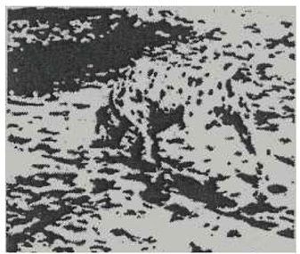

Ç
çaba (effort) Bir amaca varmak, bir engeli aşmak için harcanan zihinsel ya da bedensel güç.
çabaya yönelik tepki (reaction leading to trial) Engellenme ve zorlanma durumunda bireyin içinde bulunduğu konumu biliçli bir biçimde değerlendirerek, karşı karşıya olduğu sorunu çözmek için belirleyip uyguladığı gerçekçi tepkiler. Ruhsal yönden sağlıklı kişi, engellenme ve zorlanma durumunda, savunma mekanizmalarına sarılıp gerçeklerden kaçma yerine, daha çok bu tür sorun çözücü tepkiler gösteriyor.
çağcıl (modern) (çağdaş) 1. (Kişi, kuruluş için) Güncel yenilikleri benimseyen, onlara uyan. 2. Bilim ve tekniğin, düşüncenin yeniliklerinden yararlanan, onları kullanan.
çağcıl okul Bkz. çağdaş okul.
çağcıl toplum Bkz. çağdaş toplum.
çağdaş (contemporary) Aynı dönemde yaşayan, aynı dönemde gerçekleşen, aynı dönemi paylaşan; muasır, dönemdeş. Bkz. çağcıl; çağdaş eğitim; çağdaş eğitim ilkeleri; çağdaş eğitimin temel amacı; çağdaş evlilik; çağdaş insan; çağdaşlaşma; çağdaş okul; çağdaş öğretmen; çağdaş toplum; çağdışı.
çağdaş eğitim Bkz. eğitim.
çağdaş eğitim ilkeleri Bkz. eğitim.
çağdaş eğitimin temel amacı Bkz eğitim.
çağdaş evlilik Bkz. evlilik.
çağdaş insan Bkz. özgürlükten kaçış yaklaşımı.
çağdaşlaşma (modernization) Toplumsal, siyasal, ekonomik, kültürel ve başka alanlarda başta ABD olmak üzere sanayileşmiş Batı toplumlarının sahip olduğu yapı, kurum, değer ve sistemlere sahip olmak amacıyla yapılan düzenlemeler; modernizasyon, modernleşme. Bu anlamda eşit ve genel oy, siyasal parti ve parlamento, karar organlarına katılım gibi demokrasinin temel kurum ve ilkelerinin siyasal alanda egemen kılınmasına siyasal çağdaşlaşma; okuryazarlık oranının yükselmesi, ulusal ve laik ideolojilerin egemen kılınmasına kültürel çağdaşlaşma; kapitalist üretim biçiminin yerleştirilmesine ekonomik çağdaşlaşma: kentleşme ve alt yapı hizmetlerinin yaygınlaştırılması, iletişim teknolojilerinin geliştirilmesi ve geleneksel otorite ilişkilerinin çözülmesi ile ortaya çıkan duruma da toplumsal çağdaşlaşma deniyor.
çağdaş okul (modern school) Genellikle yeni öğrenme, öğretme ve eğitim yöntemlerini uygulayan okul; yeni okul, ileri okul; çağcıl okul.
çağdaş öğretmen Bkz. hümanist öğretmenlik; öğretmen.
çağdaş toplum (modern society) 1. Aynı çağda yaşayan toplumlardan her biri; muasır toplum. 2. Çağın koşullarına, anlayışına uyan, gelişmiş, ileri, uygar toplum.
çağdışı (anachronistic) 1. Tarihe, çağa ters düşen, zaman aşımına uğramış olan. 2. Modası geçmiş, geçerliği kalmamış, çağdaş düzen ve anlayışa uymayan.
çağrışım (association) Aralarında yer ve zaman birliği olan davranış, düşünce ve kavramlar arasında kurulan bağlantılar sonucu, bunlardan birisi bilinç alanına girince ötekini de bilince çekmesi olayı; tedai. Bkz. çağrışım alanları; çağrışım bölgesi; çağrışımcılık; çağrışımların sıklığı ilkesi; çağrışımsal öğrenme; çağrışımsal öğrenme testi; çağrışım psikolojisi; çağrışım testi; çağrışım yasaları: özgür çağrışım.
çağrışım alanları Bkz. beyin kabuğu; çağrışım bölgesi.
çağrışım bölgesi (associative area) Duyu organları yoluyla gelen duyumların kendisinde birleştiği kabul edilen, beynin ön bölgesi.
çağrışımcılık (associationism) Zihinsel ilişkileri, temel sürecin çağrışım olduğu varsayımından yola çıkarak açıklamaya çalışan yaklaşım.
çağrışımlama Bkz. uyandırma.
çağrışımların sıklığı ilkesi Bkz. EBBİNGHAUS, Herman.
çağrışımsal öğrenme Bkz. bağlantılı öğrenme; bağsal öğrenme.
çağrışımsal öğrenme testi (associative learning test) Öğrencinin, sözcüklerin anlamları arasında bağlantı kurabilme yeteneğini ölçen bir test.
çağrışım psikolojisi (associaton psychology) Düşüncelerin çağrışımını temel ilke edinen ve deneysel psikolojiden önce ün yapmış olan bir psikoloji dalı. Bu psikoloji dalında ruhsal yaşamın tüm yapısı çağrışım yasaları ile açıklanıyor. Terim, çağrışımcılık ile eşanlama sahiptir.
çağrışım testi (association test) F. Galton’un geliştirdiği bir test üzerinde C. G. Jung’un birtakım değişiklikler yaparak çözümsel çalışmalarında kullandığı bir sözcük çağrışım testi. Bu uygulamada deneğe bir listeden sözcükler okunuyor. Her sözcük okunduğunda deneğin aklına ilk gelen şeyi söylemesi isteniyor. Uzun tepki süreleri, yinelenen yanıtlar, uyarım (test) sözcüğünün yinelenmesi, hatalar, suskunluklar, tümce kurmalar, yabancı terimlerin kullanılması, dil sürçmesi, kişiye özgü yanıtlar ve fizyolojik değişimler, kümelenmiş bir karmaşanın varlığını gösterebiliyor. Jung, bu teste ek olarak, sıklıkla test sözcüklerini yineleyerek denekten ilk yanıtlarını istediği bir de yineleme yöntemi kullanmıştır. Anımsanmayan yanıtlardan da yine bir karmaşanın varlığını ortaya çıkarmıştır.
çağrışım yasaları (law of association) Bitişiklik yasası adı altında toplanan ve benzerlik, karşıtlık, yer, zaman birliği diye belirlenen kavramlar, tasarımlar arasındaki zihinsel ilişkilerin nasıl oluştuğunu açıklayan yasalar.
çalışan anne ve çocuk (working parents) Annenin çalışmasının çocuk üzerindeki etkileri. Araştırmalar, örneğin Razon’un araştırması (1983), annesi çalışmayan çocukların, annesi çalışanlardan daha başarılı olduklarını gösteriyor. Yetişkinlerle ilişki kurma, aile ilişkilerini algılama açısından da annesi çalışanlarla çalışmayanlar arasında belirgin bir fark görülüyor. Annenin çalışması, çocuğun anne figürünü algılama biçimini ve duygusal gelişimini olumsuz etkiliyor. Ancak, çocukların kişilik özellikleri ve toplumsal-ruhsal gelişimlerinde annesi çalışanlarla çalışmayanlar arasında bir fark görülmüyor. Günde 8-9 saat çalışan annelerin çocuklarının gittiği okulların, onların bütün günlerini doldurmaması ve okul dönüşü kendileriyle ilgilenen bir anne ile karşılaşmamaları, bu çocukların, özellikle ilk sınıfta şiddetle anne eksikliğini duymalarına neden oluyor. Bu çocuklar, hem boş zamanlarını değerlendirmeleri hem de sokağın olumsuz etkilerinden korunmaları için bir yedek bakıma gereksinim duyuyorlar. Yaşadıkları çevrede spor alanlarının, parkların, çocuk bahçelerinin; gidip kitap okuyabilecekleri, ders çalışabilecekleri çocuk kütüphanelerinin; ayrıca çocuk kulüplerinin bulunması, bu çocukların hem becerilerini geliştirmelerini hem de yalnızlık duygularını hafifletmelerini sağlıyor. Eğer çalışan anne, eve dönünceye dek çocuğuna göz kulak olabilecek güvenli bir yer sağlayabiliyor; bütün yorgunluklarına karşın eve döndüğünde çocuğuna kaliteli zaman ayırarak onunla yakından ilgilenebiliyorsa, gündüz çocuğundan uzak kalmanın sakıncalarını hayli azaltıyor.
çalışma 1. (work) Yararlı bir iş, edim gerçekleştirmek ya da belli bir sonuç elde etmek için yapılan beden ve kafa etkinliği; bir iş ya da görevi yerine getirmek için emek ve çaba harcama. 2. (study) Bilgi edinmek ya da edinilmiş bir bilgiyi derinleştirmek amacıyla kafa yorma, çaba gösterme. Bir şeyi öğrenmek, çözmek, yapmak için emek harcama. Ders çalışma, matematik öğrenme, bahçe düzenleme gibi. Gereksinimleri giderme (ekonomik çalışmalar), görev duygusu ya da bir şeyler başarma gereksinim ve sevinci, çok kez çalışmanın itici gücü oluyor. Çalışma ürünü olarak da ortaya ya nesnel bir yapıt konuluyor ya da çoğunluk yararına bir hizmet veriliyor. Çok değişik türde çalışma gerçekleştiriliyor. Bkz. çalışma ahlakı; çalışma belleği; çalışma koşulları; çalışma tutkusu; çalışma ve yapıcılık duygularının gelişimi; iş; meslek.
çalışma ahlakı (work ethic) Üretim sürecinde değişik konumlarda yer alan bireylerin, amaçlanan üretim düzeyine ulaşabilmek için yetenekleri ölçüsünde yerine getirmeyi görev bildikleri sorumluluk ve yükümlülükler.
çalışma belleği (Working Memory (WM)) Anımsamadan önce bilginin bir araya getirildiği ve örgütlendirildiği belleğin etkin bir sistemi. Çalışma belleği, bir açıdan, bellekte yer alan bilginin etkin bir biçimde kullanılma sürecidir. Bu bellek, yalnızca yakın zamandaki olayları değil; aynı zamanda, uzun süreli bellekteki bilgiye dayanan işlemleri de içeriyor. Örneğin, bir çarpma işlemini zihninden yapması istenen kişi, ilk iş olarak uzun süreli belleğinden çarpım kurallarını geri getirecek, hesaplamaları uygulayacak ve çarpım artıklarını depo edecektir. Çalışma belleği, akılda tutmayla ilgili olarak, yineleme grupları gibi etkin süreçleri de içeriyor. Bilişsel çalışmalar, çalışma belleği kapasitesinin büyük ölçüde yaşa bağlı olarak geliştiğini ve sonradan yapılan eğitimle kapasitenin, o yaşın üzerine çıkarılamayacağını kanıtlamıştır. Bu konuyu Pascual Leona incelemiş ve geliştirmiştir. Bkz. bellek; kısa süreli bellek; uzun süreli bellek.
çalışma koşulları (working conditions) İşgörenin verimini etkileyen kazalar ve onun öğeleri olan uyanıklık ve gerginlik; yorgunluk ve bıkkınlık, gürültü, müzik, aydınlatma, hava durumu, çalışma saatleri ve başka koşullar. Bunlardan işgörenin verimini olumsuz etkileyenlerin etkisinin ortadan kaldırılması ve verimi olumlu etkileyecek biçime sokulması gerekiyor. Bkz. endüstri psikolojisi.
çalışma tutkusu Bkz. varoluşçu psikoloji.
çalışma ve yapıcılık duygularının gelişimi Bkz. insanın sekiz çağı ((4) Yetersizlik Duygusuna Karşı Çalışma ve Yapıcılık Duygularının Gelişimi).
çalkalanma (acitation) Baskıya alınmayan gergin, kaygılı bir devingenlik durumu; ajitasyon, çalkantı,kışkırtma.
çalkantı Bkz. çalkalanma.
çalma (theft, burglary) Başkasının malını gizlice alma; hırsızlık etme, aşırma. Çocuktaki alma isteği ile çalma isteğini birbirinden ayırmak gerekiyor. 3-4 yaşlarındaki çocuklar, kendilerinin olmadığını, almamaları gerektiğini bildikleri halde hoşlarına giden bir oyuncağı, bir eşyayı alma isteklerine karşı koyamıyorlar. 5-8 yaşlarındaki çocuklar arasında, annelerinin mutfaktaki bozuk paralarını aşıranlara rastlanıyor. Bu yaşlardaki öğrencilerden kimilerinin, okulda arkadaşlarının çok hoşlandıkları renkli kalemlerini, silgilerini aşırdıkları da bir olgudur. Çocuğun çalmaya yönelmesinin önemli nedenlerinden biri, başıboş bırakılmış, belli kurallara alıştırılmamış olmasıdır. İkinci bir neden, sevgi yoksunluğudur. Çocuk, bu yoksunluğun yarattığı boşluğu, bilinçdışı savunma mekanizmalarını işleterek, çaldığı eşya ya da parayla doldurmaya yönelebiliyor. Çocuk, sevgi ve ilgisini kendisinden esirgeyen anne babasından, arkadaşından, öğretmeninden öç almak, onları uğraştırmak amacıyla da bir şeyler çalabiliyor. Ancak, yaptığı davranıştan suçluluk duyduğunda, çalma olayının bir biçimde görülmesini sağlıyor ve sonuçta alacağı cezayla suçluluk duygusunun verdiği acıyı hafifletmeye çalışıyor. Çalma olaylarıyla karşılaşıldığında ilk koşul, çocuğa soğukkanlılıkla yaklaşmaktır. Ona sakin ve kararlı bir biçimde, yaptığı işin yanlış olduğu açıklandıktan sonra, aşırdığı para, oyuncak ya da eşyayı sahibine vermesi sağlanmalıdır. Bu yanlış davranışı nedeniyle çocuk asla hırpalanmamalı, dayakla ya da başka yollarla cezalandırılmaya kalkışılmamalıdır. Ceza ve benzeri yaklaşımlar, fazla bir işe yaramadığı gibi, başka birçok olumsuzluklara da yol açıyor. Çünkü cezalandırma, çocuğun, sevilmediği biçimindeki inancını daha da pekiştiriyor. Etkili çare, bu akla, mantığa uygun yollarla sorunu çözmeye çalışmaktır. Çocuk, evdekilere benzer aşırmaları okulda da gerçekleştiriyor ve bunları yineliyorsa o zaman yapılacak şey, konuyu ruhsal sorun olarak ele almak ve bir uzman yardımıyla çözmeye çalışmaktır. Bkz. çalma hastalığı; çocuk ve ergende görülen uyumsuzluklar; eğitim güçlükleri.
çalma deliliği Bkz. çalma hastalığı.
çalma hastalığı (kleptomania) Hiçbir nesnel gereksinimi olmamasına karşın, kişinin çalma zorunluluğu duyması ve kendini çalmaktan alıkoyamaması; kleptomani, hırsızlık deliliği, dürtüsel denetim bozukluğu. Bu kişinin çaldığı şey parasal değer taşımıyor; kişinin, çaldığı şeye gereksinimi olmuyor. Kişi, çaldığı şeyi genellikle atıyor, gizlice yerine koyuyor, başkalarına veriyor ya da saklıyor. Ufak tefek nesneleri gizlice almaktan kendini alamama biçiminde ortaya çıkan bu dürtüsel denetim bozukluğu, kişiye çalma eylemi öncesinde artan gerilim duyguları yaşatıyor. Bu tür çalmalar, tutum bozukluğu ya da antisosyal kişilik bozukluğundan değil; bilinçdışı savunma mekanizmalarından kaynaklanıyor. Bu eylemler, uzun uzun tasarlanarak ya da başkalarından yardım alınarak da yapılmıyor.
çaprazlama yöntemi Bkz. MENDEL, Johan Gregor.
çarpı Bkz. şok.
çarpışma yorgunluğu (combat fatigue) Dört aşamalı savaş şoku. İlk aşamada kas titremesi, sıklıkla işeme gereksinimi duyma, yoğun susuzluk duygusu, iştahsızlığa yol açan yemek isteksizliği, kusma, terleme, vazomotor dengesizlik ve korkunun öteki belirtileri ortaya çıkıyor. İkinci aşamada, hafiflemiş ilk aşama belirtileri, yerlerini bir uyanıklığa, güç ve enerji duygusuna bırakıyor. Üçüncü aşamada, yorgunluk, uyuma güçlükleri, tedirginlik ve sürekli titremeler beliriyor. Dördüncü ve son aşamada ise duyumsamazlık, aşırı yoğunlaşma ve bellek sorunları, kaygı ya da ölümün yaklaştığı duygusu, kişisel güvenliğin göz ardı edilmesi; dahası, donukluğa yaklaşan bitkisel bir durum ortaya çıkıyor. Bunlar TSSR ve panik bozukluğunu çağrıştıran belirtilerdir.
çatışma (conflict) 1. Organizmanın birbiriyle bağdaşmayan birden çok duygu, düşünce, dürtü ya da dürtü nesnesi arasında kalması durumu. Çatışma, herkesin zaman zaman yaşadığı bir engellenmedir. Üç çatışma durumu söz konusudur: (1) Yaklaşma-Yaklaşma Çatışması (approach-approach conflict): Eşit uzaklıktaki eşit ve aynı iki nesne ya da bu nitelikteki iki istek karşısında kalan kişi, bu çatışmayı yaşıyor. İki erkekten arkadaşlık önerisi alan ve ikisinden de hoşlanması nedeniyle birini seçmekte zorluk çeken bir genç kızın yaşadığı çatışma, bu tür bir çatışmadır. Burdia’nın Eşeği benzetmesi, bu çatışmayı örneklendiriyor. (2) Kaçınma-Kaçınma Çatışması (ovidance-ovidance conflict). Uzaklaşılmak istenip de uzaklaşılamayan iki olumsuz durum ya da nesne karşısında kalındığında bu çatışma yaşanıyor. “Aşağı tükürsem sakal, yukarı tükürsem bıyık.” atasözü, bu çatışmayı dile getiriyor. (3) Yaklaşma-Kaçınma Çatışması (approach-avoidance conflict): Bu, aynı anda bir olumlu, bir de olumsuz yönleri olan amaç nesnesiyle karşı karşıya kalma durumudur. Hoşlanmadığı arkadaşından uzaklaşmak, hoşlandığı arkadaşıyla birlikte olmak isteyip de bunu gerçekleştiremeyen kişi, bu tür bir çatışmayı yaşıyor. 2. Psikanalize göre, yaşamsal dürtülerle saldırganlık dürtüleri; iki nevrotik eğilim ya da sağlıklı eğilimlerle hastalıklı eğilimler; ruhsal aygıtın üç yapısı olan ilkelbenlik, benlik ve üstbenlik arasında ortaya çıkan bağdaşmazlık ya da uyuşmazlık. İlkelbenlik dürtülerinin doyum isteğini benliğin çevresel gerçeklere aykırı bulması ya da üstbenliğin yasaklaması durumunda; benliğin engellemediği bir ilkelbenlik isteğini üstbenlik suçladığında, benlik ile üstbenlik arasında bir çatışma ortaya çıkıyor. Psikanaliz kuramında, kaygıya yol açan çatışmalar, iç (ruhsal) çatışmalar olarak adlandırılmıştır. Kişi, bu çatışmaların bilincinde değildir. O, yalnızca bu çatışmaların sonucunda beliren gerginlik ve kaygıyı duyumsuyor. Freud’a göre ruhsal bozukluklar, çocukluk çağından kalma iç çatışmaların yol açtığı rahatsızlıklardır. Bkz. çatışma kuramı; engellenme; içgüdü kuramı (Çatışma); yapısal kuram
çatışma kuramı (conflict theory) Toplumsal örgütlenmenin temelinde değer ve kaynakların eşitsiz bölüşümünden kaynaklanan bir yapısal çelişki ve çatışmaların tüm ekonomik, toplumsal, siyasal kurum ve süreçlerin; kültürel, sanatsal ve bilimsel etkinliklerin o toplumda yaşayan sınıf ya da grupların karşılıklı anlaşma, uzlaşma ya da yardımlaşmaları sonucu değil; taraflar arasında değişik düzeylerde sürekli yinelenen çatışmalarının sonucu olduğunu savunan kuram. Bkz. denge kuramı.
Çekiciliğe İlişkin Gündelik Kavramlar Bkz. kişiler arası ilişkiler.
çekicilik (attractiveness) Çekici olma durumu; alımlılık.
Çekicilik Bağlamında Oluşan İlişkiler Bkz. kişiler arası çekicilik.
çekilme (resignation) K. Horney’a göre, kaygı yaratabilen ya da ruhsal çatışmaların bilince çıkmasına yol açabilen durum ve etkinliklerden aşırı kaçınma biçimindeki kişilik eğilimi. Bkz. bütüncü kuram; çekinik tip.
çekilme davranışı (withdrawn behavior) Sürekli engellemelerle karşılaşan kişinin dilek ve isteklerinden vazgeçmesi ya da düşleme, içki ve uyuşturucu ilaçlarla doygunluk sağlaması.
çekingenlik (timidity) Olağan ve normal durumlarda hafif korku ve ürkeklik duyma.
çekinik (ressesive) Kalıtımda, yalnızca eşlenen kromozomlarda kendini tanımlayan alelenin de çekinik olması durumunda beliren bir kalıtsal özellik; resesif. Örneğin, çekinik kalıtsal bir hastalık, yalnızca hem anneden hem de babadan gelen ilgili genin çekinik olması durumunda ortaya çıkıyor. Bkz. genetik.
çekinik gen Bkz. gen
çekinik özellikler Bkz. MENDEL, Johan Gregor.
çekinik tip (resignet type) Horney’a göre, etkin yaşamdan uzaklaşarak ve özgürlük, kendine yeterlik, bağımsızlık dürtülerini öne çıkararak temel çatışmasını çözmeye çalışan tip. Bkz. çekilme.
çekinik özyapı Bkz. gensel tip.
çekip çevirme Bkz. manipülasyon; manipüle etme.
çekirdek Bkz. hücre; talamus.
çekirdek aile (nuclear family) Anne, baba ve evlenmemiş çocuklardan oluşan aile. Bkz. aile (birleşik aile, geniş aile); evlilik (Sağlıklı Bir Eş Olma ve Eş Seçmenin Koşulları).
çekirdek bilişsel süreç Bkz dikkat.
çekirdek karmaşa (nuclear complex) Kökleri çocukluğa uzanan ve yetişkinlik döneminde nevrozlar gibi bir dizi ruhsal bozukluğa yol açan odak bir çatışma ya da sorun. Çekirdek karmaşa daha çok, psikodinamik yaklaşımlarda neyin çekirdek karmaşa diye değerlendirildiğine, söz konusu yaklaşımın neyi temel aldığına bağlıdır. Örneğin, Freud için Oedipus karmaşası; Adler için aşağılık karmaşası; Horney içinse temel çatışma, çekirdek karmaşadır. Bkz. evrensel karmaşa.
çekirdek özellikler Bkz. merkezi kişilik özelliği.
çelişen düşünce ürünleri Bkz. inanç, kanı, değer.
çete (gang) Ortak bir ilgi ya da amaç uğruna birbirine sıkıca bağlanmış ve kendi içlerinde belirledikleri bir disipline göre davranan bir grup. Çetelere 10-11 yaşlarından erginlik yaşına dek herkes giriyor. Çete, çok kez topluma aykırılığı çağrıştırsa da her çete bu niteliği taşımıyor. Bkz. çocuk çeteleri.
çevre (environment) 1. İnsanın ya da öbür canlıları kuşatan, onların gelişimlerini ve yaşamlarını etkileyen dış koşulların bütünü; davranışın gerçekleştiği dış ortam; insanın, kendi dışında algıladığı her şey. Çevre, birlikte kullanıldığı ada göre büyük farklılıklar gösteriyor. Örneğin, dölütün çevresi, amniyatik sıvı; yeni doğan bebeğin çevresi ise ev ve orada yaşayanlardır. Bkz. habitat. 2. Bir bireyin, grubun ya da toplumun biyolojik, toplumsal ve kültürel yaşamını etkileyebilecek dış etkenlerin tümü. İnsanın henüz etkilemediği ya da önemli ölçüde müdahale etmediği bitki, hayvan, dağ, deniz ve başka öğelerden oluşan çevreye doğal çevre; toplumsal ilişkilerle insan bilgi ve deneyiminin doğal yapıyı ve kaynakları dönüştürmesi sonucunda ortaya çıkan çevreye yapay çevre; bireyi kuşatan toplumsal beklentilerin, ilişkilerin ve kurumların belirlediği ortama toplumsal çevre; bilimsel, sanatsal ve felsefi etkinliklerin oluşturduğu çevreye de entellektüel çevre deniyor. Bkz. çevre aydını; çevrebilim; çevrecilik; çevre psikolojisi; çevresel biliş; çevre sinir sistemi; çevreye uyum.
çevre aydını (peripherical intellectual) Eylemli gündemi ve zihin matrisleri kendi tarihsel-toplumsal konumunun sorunlarından çok kendisine odak aldığı uygarlığın sorunsallarıyla belirlenmiş; çözümü de sürekli bu odakta arayıp odağın yol göstericiliğine olan inancını hiç yitirmeyen; ancak, odağı gerçekten izlemeyi de bir türlü beceremeyen aydın tipi. Bkz. aydın.
çevrebilim (ecology) 1. Canlılarla çevreleri arasındaki dinamik ilişkiyi; özellikle bunların arasındaki etkileşimin bütününü ya da yapısını inceleyen bilim dalı; ekoloji. Canlıların geçmişteki yaşamları, zaman içinde ve coğrafyadaki dağılımları, davranış biçimleri; evren (popülasyon), topluluk ve ekosistem düzeyindeki doğal sistemlerin yapısal ve işlevsel özellikleri de bu alanın konularıdır. 2. Biyolojiden alınmış olup sosyal bilimlerde çok çeşitli kullanım alanı bulan bir terim. Örneğin, K. Lewin, bu terimi kişinin yaşam alanına katkı yapan ruhsal etkenlerin incelenmesi için kullanmıştır.
çevrecilik (environmentalism) 1. Canlıyı; özellikle insanı saran nesneler, koşullar ya da baskıların etkilerine ağırlık veren ve kalıtımı önemsemeyen bir görüş ya da öğreti. 2. Çevre kirliliği, kaynakların tükenmesi gibi genelde dünya üzerindeki canlıların yaşamı için tehlike yaratan sorunların çözümü ve doğal çevrenin korunması doğrultusunda etkin çalışma hareketi. Hızlı sanayileşme ve insanın doğaya egemen olma çabasının sonucu olarak doğanın kendini yenilemesine fırsat tanımayan bir hızla kirletilmesi üzerine doğal yaşam ve çevre yok olma tehlikesi ile karşı karşıya gelince çevreyi kurtarma amacıyla ideolojik-toplumsal bir hareket oluştu.
çevre psikolojisi (environmental psychology) Doğal ve toplumsal çevrenin hangi öğelerinin belirli bir dönem içinde bireyin yaşam alanını oluşturacak amaçlara ve engellere dönüşebileceğini belirlemeye uğraşan; başka deyişle fiziksel çevrenin, insanın ruhsal süreçleri ve davranışları üzerindeki etkilerini inceleyen psikoloji dalı; çevresel ruhbilim. Çevre psikolojisi, yapıların tasarımı, gürültünün azaltılması, dinlenme ve oyun alanları ile insanın tüm fiziksel çevresini iyileştirmeye yardımcı olacak, uygulanabilir psikolojik ilkeleri belirlemeye çalışıyor.
çevresel biliş Bkz yerlere bağlanma.
çevresel ruhbilim Bkz. çevre psikolojisi.
çevre sinir sistemi (peripheral nervous system) Beyin ve omuriliğin dışındaki bütün hücre gövde gruplarını; başka deyişle alıcıları, kasları ve salgı bezlerini kapsayan sinir sistemi. Çevre sinir sistemi de merkez sinir sistemi gibi, özerk ve sempatik işleyiş gerçekleştiriyor. Özerk sinir sistemi ve sempatik sinir sisteminin kolayca ayırt edilecek kadar belirgin uçları vardır. Çevre sinir sistemi, sinirlerin ve gangliyonların merkez sinir sisteminin neresinden başladığına bağlı olarak; kafatası sinirleri ve belkemiği sinirleri biçiminde ikiye ayrılıyor. Devimsel liflerin hücre gövdeleri, merkez sinir sistemine yakın yerlerde; duyusal liflerin hücre gövdeleri ise, merkez sinir sistemi dışındaki gangliyonlarda yer alıyor. 12 çift olan kafatası sinirlerinin 1., 2., 3., 4. ve 6. çiftleri, koku ve göz işlevleriyle; 5. çift, ağzın duyumu, dil ve çiğneme işlevleriyle ilgileniyor. 7. çift, yüz hareketlerini ve tat almayı; 8. çift, işitsel etkinlikleri denetliyor. 11. ve 12. çift ise, ağız duyumuna katkı sağlıyor. Sinir çiftlerinin görevleri, görüldüğü gibi, binişiktir. Düzenli ve benzer olan 31 çift belkemiği siniri, omurga arasındaki boşluklardan bağlantılıdır. Belkemiği sinirleri, omurilikteki ventral ve dorsal köklere ayrılıyor. Dorsal kökteki duyusal işlevleri yerine getiren belkemiği sinirleri, yüzün dışında, vücudun hemen her bölgesinden mekanik, termik basınç gibi alıcılarla duyum alıyor. Ventral köke bağlı belkemiği sinirleri ise, vücudun baş ve boyun dışındaki çizgili kasların tümünü denetleyerek devimsel işlevleri gerçekleştiriyor. Çevre sinir sisteminin özerk bölümü, iç organlar dışında, devimsel liflerden oluşuyor ve bir bütün olarak görev yapıyor. Özerk bölüm, göğüs-bel sistemi olan sempatik bölümden ve kafa-kuyruk sokumu sistemi olan parasempatik bölümden oluşuyor. Bu iki sistem, birbirine bağlı olarak çalışıyor. Bu sistemlerin hipotalamusla ilişkileri anımsandığında ise bu sınıflandırmanın yapay olduğu; sonuçta, sinir sisteminin bir bütün olarak çalıştığı görülüyor. Bkz. sinir sistemi.
çevre tedavisi Bkz. tam itme tedavisi.
çevreye uyma Bkz. bilişsel gelişim kuramı.
çeyrek kayma (quartile deviation-q) Birinci ile üçüncü çeyrek noktalarının ortası; başka deyişle Ç3 (%75 noktası) ile Ç1 (%25 noktası) arasındaki aralığın yarısı. Bu aralık, normal dağılım olası yanılgısına eşittir.
çıkar grubu Bkz. baskı grubu
çıkarım: Bkz. çıkarsama.
çıkarsama (inference) Bir ya da daha çok yargıdan başka bir yargıya varma süreci; çıkarım, vardama.
çıldırı Bkz. psikoz.
çıplak metin Bkz. şifreli metin.
çift cinsellik (bisexual, bisexuality) 1. Hem kendi cinsiyle hem de karşı cinsle ilişkiye giren insanlar için kullanılan bir terim. 2. Klasik psikanalize göre, aynı kişide hem erkeklik hem de dişilik ruhsal özellikleri bulunuyor; her insan, ruhsal-cinsel anlamda yapısal olarak çift cinsiyetlidir. Daha sonraki kuramlar ise ruhsal-cinsel çift cinselliği, çocukların değişen ölçülerde annesi ya da babasıyla özdeşleşmesine gönderme yaparak açıklamışlardır. Bu kuramcılar, klasik psikanalizin; etkinliği, saldırganlığı, elezerliği, entelektüellik ve araştırmacılığı erkeklikle; edilginlik, boyun eğicilik, özezerlik, sevgisellik ve alıcılık davranışlarının ise kadınlıkla eşleştirmesine de karşı çıkmışlardır. Bu özelliklerin doğuştan gelmeyip toplumun kadına ve erkeğe yakıştırdığı rollerden kaynaklandığını ve toplumsallaşma sürecinde öğrenildiğini ileri sürmüşlerdir. Bkz. hermafrodit.
çifte şahsiyet Bkz. ikili kişilik.
çift istikrarlı algısal olaylar (bistable perceptual events) Aynı anda karşılaşılan birçok uyarımın, birden çok biçimde yorumlanabilirliği. Bunların kimisi Rubin figürü (figür-zemin) yanılsamaları gibi, geri döndürülebilen çift kararlılıklı uyarılardır. Çoğu ise geri döndürülemiyor. Algısal öğrenme, tipik olarak geri döndürülemeyen çift istikrarlılık özelliği gösteriyor. Yukarıdan aşağıya işlemede iyi bir örnek oluşturan Dalmaçyalı resmi, bunu açıklıyor. Resimdeki algı, geri döndürülemiyor.Figürü (Dalmaçyalıyı) bir kez algıladıktan sonra, artık, zeminin bir parçası olarak göremiyoruz. Oysa örneğin, Rubin figüründe algı, insan yüzü ve vazo olarak, iki farklı şey arasında sürekli gidip geliyor. Bkz. belirsiz figür

Dalmaçyalı
çift kodlama varsayımı (dualcoding hypothesis) Bellekte biri sözel, biri görsel olarak iki tür kodlama sistemi olduğu varsayımı. Bkz. imge.
çift kutuplu I (bipolar) Çift kutuplu bozukluğun klasik biçimi. Sıklıkla birbirinden uzun aralıklarla ayrılan ve uzun süren mani evrelerini izleyen yine uzun süreli depresyon (ya da tersi) ile tanımlanıyor. Ancak temel tanım, depresyon + mani ya da karma durumlardır.
çift kutuplu II. (bipolar) Bazı sınıflandırma sistemlerinde; örneğin, DSM-IV’te, hastalığın manik evresinde, çift kutuplu bozuklukta olduğu gibi tam bir mani değil de bir hipomani sergileyen bir tür çift kutuplu bozukluk.
çift kutuplu bozukluk (bipolar disorder) çift kutuplu psikoz, taşkın-çöküntülü psikoz. Bkz. manik-depresif psikoz.
çiftler halinde öğrenme (paired-associated learning) Anlamsız hece çiftlerinin deneğe gösterildiğinde deneğin ilk heceyi uyarıcı; ikinci heceyi davranım olarak öğrenmek durumunda kalmasına benzer bir öğrenme biçimi. Örneğin, yabancı dilde bir sözcük listesini öğrenmede uyarıcılar, dillerin birindeki sözcükler; davranımlar ise öteki dildeki sözcüklerdir. Çiftler halinde öğrenmede, klasik koşullamaya benzeyen uyarıcı-davranım bağı önem taşıyor.
çiftleşme Bkz. cinsel ilişki.
çiftleşme davranışı (moting behavior) Aynı türden erkek ve dişiyi cinsel ilişkiye dek götüren türlü aşamalardaki dikkat, ilgi çekme, beğendirme, elde etme gibi davranışlara verilen ad.
çift sayılar Bkz. bozma.
çift yumurta ikizleri (fraternal twins) Dişinin iki ayrı yumurtasının, ayrı spermlerle aynı zamanda döllenmesi ile gelişen ikizler; ayrı yumurta ikizleri. (dizygote ile oluşan ve genotipi ile fenotipi bakımından birbirinden farklı olan ikizler). Ayrı zamanlarda doğmuş olan kardeşlere oranla çift yumurta ikizlerinin benzerlikleri daha fazla; tek yumurta ikizlerine göre ise, daha azdır. Kalıtım ve çevre etkisinin ele alındığı araştırmalarda, çift yumurta ikizleri de denek olarak kullanlıyor.
Çince odası (Chinese room) Makinenin insan gibi anlayıp yorum yapabileceği yolundaki yapay zekâ kuramlarını çürütmek için John Searle’nin kurguladığı bir değerler dizisi (paradigma). Bu kurguda bir kişi, penceresi olan bir odada oturuyor. Bu kişi, Çince bilmiyor; ama elinde, her Çince tümcenin Çince yanıtı bulunan bir sözlük ya da kurallar kitabı vardır. Odanın penceresinden kendisine, yazılı olarak Çince tümceler veriliyor. Kişi, bu tümceleri alıyor ve yanıtlarını yazılı olarak, aynı pencereden dışarı iletiyor. Bu kişi, her tümceye doğru yanıt vermek gibi uygun bir davranış gösterse de iletilenler konusunda hiçbir şey anlayamıyor. Bir bilgisayar modelinin yapabileceği en iyi şey de Çince odasında bulunan kişinin yaptıklarıdır. Bu nedenle bilgisayar, insan anlayışını taklit edemez. Yapay zekâ, bir sözdizimi (syntax) sağlayabilir; ancak, anlam yorumu (semantics) yapamaz. Çince odası, akıllı makineler için kullanılan Turing makinesi modeline karşı, güçlü bir eleştiri olarak ortaya konmuştur.
Çinlilerde eğitim (education in China) Çin, çok eski dönemlerden beri önemli bir kültür merkezi olmuştur. Eski Çinliler, geçmişlerine ve geleneklerine çok bağlıydılar. O nedenle Çin eğitiminin temelini gelenek oluşturuyordu. Çinliler, eski Türklerin de etkisiyle güçlü bir uygarlık kurmuşlar ve bunu yüzyıllar boyunca sürdürmüşlerdir. İsa’nın doğumundan 6 yüzyıl önce Çin’de iki devrimci yaşadı. Bunlardan biri olan Lao-tsée özgürlük ve ilerilikten yanaydı; alışkanlıklara başkaldırıyordu. İkincisi ise Conk-tsée (Confucius (Kofüçyüz)) idi. O ise gelenekçiydi. Halkı aileye, hükümete bağlamaktan yanaydı. Konfüçyüs’ün bu düşüncesi, Çinlilerin alışkanlıklarına uygun düştüğü için Çin’de çabuk kökleşti ve zamanımıza dek ulaştı. Onun görüşüne göre erdem sahibi olmak, ancak hükümete boyun eğmekle olanaklıydı. Bu anlayışa uygun İlköğretim, Çin’de çok yaygındı. En küçük köyde bile okul vardı. Bu okullara giden çocuklar, geleneğe göre 10 yaşına dek öğrenilmesi gereken törenleri ve görgü kurallarını öğreniyorlardı. 10 yaşından sonra erkek çocuklar, okumayı, hesap yapmayı, gençlerin izlemek zorunda oldukları davranışları öğrenmek için okula gidiyorlardı. 13 yaşından sonra da müzik öğrenebiliyorlardı. Kadının görevi, erkeğe en üst düzeyde saygı göstermek ve boyun eğmekti. Erkeğine kötü davranan kadın, ağır cezalara çarptırılıyordu. Kadına karşı kötü davranış ise hiçbir zaman cezayı gerektirmiyordu. Çin’de halk eğitimi de önemseniyordu. Halk eğitiminin temel amacı, halkın gönlünü okşayarak gelenekelerine, alışkanlıklarına saygılı davranarak halkın var olan bilgisine yeni bilgiler katmaktı. Büyük bir düşünür, büyük bir eğitimci olan Konfüçyüs’ün ortaya koyduğu ilkeler, Çinlilerin eğitiminde yol gösterici olmuş; Çin’de eğitim, yüzyıllar boyunca bu ilkelere uygun olarak sürdürülmüştür.
çocuğa dengeli davranma Bkz. çocuk ve ergenin gelişim dönemleri; sağlıklı anne baba tutumu.
çocuğa yönelik sapıklık (pedophilia) Daha çok, ileri yaştaki yetişkinler arasında çocuklara karşı duyulan cinsel ilgi; pedofili.
çocuğu aşırı onaylama Bkz. kusurlu anne baba tutumları (Ödünleyici, Aşırı Koruyucu Annelik).
çocuğu azarlama, suçlama, cezalandırma Bkz. insanın sekiz çağı (ilk dört çağ).
çocuğun cinsel soru ve cinsel oyunlarına karşı takınılması gereken tutum Bkz. ruhsal-cinsel gelişim.
çocuk (child, infant) Küçük yaştaki oğlan ya da kız. Sürekli değişen ve ilerleyen olgunlaşma çağında olan birey. Çocuk kavramına değişmeyen bir tanım yüklenemiyor. Doğumla 2 ya da 3 yaşlar arasına bebeklik; 2-3 yaşlar ile 6 yaş arasına ilk çocukluk; 6 yaş ile 11-12 yaşlar arasına ikinci çocukluk; 11-12 yaşlar ile 18-20 yaşlar arasına da ergenlik deniyor. Bkz. çocuğa dengeli davranma; çocuğa yönelik sapıklık; çocuğu aşırı onaylama; çocuğu azarlama, suçlama, cezalandırma; çocuğun cinsel soru ve cinsel oyunlarına karşı takınılması gereken tutum; çocuk analizi; Çocuk Bahçesi; çocuk bilimi; çocuk büyütme; çocuk cinselliği; çocuk çeteleri; çocuk doğurma yaşı; çocuk edebiyatı; çocuk eğitimi; çocuk hakları; Çocuk Haklarına Dair Sözleşme; çocuk ıslahevi; çocuk kitaplarında bulunmaması gereken özellikler; çocuklara ışık tutan sevecen bir yol gösterici; çocuklara okutulacak kitapların nitelikleri; çocukları düzenli ve tutarlı bir eğitimden geçirme; çocukların doğuş sırası, sayısı ve yaş farkı; çocuklar için Wechsler zekâ ölçeği; çocukluk; çocuk sömürüsü; çocuksu cinsel yaşama gerileme; çocuk mahkemeleri; çocuk psikanalizi; çocuk psikolojisi; çocuk ruh sağlığı; çocuksu cinsellik evresi; çocuk sömürüsü; çocuk suçluluğu; çocuksuluk; çocukta dil ve düşüncenin gelişimi; çocuk ve ergende görülen ruhsal bozukluklar; çocuk ve ergende görülen uyumsuzluklar; çocuk ve ergenin gelişim dönemleri; çocuk ve ergenin ruhsal-cinsel gelişimi; eğitim.
çocuk analizi (child analysis) Çocukların ruh çözümlemesi; çocuk ruh çözümlemesi. Klasik psikanalizde çocuk analizi ya doğrudan edilgin gözlemle ya da anne babanın gözlemleri ile yapılıyordu. Melanie Klein ve Anna Freud’un geliştirdiği çocuk analizinde ise çözümlemeci, çocukla doğrudan iletişim ve etkileşim kuruyor. Yetişkinlerde ruh çözümleme, özgür çağrışımla gerçekleştirilirken, çocuklarda bu, oyun tekniği ile yapılıyor.
Çocuk Bahçesi (Kindergarten) İlk kez ünlü eğitimci Fröbel’in Almanya’da okulöncesi 3-6 yaşlar arasındaki çocuklar için açtığı eğitim kurumu. Bu kurumlar, bu yaş çocuklarını yetiştirmek üzere eğitilmiş olan eğitimcilerin yönetiminde hizmet vermiştir. Tümü devletin denetiminde olmak üzere, bunların bir bölümü özeldi. Bu okullarda son zamanlarda Montessori yöntemi de uygulandı. Oyun, el etkinlikleri, müzik, aileye benzeyen toplu yaşayışlar birer eğitim aracı olarak ele alındı. Çocuk psikolojisine en uygun olan bu araçlardan çocuk eğitiminde geniş ölçüde yararlanıldı. Bkz.FRÖBEL, Fried.
çocuk bilimi (pedology) Çocuğu büyümesi, duyguları, düşünceleri, yetenekleri, gereksinimleri ve benzeri yönleriyle inceleyen bilim; çocukbilim. Bu terimi ilk kez Jena Üniversitesi’nde bir inceleme yazısında 1894’te O. Christman kullanmıştır.
çocuk büyütme Bkz. çocuk eğitimi.
çocuk cinselliği Bkz. çocukluk cinselliği.
çocuk çeteleri (youth gongs) Erinlik öncesindeki bir iki yıl ile ergenlik döneminde bir araya gelerek birbirlerine sımsıkı bağlanan birkaç çocuk ya da gencin ilk zamanlarda amaçsız; daha sonra belli bir amaç doğrultusunda birtakım olumsuz girişimlerde bulunmak üzere oluşturduğu gruplar. Bu gruplar ilk zamanlar yalnızca bir arada bulunmaktan, ortak mal edinmekten, ele geçirdikleri yiyecekleri paylaşmaktan ve giz ortaklığı yapmaktan hoşlanıyorlar. Böyle bir gruba giren çocuklar, yavaş yavaş anne babaları ve öğretmenleriyle ilgisini kesiyor; serüven dolu bir yaşam sürmeye başlıyor; toplumdan soğuyor ve ona karşı olumsuz duygular geliştiriyor. Grup üyeleri aralarından bir önder seçiyorlar; ona koşulsuz boyun eğmeyi kabul ediyorlar. Ondan sonra bir grup anlayışı gelişiyor; grup, kendini bir birlik ve güç olarak görmeye başlıyor. Grup, belli zamanlarda belli yerlerde buluşuyor, ad değiştiriyor, belli işaretleri taşıyor ya da bunlar aracılığı ile anlaşıyor, toplum normlarına aykırı gizli işlere girişiyor. Böylece çete oluşuyor. Ondan sonra çeşitli suçlar işleniyor; eylemler, cinayetlere dek götürülebiliyor. Çete üyeleri “ser verip sır vermez.” duruma geliyor. Aile ve okulun çocuk ve ergenlerden ilgilerini esirgemeyerek çocuk ve ergenlerin grup etkinliklerinin yukarıda belirtilen olumsuzluklara varmasına engel olmaları gerekiyor. Bkz. çete; çocuk suçluluğu.
çocuk doğurma yaşı Bkz. doğurganlık yaşı.
çocuk edebiyatı (children’s literature) Daha çok 2-14 yaşları arasındaki çocukların gereksinimlerini karşılayan edebiyat alanı; çocuk yazını. Çocuk edebiyatı deyimi, çocukluk döneminde bulunanların duygu, düşünce ve düşlerine yönelik sözlü ve yazılı bütün yapıtları kapsıyor. Masallar, öyküler, romanlar, anılar, yaşamöyküleri, gezi yazıları, şiirler, fen ve doğa olaylarını anlatan yazılar ve benzerleri çocuk edebiyatı kapsamına giriyor. Bu yapıtların da yetişkinler için hazırlanan yapıtlar gibi nitelikli ve etkili olmaları gerekiyor. Bu nedenle çocuk edebiyatı, “usta yazarların özellikle çocuklar için yazdıkları ve üstün sanatsal nitelikler taşıyan yapıtlara verilen genel ad” diye de tanımlanabiliyor. Yetişkinler için yazılmış olan edebiyat yapıtlarının çocukların duygu, düşünce ve düşlerine her zaman uygun düşmeyeceği açık seçik ortada iken çocuklara özgü bir edebiyatın düşünülemeyeceği görüşünü savunanlar olmuştur. Ancak son zamanlarda çocuk edebiyatının hem nitelik hem de nicelik açısından değerli çok sayıda yapıta kavuşmuş olması, bu edebiyat türünün varlığının en somut kanıtıdır. Ne ki şimdi de yayımlanan onca kitap arasından değişik yaşlardaki çocuklara yararlı olacak nitelikli yapıtların seçimi sorunu doğmuştur. Bkz. çocuk kitaplarında bulunmaması gereken özellikler: çocuklara okutulacak kitapların nitelikleri; çocuk ve ergenin gelişim dönemleri (3) İkinci Çocukluk Dönemi: c) Zihinsel ve Dilsel Gelişim).
ÇOCUKLARIN EDEBİYAT YAPITLARINA GEREKSİNİM DUYMA NEDENLERİ
Leland JACOB
1. Edebiyat, hoş vakit geçirtiyor, eğlendiriyor. Bu nedenle radyonun, sinemanın, televizyonun, (bilgisayarın) yanında elbette okumaya da yer ayrılması gerekiyor. Eğer çocuğa okulda okumayı sevme, okumaktan yalnızca okumak için zevk alma öğretilmezse onun, iyi yurttaş olma fırsatlarından birini kaçırmış olmasına yol açılıyor. Bu nedenle edebiyata bir hoş vakit geçirme aracı olarak öğretim programında yer verilmesi düşünülebilir.
2. Edebiyat insana canlılık veriyor; insanın yaşama sevincini ve gücünü artırıyor. Kimi zaman edebiyat bizi, yaşamın çok önemli ve üzücü durumlarından uzaklaştırıyor. Güzel bir düzyazı ya da şiir okumanın kazandırdığı yaşantılarla insan, kısa sürede tasalarından kurtulma olanağı buluyor ve bu tasaların karşısına daha güçlü, daha dinlenmiş olarak çıkmanın yollarını öğreniyor. Okulda bu tür yaşantılar edinmek için fırsat verilmediğinde çocuklar, insanın duygu ve düşüncelerini canlandırıp güçlendirmede edebiyatın bu şaşırtıcı, olağanüstü değerini öğrenmekten yoksun kalmış oluyorlar. Edebiyatın kişiye ruhsal canlılık kazandırma konusundaki hizmeti bu kadar da değildir. Okuduğumuz ve zamanla adını bile unuttuğumuz değerli kitaplarla yeniden karşılaştığımızda, çok eski bir dostla buluşmanın derin hazzını duyuyoruz.
3. Edebiyat, yaşamı keşfetmemize yardım ediyor. Yaşamı, yaşama yollarını öğrenmek için çocukların edebi yapıtlara gereksinimleri vardır. Başka kişilerin ilginç yaşantılarını, radyo, televizyon, sinema da içinde olmak üzere, başka hiçbir araç, bize bir edebiyat yapıtı kadar etkili bir biçimde sunamıyor. İyi bir yazar, yaşamın gerçeklerini iyi gözlemliyor; genç okuyucu ile şu ya da bu biçimde yakın bir ilişki kuruyor. Yazar, yapıtındaki kahramanların yaşayışlarını, alışkanlıklarını, törelerini, duygu ve düşüncelerini tüm ayrıntılarıyla yansıtıyor. Kimi yaşantılar vardır ki bunlar edebiyat yapıtlarının okunmasıyla kazanılıyor. Bu nedenle çocuklar, hayatı keşfetmek için edebiyata muhtaçtırlar.
4. Edebiyat bir rehberdir. Kimi edebiyat ürünleri, kişinin kendisini tanıyarak davranışlarını değiştirme olanağı hazırladığı için bir rehberlik hizmeti de veriyor. İyi bir okur olan herkesin yaşamında bu nitelikte en az bir kitap vardır.
5. Edebiyat, kişiyi yaratıcı etkinliklere özendiriyor. Edebiyat, çocukların başka alanlardaki yaratıcı etkinliklere geçmeleri için bir sıçrama tahtası görevi yapıyor. Başka sanatlarla ilişkili zengin bir program eşliğinde yaratıcılığa yönelten okuma etkinlikleri sayesinde bir sanat, başka bir sanatı desteklemiş oluyor. Okuma, çocuğu resim çizmeye ve dramatik sanatlar alanında ritmik yorumlar yapmaya özendiriyor. Bu alandaki zengin yaşantılar, yaşamın öbür yaratıcı alanlarında da kişiliği zenginleştiriyor.
6. Edebiyat, dilin gelişmesini ve güzelleşmesini sağlıyor. Çocuklar, kendi dillerini geliştirmek için edebiyat yapıtlarına gereksinim duyuyorlar. Edebiyat, güzel bir dil demektir. Çocukların anadillerinin güzelliklerini en iyi biçimde öğrenmeleri, o dilde yazılmış nitelikli yapıtları okumalarına bağlıdır ve bunu istemeyecek kimse bulunamaz. (Çeviren: A. Ferhan OĞUZKAN. Çocuk Edebiyatı, 1979). (Özetlendi).
çocuk eğitimi (childhood education, child education) Çocukluk ve ergenlikte süren eğitim; çocuk büyütme. Çocuk eğitimi, çocuğun yaşına ve kendine özgü gelişim özelliklerine uygun olarak sürdürülüyor. Çocuk eğitimi, bilimsel bilgi donanımı ve tutarlı bir uygulama becerisi gerektiriyor. Bkz. yetişkin eğitimi.
çocuk hakları (rights of children) Çocuk Haklarına Dair Sözleşme’de belirtilen haklar. Bu sözleşme, Cenevre Antlaşması ya da Dünya Gençleri Yasası adlarıyla da anılıyor. Bu haklar, dağınık biçimde de olsa, bütün ileri ülkelerin yasa ve anayasalarında yer almıştır. Çocuk haklarını ilk kez 1923’te Uluslararası Çocuklara Yardım Derneği derleyip yayımladı; 1924’te bu hakları Milletler Cemiyeti benimsedi; Birleşmiş Milletler kurulduktan sonra 1948’de bu haklar yeniden gözden geçirildi; son biçimi ile 1959’da yayımlandı; 09.12.1994 gün ve 4058 sayılı yasa ile de ülkemizde kabul edildi. Bu sözleşmede kabul edilen ve 54 maddede açıklanan çocuk haklarından birkaçı özetle şöyledir:
ÇOCUK HAKLARINA DAİR SÖZLEŞME’DEN BİRKAÇ MADDE
Bu sözleşme uyarınca çocuğa uygulanabilecek olan yasaya göre daha erken yaşta reşit olma durumu dışında, 18 yaşına kadar her insan çocuk sayılır.
1.Taraf devletler, çocuğun her türlü ayırıma ya da cezaya tabi tutulmasına karsı etkili biçimde korunması için gerekli tüm uygun önlemi alırlar.
1.a.Çocukları ilgilendiren bütün etkinliklerde, çocuğun yararı temel düşüncedir. b. Taraf devletler çocuğun esenliği için gerekli bakım ve korumayı sağlamayı üstlenirler ve bu amaçla tüm uygun yasal ve yönetsel önlemleri alırlar. c. Taraf devletler, çocukların bakımı ya da korunmasından sorumlu kurumların, hizmet ve etkinliklerin, yetkili makamlarca konulan ölçülere uymalarını taahhüt ederler.
5. Taraf devletler, çocuğun yeteneklerinin geliştirilmesi ile uyumlu olarak, çocuğa yol gösterme ve onu yönlendirme konusunda, hukuken sorumlu kişilerin sorumluluklarına, haklarına ve ödevlerine saygı gösterirler.
6.a. Taraf devletler, her çocuğun temel yaşama hakkına sahip olduğunu kabul ederler. b. Taraf devletler, çocuğun hayatta kalması ve gelişmesi için mümkün olan azami çabayı gösterirler.
7. Çocuk, bir isim hakkına, bir vatandaşlık kazanma hakkına ve mümkün olduğu ölçüde anne babasını bilme ve onlar tarafından bakılma hakkına sahiptir.
8.a.Taraf devletler, yasanın tanıdığı biçimiyle çocuğun kimliğini koruma hakkına saygı göstermeyi ve bu konuda yasa dışı müdahalelerde bulunmamayı taahhüt eder.
9.a.Taraf devletler, çocuğun anne babasından, onların rızası dışında ayrılamamasını güvence altına alırlar. Ancak anne babası tarafından çocuğun kötü muameleye maruz bırakılması ya da ihmal edilmesi durumlarında ya da anne babanın birbirinden ayrı yaşaması nedeniyle çocuğun ikametgâhının belirlenmesi amacıyla karara varılması gerektiğinde bu tür bir ayrılık kararı verilebilir.
10. b. Anne babası, ayrı devletlerde oturan bir çocuk, olağanüstü durumlar dışında, hem anne hem de babası ile düzenli biçimde kişisel ilişki kurma ve doğrudan görüşme hakkına sahiptir.
13.a. Çocuk, düşüncesini özgürce açıklama hakkına sahiptir. Bu hak, ülke sınırları ile bağlı olmaksızın; yazılı, sözlü, basılı, sanatsal biçimde ya da çocuğun seçeceği başka bir araçla her türlü haber ve düşüncelerin araştırılması, elde edilmesi ve verilmesi özgürlüğünü içerir. b. Bu hakkın kullanılması yalnızca başkasının haklarına ve itibarına saygı; milli güvenliğin, kamu düzeninin, kamu sağlığı ve ahlakın korunması nedenleriyle ve yasa tarafından öngörülmek ve gerekli olmak kaydıyla yapılan sınırlamalara konu olabilir.
13.Taraf devletler, çocuğun düşünce, vicdan ve din özgürlükleri hakkına saygı gösterirler.
13.a. Taraf devletler, çocuğun dernek kurma ve barış içinde toplanma özgürlüklerine ilişkin haklarını kabul ederler.
16.a. Hiçbir çocuğun özel yaşantısına, aile, konut ve iletişimine keyfi ya da haksız bir biçimde müdahale yapılamayacağı gibi, onur ve itibarına da haksız olarak saldırılamaz.
13.Taraf devletler, çocuğun özellikle toplumsal, ruhsal ve ahlaki esenliği ile bedensel ve zihinsel sağlığını geliştirmeye yönelik çeşitli ulusal ve uluslar arası kaynaklardan bilgi ve belge edinmesini sağlarlar.
13.a.Taraf devletler, çocuğun yetiştirilmesinde ve gelişiminin sağlanmasında anne babanın birlikte sorumluluk taşıdıkları ilkesinin tanınması için her türlü çabayı gösterirler.
13.a. Taraf devletler, çocuğun bedensel ya da zihinsel saldırı, şiddet ya da suistimale, ihmal ya da ihmalkâr muameleye, ırza geçme de içinde, her türlü sömürü ve kötü muameleye karşı korunması için yasal, yönetsel, toplumsal, eğitsel bütün önlemleri alırlar.
13.a. Çocuk, devletten özel koruma ve yardım görme hakkına sahiptir.
13.Taraf devletler, çocuğun en yüksek yararının temel düşünce olduğunun benimsenmesi ve yetkili makamın karar vermesi ile evlat edinme sistemini kabul ederler.
23. Taraf devletler, zihinsel ya da bedensel engelli çocukların saygınlıklarını güvence altına alan, özgüvenlerini geliştiren ve toplumsal yaşama etkin biçimde katılmalarını kolaylaştıran koşullar altında eksiksiz bir yaşama sahip olmalarını kabul ederler.
24. Taraf devletler, çocuğun olabilecek en iyi sağlık düzeyine kavuşma, tıpsal bakım ve rehabilitasyon hizmetlerini veren kurulaşlardan yararlanma hakkını tanır.
26. a. Taraf devletler, her çocuğun, sosyal sigorta da içinde, toplumsal güvenlikten yararlanma hakkını tanır ve bu hakkın elde edilmesi için gerekli önlemleri alır.
28. Taraf devletler, çocuğun eğitim hakkını kabul ederler ve bu hakkın fırsat eşitliği temeli üzerinde tedricen gerçekleştirilmesi için: 1. İlköğretimi herkes için zorunlu ve parasız hale getirirler. 2. Orta öğretim sistemlerinin genel olduğu kadar mesleki nitelikte de olmak üzere çeşitli biçimlerde örgütlenmesini teşvik ederler ve bunların tüm çocuklara açık olmasını sağlarlar. 3. Uygun bütün araçları kullanarak yüksek öğretimi yetenekleri doğrultusunda herkese açık hale getirirler. 4. Eğitim ve meslek seçimine ilişkin bilgi ve rehberliği bütün çocuklar için elde edilir hale getirirler. 5. Okullarda düzenli biçimde devamın sağlanması ve okulu terk etme oranlarının düşürülmesi için önlem aırlar. b. Taraf devletler, okul disiplininin çocuğun insan olarak taşıdığı saygınlıkla bağdaşır biçimde ve bu sözleşmeye uygun olarak yürütülmesinin sağlanması amacıyla gerekli olan tüm önlemleri alırlar. 1. Taraf devletler, eğitim alanında, özellikle cehaletin ve okuma yazma bilmemenin dünyadan kaldırılmasına katkıda bulunmak ve çağdaş eğitim yöntemlerine ve bilimsel ve teknik bilgilere sahip olunmasını kolaylaştırmak amacıyla uluslar arası işbirliğini güçlendirir ve teşvik ederler.
29. a. Taraf devletler, çocuk eğitiminin aşağıdaki amaçlara yönelik olmasını kabul ederler. 1. Çocuğun kişiliğinin, yeteneklerinin, zihinsel ve bedensel yeteneklerinin mümkün olduğunca geliştirilmesi; 2. İnsan haklarına ve temel özgürlüklere, Birleşmiş Milletler Antlaşmasında benimsenen ilkelere saygısının geliştirilmesi; 3. Çocuğun anne babasına, kültürel kimliğine, dil ve değerlerine, çocuğun yaşadığı ya da geldiği menşe ülkenin ulusal değerlerine ve kendisininkinden farklı uygarlıklara saygısının geliştirilmesi; 4. Çocuğun, anlayışı, barış, hoşgörü, cinsler arası eşitlik ve ister etnik, ister ulusal, ister dinsel gruplardan, isterse yerli halktan olsun, tüm insanlar arasında dostluk ruhuyla özgür bir toplumda, yaşantıyı, sorumlulukla üstlenecek biçimde hazırlanması; 5. Doğal çevreye saygısının geliştirlmesi.
31. Taraf devletler, çocuğun dinlenme, boş zaman değerlendirme, oynama ve yaşına uygun eğlence etkinliklerinde bulunma ve kültürel ve sanatsal yaşama serbestçe katılma hakkını tanırlar.
32.Taraf devletler, çocukların uyuşturucu ve psikotrop maddelerin yasa dışı kullanımına karşı korunması amacıyla her türlü uygun önlemleri alırlar.
33.Taraf devletler, çocuğu her türlü cinsel sömürüye ve cinsel suistimale karşı koruma güvencesi verirler.
41.Taraf devletler, Sözleşme ilke ve hükümlerinin uygun ve etkili araçlarla yetişkinler kadar çocuklar tarafından da öğrenilmesini sağlamayı taahhüt ederler.
42.a. Taraf devletlerin bu sözleşme ile üstlendikleri yükümlülükleri yerine getirme konusunda kaydettikleri ilerlemeleri incelemek amacıyla bir Çocuk Hakları komitesi kurulmuştur. b. Komite üyeleri 4 yıl için seçilir.
46.Bu sözleşme, bütün devletlerin imzasına açıktır.
Çocuk Haklarına Dair Sözleşme Bkz. çocuk hakları.
çocuk ıslahevi (corretion house for children) Suçlu çocuklar için açılan ve yatılı okula benzeyen kurumlar. Suçlu çocukları, cezaevlerinde yetişkin cezalılarla birlikte bulundurmanın birçok sakıncası görüldüğünden ıslahevleri açılmaya başlanmıştır. Cocukları ıslahevine girmiş olmak damgasından kurtarmak amacıyla son zamanlarda ABD ile kimi Avrupa ülkelerinde suçlu çocukları ailelerin yanına yerleştirme düşüncesi yaşama geçirilmeye başlandı. Bkz. çocuk suçluluğu.
çocuk istismarı Bkz. çocuk sömürüsü.
çocuk kitaplarında bulunmaması gereken özellikler (features not to be included in children’s books) Bu özellikler şöyle sıralanabilir: Çocuk kitabı; (1) Boş inanç ve önyargıları içermemelidir. Doğrudan ya da dolaylı bağnazlık, din ayrılığı, ırk üstünlüğü aşılamaya çalışmamalıdır. (2) Yurt sevgisi, ulusal değerler ve Türklük bilincini işlerken ülkeler arasında düşmanlık ve öç alma duygularını körüklememeli, evrensel değerleri bir yana itmemelidir. (3) Çocuklara yanılmaz, yenilmez, her şeyi bilen erişilmez insan örnekleri sunmamalıdır. Olumlu ve olumsuz yanlarıyla gerçek insanı tanıtmalıdır. Çelişkileri, değişen duygu ve düşünceleriyle insanı anlatmalı; çocuğun, o insanlarda kendine benzerlikler bulabilmesi olanağını sağlamalıdır. Hoşgörü, anlayış ve esnekliği tanıtmalıdır; katı ahlak kuralları içinde sıkışıp kalan yaşantılar sunmamalıdır. (4) Yazgı gibi insanı boyun eğmeye, onun savaşım gücünü zayıflatmaya yönelik anlatımlara yer vermemelidir. (5) Bir dizi ahlak dersi içermemelidir. Acıma duygusunu sömürmemelidir. Ne yazık ki Köprüaltı Çocukları, Öksüz Ayşe, Çocuk Kalbi, Pollyanna gibi çok okunan kimi kitaplar, yer yer bu olumsuzlukları taşıyor. Usluluğu, söz dinlerliği aşılamaya çalışan, yaramazlık yapan, annesini dinlemeyen çocukların başına gelen felaketleri anlatan; girişkenlik yerine bağımlılığı telkin eden kitaplar da her düzey için önerilmeyen yazılı anlatım araçlarıdır. Bkz. çocuk edebiyatı; çocuk ve ergenin gelişim dönemleri ( 3) İkinci Çocukluk Dönemi: c) Zihinsel ve Dilsel Gelişim).
çocuklara ışık tutan sevecen bir yol gösterici Bkz. MONTESSORİ, Maria; hümanist öğretmenlik.
çocuklara okutulacak kitapların nitelikleri (gualities of books for children) Çocuklara okutulacak kitapların nitelikleri şunlar olmalıdır: (1) Kitapların konusu, çocuğun gelişim düzeyine, ilgilerine, bilimsel verilere ve insanlık değerlerine uygun olmalıdır. Kitap, insanı ve onun çevresini, çocuk düşüncesine uygun, gerçekçi bir yaklaşımla tanıtmalı; insan ve yurt sevgisini ve yardımlaşma duygusunu güçlendirmelidir. (2) Kitaplarda ayrıntılar, somut, doğru ve dikkati dağıtmayacak ölçüde olmalıdır. (3) Kitaplardaki kişilerin özellikleri iyi anlatılmalı, gerçekliğe uygunlukları kuşkuya yer bırakmamalıdır. (4) Kitapların tümce ve paragrafları kısa olmalı; kitaplarda bol ve canlı konuşmalara dayalı sürükleyici bir anlatım kullanılmalıdır. (5) Kitaplarda çocuğun düzeyine uygun basit ruh çözümlemeleri yer almalıdır. (6) Kitaplar, öğretici, düşündürücü ve kabalığa kaçmamak, yerinde olmak koşuluyla güldürücü, eğlendirici sahne ya da konuşmaları içermelidir. (7) Kitaplarda küçük şeylere (ayrıntılara) karşı sürekli bir ilgi uyandırılmalıdır. (8) Kitaplar, her durumun heyecanlı yanlarını belirtmeli; metinle ilgili güzel ve anlamlı resimlerle bütünlenmelidir. (9) Kitapların deneyen, araştıran, eleştiren; kısacası, özgür düşünen insan yetiştirme amacıyla yazılmasına dikkat edilmelidir. Kitaplar, çocuğun kendini tanımasına ve kişiliğinin gelişimine katkıda bulunmalıdır. Bkz. çocuk edebiyatı; çocuk ve ergenin gelişim dönemleri ( 3) İkinci Çocukluk Dönemi: c) Zihinsel ve Dilsel Gelişim).
çocukları düzenli ve tutarlı bir eğitimden geçirme Bkz. eğitim.
çocukların doğuş sırası, sayısı ve yaş farkı Bkz. büyük, ortanca, küçük ve tek çocuk olmanın kişilik gelişimine etkisi.
çocuklar için Wechsler zekâ ölçeği (Wechsler Intelligence Scale for Children) 5-15 yaşlar arası çocuklara yaygın olarak uygulanan; yetişkinlere çevrilmişi de bulunan ve bir sözel; bir de performans bölümünden oluşan zekâ testi. Bkz. Weshler Zeka ölçeği.
çocukluğa dönüş Bkz. gerileme.
çocukluk 1. (childishness) Çocuksu ya da çocukça davranış; yetişkine yaraşmayan. 2. (childhood) Kimine göre doğumdan erinliğe dek; kimine göre birinci yaşın sonundan 13-14 yaşına dek; Çocuk Haklarına Dair Sözleşme’nin birinci maddesine göre de daha erken yaşta reşit olma durumu dışında, 18 yaşına dek süren çağ. Bkz. çocuk; çocukluğa dönüş; çocukluk anısı yitimi; çocukluk bunaması; çocukluk cinselliği; çocukluk korkuları; çocukluk nevrozları; çocukluk otizmi; çocukluk şizofrenisi; çocuklukta cinsel kimlik bozukluğu; çocukluk ve ergenlikte görülen şizoid bozukluk; çocukluk ve ergenlik psikozları.
çocukluk anısı yitimi (infantile amnesia) Yaşamın ilk yılları ve erken çocuklukla ilgili yaşantıların normal olarak unutulması.
çocukluk bunaması (dementia infantilis) Beyin hücrelerinin bir parçasını körleştiren ve 3 yaşlarında konuşma yeteneğinin hızla yitirilmesi biçiminde ortaya çıkan yozlaşmaya bağlı bir hastalık.
çocukluk cinselliği (infantile sexuality) Freud’a göre, bebeklik ve çocukluk döneminde görülen bilinçli ya da bilinçsiz cinsel duygu ve davranışlar. Bebeğin cinsel duyguları daha ayrışmamıştır. Ayrışma sonrasında, cinsel içgüdünün ancak bir bölümü üretken cinsellikle ilgili olarak cinsel organlarda toplanıyor. Öbür bölümünden dürtülere ayrılmış olan enerjinin en büyük parçası, benliğe yüceltiliyor; kalanı da cinsel ilişki öncesi oyunlara bağlanıyor. Freud, doğumdan 6-7 yaşlarına uzanan yıllara çocukluk cinselliği dönemi demiştir. Bu dönemi izleyen yıllarda çocuğun cinsel yaşamında durulma ve gizlilik başlıyor. O nedenle 6 -7 yaşlar ile 11 yaş arasına gizil (latans) dönem adını veriyor. Erinlikle başlayan ve cinsel olgunlaşmayla sonuçlanan yılları da ergenlik dönemi (genital dönem) diye adlandırıyor. Freud, özellikle gelecek yılların temeli olarak gördüğü ağzcıl (oral) dönem, dışkıl (anal) dönem ve üretken (fallik) dönem diye adlandırdığı çocukluk evrelerini ayrıntılarıyla incelemiştir. Çocuk cinselliği iyi bilindiğinde, çocukların sağlıklı bir gelişim gerçekleştirmelerine daha bilinçli bir biçimde yardım edilebiliyor. Bkz. cinsellik; ruhsal-cinsel gelişim kuramı.
çocukluk evresi Bkz. çocukluk.
çocukluk korkuları Bkz. korku.
çocukluk nevrozları Bkz. nevroz.
çocukluk otizmi (child autism) Türlü belirtilerden oluşan bir mozaik görünümünde ortaya çıkan bir bozukluk. Otistik çocuk, ilk yıl, içine kapanık olduğundan, yatağına yaklaşan anne babasına tepki vermiyor. Bu durum, onun ya görmediği ya da gördüklerini algılamadığı biçiminde yorumlanıyor. Normal çocukların banyo yaparken, yemek yerken, gezmeye giderken gösterdikleri sevinci, bunlar göstermiyor. Bu çocuklar, başka bir dünyada yaşıyor gibidirler. Otistik çocuklar, yerinde duramıyor; uyku bozukluğu yaşıyor; yemek yemede ve diğer davranışlarında tuhaflıklar sergiliyorlar. Çoğunlukla yinelemeli bir oyun oynar gibi bir arabayı sürekli ileri geri iterek dakikalarca oyalanıyorlar. Bunların yanı sıra, güçlü bir bellek yeteneği ortaya koyuyorlar. Giysilerinin, ayakkabılarının yerinin; sofradaki tabakların renginin, biçiminin değiştirilmesini hemen fark ediyorlar. Bu tür değişikliklerden hoşlanmıyorlar. Bu gibi durumlarla karşılaştıklarında, çok yüksek sesle bağırıp çağırıyorlar. Ya hiç konuşmuyor ya da konuşarak anlaşma sağlayamıyorlar. Gürültüye karşı aşırı tepki gösteriyorlar. İnsan ve hayvanlarla az ilgileniyorlar. Sözsüz testlerde ise geri zekâlılardan daha yüksek puan alıyorlar. Bugün, otistik çocukların zeki; ama psikolojik bozuklukları nedeniyle zekâlarını kullanamadıkları görüşü yaygındır. Harfler, sayılar, yazı makineleri, bunların oldukça ilgisini çekiyor. Orta düzeyde bir zekâ tepkisi veren otistikler, eğitildiklerinde bir meslek sahibi olabiliyorlar. Dil gelişimleri, yüzde 50 oranında bozuk olan otistik çocukların üçte ikisi konuşmayı öğrenebiliyor. Konuşmayı öğrenemeyenlerin bir kısmı da konuşulanı anlıyor. 5-6 yaşlarına geldikleri halde hiç konuşmayan otistik çocuklar, sesleri bozuk çıkarıyorlar. Bunlardan kimileri yalnızca harfleri söylüyor; kimileri ise söylenenleri yineleyebiliyorlar. Bunlardan kimileri daha önce öğrendikleri sözcükleri, gereksiz yerde yineliyor, yeni sözcük üretiyorlar. Bu, şizofren ve zihinsel engelli çocuklarda da rastlanan bir durumdur. Otistik çocuklar, kendilerinden, üçüncü kişi gibi söz ediyorlar. 5-6 yaşlarına dek konuşmayı biraz öğrenmiş olan otistik çocukların, yüzde 50 dolayında iyileşme olasılıkları bulunuyor. Konuşamayan çocuklarda ise iyileşme oranı çok düşüyor. Son yıllardaki biyokimyasal çalışmalardan umut verici sonuçlar alınıyor. Otistik çocukların özel eğitimle ve sabırlı bir uzman tedavisi ile iyileştirilmeye çalışılmaları gerekiyor. Az da olsa, birdenbire iyileşen otistikler de vardır. Otistikler arasından besteciler, matematikçiler çıkmıştır. Araştırmalar, nedeni henüz tam olarak bilinmeyen otizmin organsal bir temeli olduğunu, herhangi bir eğitim yanlışlığı sonucunda ortaya çıkmadığını; her toplumsal-kültürel sınıftan çocuklarda görüldüğünü ortaya koymuştur. Otistik çocuklarda, kimi biyokimyasal bozukluklar saptanmıştır. Bununla birlikte, otistik çocukların aileleri arasında, takınaklı ve baskıcı ailelerin varlığı dikkat çekmektedir.
çocukluk şizofrenisi (childhood schizophrenia) 5 yaşına dek zihinsel, toplumsal ve duygusal gelişimini normal biçimde sürdürüp, bu yaştan sonra bu yeteneklerinde bir gerileme gösteren çocuğun hastalığı. Şizofreni daha çok, 15-35 yaşları arasında görülüyor. Bu hastalık, bilişsel ve duygusal işlev bozukluğu olarak niteleniyor. Hastalık belirtileri arasında sanrılar, sabuklamalar, dil ve iletişim bozuklukları, donuk davranışlar ile duygusal abartı ya da duygusal küntlük, düşünce ve konuşma akıcılığında kısıtlılık, amaca yönelik davranışları başlatamama biçiminde azaltılmış tepkiler başta geliyor. Çocuklarda bu olguların yüzde 54’ü ile yüzde 86’sını düşünce içeriği bozukluğu; erken başlayan şizofrenilerin yüzde 40’ı ile yüzde 80’ini de düşünce ve çağrışım yitimi oluşturuyor. 5 duyu ile ilgili sanrılar da görülmekle birlikte, hem çocuklarda hem de yetişkinlerde en çok, işitsel sanrılara rastlanıyor. Şizofrenili çocukların yüzde 79’u ile yüzde 82’sinde düşmanca söylenen sözler, buyurma, çocuğa ilişkin görüş belirten sesler, tartışma biçimindeki işitsel sanrılar; yüzde 13 ile 46’sında da görsel sanrılar saptanmıştır. Çocukluk şizofrenisi, yetişkinlik şizofrenisine benzemekle birlikte, çocuk şizofrenisinde sanrılara çok az rastlanıyor. Hastalıkta genetik bozukluklar etken ise de asıl, aile içi iletişim bozukluğunun önemli bir rolü olduğu görüşü yaygındır. Tedavi sırasında, ailenin hasta yanında kalması öneriliyor. Böylece çocukla uygun bir duygusal ilişki kurma biçimi oluşturulmaya, çocukta zorlanma yaratan durumlar azaltılmaya çalışılıyor. Çocuğun sinirsel, fizyolojik ve devimsel yeteneklerinin düzeltilmesi için de ilaç tedavisi uygulanıyor. Şizofrenili çocukların iyileştirilmesinde insan ilişkilerinin etkililiği söz konusu ise de bu, oldukça zordur. Aynı ilişki, çocuğun ailesiyle de kurulmalıdır. Çocukluk otizmi gibi, çocukluk şizofrenisinde de yeterli bilimsel bilgilere henüz ulaşılamamıştır. Bkz. şizofreni.
çocuklukta cinsel kimlik bozukluğu (gender identity disorder of childhood) Ergenlikten önce ortaya çıkan; karşı cinsle güçlü, kalıcı bir özdeşim nedeniyle kendi cinselliğine ya da cinsel kimliğine, cinsel rolüne ilişkin duyulan derin bir hoşnutsuzluk; kendi cinsel anatomisini, ona uygun cinsel etkinlikleri reddetme. Bkz. kimlik; cinsel kimlik.
çocukluk ve ergenlik psikozları (infantile and psychosis) Gerçekle ilişkinin bozulması, anlamlı sözlü iletişimin bulunmaması, toplumsal etkileşimlerden uzaklaşma ve zihinsel işleyişle duygusal işleyiş arasında bir dengesizlik oluşması; ayrıca devimsel, görsel, toplumsal ve uyumsal davranışlardaki tutarsızlık biçiminde ortaya çıkan bir ilk çocukluk çağı bozukluğu. Bkz. bebeksi otizm; psikoz.
çocukluk ve ergenlikte görülen şizoid bozukluk (schizoid of childhood or adolescence) 5 yaşına dek zihinsel, toplumsal ve duygusal gelişimini normal biçimde sürdürüp, bu yaştan sonra bu yeteneklerinde bozulma gösteren çocukların hastalığı. Öbür çocuklarla arkadaşlık kurma ilgi, istek ve yetisinden yoksunluk, akran etkileşiminden hoşlanmama, toplumsal ilişkilerden kaçınma, takım sporları gibi etkinliklere ilgisizlik, bu bozukluğun tanı ölçütleri arasında yer alıyor. Şizoid çocuk ya da ergenler, kendi başlarına kalmayı seçiyorlar. Toplumsal ilişkiye zorlandıklarında olumsuz tepkiler gösteriyorlar. Psikoz belirtilerine benzemeyen bu bozukluklar, yetişkinlikte de sürdüğünde bunlar, şizoid kişilik bozukluğu olarak adlandırılıyor. Bkz. çocukluk şizofrenisi; şizofreni.
çocuk mahkemeleri Bkz. çocuk suçluluğu.
çocuk psikanalizi Bkz. FREUD, Anna; KLEİN, Melanie.
çocuk psikolojisi (child psychology) Doğumdan yetişkinlik dönemine kadarki insan davranışlarını; gelişim ve uyum süreçlerini düzenli bir biçimde inceleyen psikoloji dalı; çocuk ruhbilimi. Anne baba-çocuk ilişkileri, akran ilişkileri, okulöncesi ve okul çağı bedensel ve devimsel, toplumsal ve duygusal, zihinsel (bilişsel) ve dilsel gelişim süreçleri, duygusal ve davranışsal bozukluklar, bu psikoloji dalının başlıca konularını oluşturuyor. Bkz. çocuk ve ergenin gelişim dönemleri; çocuk ve ergende uyum bozuklukları.
çocuk rehberlik kliniği Bkz. ADLER, Alfred.
çocuk rehberlik merkezleri Bkz. ADLER; Alfred.
çocuk resimleri (children’s drawings) Çocukların yaptığı resimler. Görsel ve çizgisel bir anlatım etkinliği olan resim, “çizgi ve yüzeylerle betimleme” olarak tanımlanıyor. Çocuk için resim ve boyama, bir tür dil görevi görüyor. Kendi hoşlandığı ve çevresindekileri sevindirmek için eline geçen her şeyle; kömür, tebeşir, kurşun kalem, boyalı ya da mürekkepli kalem gibi araçlarla duvar, kâğıt, karton gibi önüne çıkan her yüzeye çizgiler çiziyor. Geniş alanları, içinden geldiği gibi boyamak istiyor. 19. yüzyıl sonlarına doğru çocuk resimleri, önce çocukların hangi yaşlarda nelerin resmini yapmaktan hoşlandıkları saptanmak amacıyla incelenmeye başlanmıştı. Bugün ise onların gelişim aşamaları, yetenekleri ve özgün düşünüp düşünmediklerinin göstergesi, onların iç dünyalarını yansıtma aracı; toplumsal ve güzel sanat gibi değişik açılardan incelenmiş ve giderek hem psikoloji hem de eğitimbilim açısından önem kazanmıştır. Çocuk Resimlerinde Gelişim Aşamaları: Çocuğun gelişimine göre çocuk resimlerinin sınıflandırılması çalışmasını ilk kez, Münih kentinde yaklaşık yüz bin çocuk resmini incelemiş olan Alman pedagog G. Kerschensteiner yapmıştır. Bu çalışma sonucunda şu aşamaları belirlemiştir: 1. Karalama ya da hazırlık aşaması: (scribble): Çocuk bu aşamada, el ve parmak kaslarını işletmek için içinden geldiği gibi, gelişi güzel kargacık burgacık çizgiler karalıyor. Kalemle çiziktirme yapıyor. Belli bir nesneyi benzetme isteği taşımıyor. Bu aşama yaklaşık 2-3 yaşları arasını kapsıyor. 2. Şema ya da kalıp aşaması (schematic drawing): Çocuk, yaptığı karalamalarla bildiği ya da gördüğü nesne arasında bir benzerlik arıyor ve bile bile nesnelerin resmini yapmaya koyuluyor; ama gördüğünü değil, bildiğini, düşündüğünü çiziyor. Her konu için bir simgesi, kalıbı bulunuyor. Çoğu kez ilk şema ya da kalıp, insan resmidir. Bu da baştan bacaklı insan şemalarından geçiyor. Bu yüzden resimler, aynı anda birkaç görüş açısından görülüyor gibi ve saydamlık taşıyor. Bu aşama yaklaşık 4-6 yaşlarını kapsıyor. 3. Benzetme ya da betimleme aşaması (represen tative phase): Çocuk bu aşamada, nesneleri gördüğü gibi resmetmeye çalışıyor. Aynı nesneye kendi ve başkaları açısından bakarak onun resmini çiziyor. Bu aşamaya birdenbire geçilmiyor; yavaş yavaş, sınama ve yanılma öğrenmeleri sonucunda ulaşılıyor. Nesneleri gerçek ve somut olarak kavrıyor; derinlik ve uzaklığın önemini algılıyor; nesnelere ilişkin bildiklerinin, görülenlerin tümünü kapsamadığını anlıyor. Bu benzetme aşamasına birçok çocuk erişemese bile, çoğu, üç boyutlu izlenimi verecek resimlerin yapıldığı 4. aşamaya ulaşıyor. Ortalama bir çocuk, dördüncü aşamaya 7-8 yaşlarında erişebiliyor. Son aşama olan görüntüden resim yapma aşamasına ise ancak 9 yaşlarında ulaşılabiliyor.
Çocuk Resimlerinde Gelişim Aşamaları Bkz. çocuk resimleri.
çocuk ruh sağlığı (child psychology) Çocukluk dönemine özgü ruh sağlığı. Yetişkinlere özgü ruh sağlığı tanımı, genelde çocuklar için de geçerli olmakla birlikte, sürekli ve hızlı gelişim ve değişimleri nedeniyle çocukların ruh sağlığı için, değişik ölçütler kullanılıyor. Örneğin, çocuk korkuları, yetişkin korkularına; çocuğun yerine getirilmeyen isteklerine karşı tepkileri, yetişkinin bu durumda gösterdiği tepkilere benzemiyor. Çocuk, her gelişim evresinde ayrı özellikler bütünü olarak karşımıza çıkıyor. Bu nedenle çocuğun ruhsal gelişimine yardım edebilmek için, anne baba ve öğretmenler, onun bu dönemlere özgü ruhsal özelliklerini, o dönemleri yaşayış biçimine göre geliştireceği kişilik özelliklerini iyi bilmek zorundadırlar. Çocukların daha mutlu yaşamaları, özellikle bu üç görevlinin, üzerlerine düşen sorumluluğu bilinçli olarak yerine getirmelerine bağlıdır. Çocuk ruh sağlığı ve bozuklukları adıyla anılan bilim dalı, çocukların bedensel gelişimlerinin yanı sıra zihinsel (bilişsel) ve duygusal gelişimlerini de sağlıklı biçimde sürdürmeleri, başarılı ve mutlu bir erişkin olmaları için gerekli bakım ve korunma yollarını belirleyerek ailelere ve öğretmenlere kılavuzluk ediyor. Bunun yanı sıra, aynı amaçla, çocuklarda görülen ruhsal bozuklukları tanımlıyor ve bunları giderme yollarını ortaya koyuyor. Aile içi sorunlar gibi toplumsal etkenler ve öteki çevresel etkenler; menenjit gibi beyni zedeleyen hastalıklar; kalıtsal etkenlerin yol açtığı çocukluklara özgü ruhsal bozukluklar, bu bilim dalının çalışma alanını oluşturuyor. Çocuk ruh sağlığı ve bozuklukları ile ilgilenen bilim dalı, normal çocukların sağlıklı bir gelişim gerçekleştirme ve uyum sağlama, başarılı olma yollarını ortaya koyarak ilgililere yardım etmekle, önleyici ruh sağlığı hizmeti veriyor. Ruhsal bozuklukları giderme çabasıyla da tedavi edici (sağaltıcı) ruh sağlığı (psikoterapi) işlevini yerine getiriyor. 1920’li yıllardan sonra ortaya çıkan ve ruh hekimliğinin (psikiyatrinin) bir yan dalı olarak gelişen çocuk ruh sağlığı ve bozuklukları bilimi, 1950’li yıllardan bu yana, çalışma alanını sürekli genişletiyor. Çocuğun ruhsal gelişimiyle ilgileri nedeniyle eğitim psikolojisi, sosyoloji, sosyal psikoloji gibi disiplinlerden bu alanda çokça yararlanılıyor. Bir bilim dalı olan çocuk ruh sağlığı ve bozuklukları, Türkiye’de ilk kez 1959 yılında Hacettepe Üniversitesi Tıp Fakültesi’nde kuruldu; 1990 yılında Sağlık Bakanlığı’nca ayrı bir uzmanlık dalı olarak tanındı ve eğitimiyle ilgili kuralları belirlendi. Daha önce psikiyatri ana bilim dalına bağlı bir ünite olarak işlev görürken, 1995 yılında ana bilim dalına dönüştürüldü. Bugün, üniversitelerimizin tıp fakültelerine bağlı birçok Çocuk Ruh Sağlığı Bölümü eğitim veriyor ve çocuk psikiyatristi (çocuk ruh hekimi) yetiştiriyor. Bu bölümlerde, değişik hekimlik dallarıyla da işbirliği yapılarak, ruhsal sorunu olan çocuklara ruhsal tedavi uygulanıyor ve onların ailelerine yardım ediliyor. Bu amaçla uzman ruh hekimlerinden ve sosyal hizmet uzmanlarından da yararlanılarak bu konuda bir takım çalışması yürütülüyor. Bkz. çocuk sömürüsü; çocuk suçluluğu; çocuk ve ergende görülen ruhsal bozukluklar; çocuk ve ergende uyum bozuklukları; çocuk ve ergenin gelişim dönemleri; ruh sağlığı; ruhsal-cinsel gelişim; ruhsal-cinsel gelişim kuramı.
çocuk ruh sağlığı ve bozuklukları Bkz. ruh sağlığı.
çocuk sömürüsü (child abuse) Çok karmaşık ve tehlikeli bir sorunlar yumağı; çocuk istismarı. Çocuk sömürüsü, çocuğun ihmal edilmesinden bedensel, duygusal ve cinsel sömürüsüne dek birçok yönü olan bir konudur. Böyle olmakla birlikte, birçok durumda, çocuğun uğradığı tecavüz ile eşanlamlı olarak kullanılıyor. Çocuk Sömürüsünü Artıran ve Çocuğu Sömürüye Yatkın Kılan Etkenler: (1) Sömürenin Kendi Çocukluğu: Çocuk sömürücülerinin çoğunun, çocukluğunda sömürülen kişiler oldukları görülüyor. (2) Sömürücülerin Alkol, Uyuşturucu Madde Kullanımına Bulaşmış Olmaları: Çocuk sömürüsüne girişenlerin en az yarısının alkol, uyuşturucu gibi madde kullanımına bulaşmış oldukları görülüyor. (3) Aile ile İlgili Stres: Çekirdek ailenin ve taşıdığı yapısal destek sistemlerinin dağılması sonucu, üvey anneli ve üvey babalı yaşamak zorunda kalma ile çocuk sömürüsü arasında bir bağ kuruluyor. (4) Dinsel, Ahlaksal Çocuk Disiplini Konusundaki İnançlar: Bunlar, özellikle bedensel sömürü (ceza) konusuyla ilişkili olabiliyor. (5) Çocuğun Kendisi: Engelli, süreğen hastalığı olan çocuklar, bu konuda yüksek risk grubuna giriyorlar. Çocuğun beslenme zorlukları, tuvalet eğitimine tepki vermemesi, çocuğun sürekli ağlaması, boyun eğmeme davranışlarına karşı anne babanın dayanma gücü gösterememesi, çocuğu sömürülmeye iten etkenler arasında yer alıyor. Çocuk Sömürüsünün, Niteliğine Bağlı Olarak Çeşitleri: (1) İhmal Etme: En çok rastlanan ve öldürücü olan çocuk sömürüsü türü budur. Çocuğun barınma, güvenlik, beslenme ve gözetim gereksinimlerinin karşılanmaması, çocuğun bedensel, eğitsel ve duygusal olarak savsaklanmasına yol açıyor. Bedensel ihmal, tıpsal bakımı reddetmek ya da geciktirmek, evi terk etmiş olmak, evden atılmış olmak ya da evden kaçan çocuğun eve dönmesine izin vermemek ve yetersiz gözetim ve benzeri davranışları kapsıyor. Eğitsel ihmal, çocuğu okul çağında zorunlu eğitimden alıkoyma, çocuğun sürekli okuldan kaçmasına göz yumma ve özel eğitim gereksinimini karşılamama davranışlarını içeriyor. Duygusal ihmal, çocuğun sevgi ve sevecenlik gereksinimlerine karşı çokça ilgisiz kalma, gerekli ruhsal özeni göstermeme, çocuğun gözü önünde gerçekleşen eş sömürüsü ve çocuğun alkol ya da uyuşturucu kullanmasını görmezden gelme gibi davranışlardan oluşuyor. (2) Bedensel Sömürü: Karşılaşma sıklığı açısından ikinci sırayı alan çocuk sömürüsü türü budur. Bu sömürü, acımasızca ve kötü amaçla çocuğa dayak atma; onu ısırma, yakma, sarsma gibi çocukta bedensel yıkıma yol açan eylemler olarak uygulanıyor. Kimi zaman, anne baba ya da bakıcı, bile bile zarar verme isteği ile bedensel sömürüye başvurmamış olsa bile çocuk, sonuçta şiddet görmüş, bedensel ve ruhsal yönden örselenmiş oluyor. (3) Duygusal Sömürü: Bu da sık rastlanan çocuk sömürü türüdür. Duygusal sömürü, anne babaların ya da bakıcıların, çocuğu örneğin, karanlık tuvalete hapsetmeleri, aç bırakmaları gibi tuhaf, aşırı cezalandırıcı; “Artık seni sevmiyorum; başkalarının annesi (babası) olacağım.” gibi sözlü ruhsal korku salıcı tutum ve davranışlarıyla gerçekleştiriliyor. Bu tutun ve davranışlar çocukta ağır duygusal, zihinsel ve davranışsal rahatsızlıklara yol açabiliyor. (4) Cinsel Sömürü: Çocukta derin ruhsal sarsıntılara yol açan ve etkisi sonraki yıllarda da duyumsanan; niteliği nedeniyle çoğu kez gizlendiği için, gözlemlenenden daha yaygın olduğu düşünülen bir sömürü türü de cinsel sömürüdür. Çocuklar, cinsel organları okşanarak, kendileriyle cinsel ilişkiye girilerek; kendilerine tecavüz edilerek, erkekler arasında cinsel ilişki gerçekleştirilerek, göstermecilik yoluyla, fahişeliğe yöneltilerek ya da pornografi aracı yapılarak sömürülüyor. Çocuklara yönelik cinsel sömürünün tanısı, tedavisi ve önlenmesi, çok karmaşık ve zor bir konudur. Tanısı, özel uzmanların, pediyatristlerin, psikoloji uzmanlarının, toplumsal görevlilerin, işbirliğini gerektiriyor. Çocukların ve anne babaların, olası çocuk sömürülerini önlemek ve erkenden fark etmek için eğitilmeleri gerekiyor. Bu konuda gerekli bütün önlemleri almak ve çocuk sömürüsünü köklü biçimde önlemek görevi devlete düşüyor. Bkz. sömürü; cinsel sömürü.
Çocuk Sömürüsünü Artıran ve Çocuğu Sömürüye Yatkın Kılan Etkenler Bkz. çocuk sömürüsü.
Çocuk Sömürüsünün, Niteliğine Bağlı Olarak Çeşitleri Bkz. çocuk sömürüsü.
çocuksu cinsellik Bkz. çocukluk cinselliği.
çocuksu cinsellik evresi Bkz. ruhsal-cinsel gelişim kuramı.
çocuksu cinsel yaşama gerileme Bkz. gerileme.
çocuk suçluluğu (juvenile delinquency) Hukuksal sorumluluk yaşına girmemiş olan çocuk ve gençlerin topluma zarar veren ve yasaların yasakladığı davranışları göstermeleri durumu. Toplumda geçerli olan ortak değer, kural ve davranış kalıplarına ters düşen, bunların dışına çıkan eylemlere suç deniyor. İşlenen suç çeşitlendirildiği gibi, örneğin çocuk suçluluğu ve yetişkin suçluluğu gibi, onu işleyenlere göre de çeşitlendiriliyor. Hangi eylemlerin suç olduğu, çağdaş toplumlarda yasalarla belirleniyor. Kişiyi suça iten nedenleri suçlunun kişiliğini oluşturan etkenler ile yaşamını sürdürdüğü çevrenin doğal, toplumsal, ekonomik ve kültürel koşulları yaratıyor. Kalıtımla geçen zekâ geriliği, sara ve benzerleri, suç işlemenin biyolojik nedenlerini oluşturuyor. Gelişim sırasındaki saplantılar, olgunlaşmamış cinsel güdüler ve yüceltilememiş saldırganlık dürtüleri, en önemli ruhsal nedenler arasında yer alıyor. Toplumsal nedenlerin başında ise, aile geliyor. Çocuk ve ergene çevrenin etkisi de daha çok aile kanalıyla iletiliyor. Önemli olan, suçluyu cezalandırmak değil, suç işlemeyi önlemek; kişiyi suça iten bireysel ve toplumsal etkenleri ortadan kaldırarak suç işlemenin önünü kesmektir. Çocuk ve ergenlerin işlediği suçların nedenlerini bu amaçla araştırmak gerekiyor. Ülkemizdeki suçluların yaklaşık yarısını, 25 yaşın altındaki çocuk ve gençler oluşturuyor. İleri yaş suçlularının yüzde 90’ının da çocukluk ve gençliklerinde suç işlemiş kimseler oldukları görülüyor. Bu sonuçlar, sorun’un önemini açıkça gözler önüne seriyor. Çocuk ve Gençlerin işledikleri Suçların Türleri: Bunlar da yetişkin suçlarınkinden farklıdır. Başlangıçta eve, okula, çevreye uyumsuzluk, geçimsizlik, yalancılık, okuldan ve evden kaçma, hırsızlık, sürekli sinirlilik, söz dinlememe, başkaldırma, kuralları çiğneme, yangın çıkarma, saldırganlık olarak beliren uyum bozuklukları, giderek suç sınırının içine giren eylemlere dönüşüyor. Çocuk, özellikle ergenlik döneminde, şiddete varan saldırgan eylemlere girişerek toplumsal kurallar ve yasalarla çatışıyor. Çeşitli hırsızlıklar, yankesicilik, küfür, bıçak ve tabanca taşıma, yaralama, dövme, öldürme gibi suçları işliyor. Gençlik yıllarında işlenen suçlardan biri de cinsel suçlardır. Bunlar, toplumsal baskının etkisiyle kadın-erkek ilişkisinin çok katı kalıplara sokulması, cinsel eğitimsizlik ve olumsuz toplumsal-ekonomik koşullar nedeniyle cinsel taciz, kız kaçırma ve ırza geçme biçiminde ortaya çıkıyor. Eğer suç konusunda önemli olan, cezalandırmak yerine suçu önlemek ise, önce suça eğilimli ya da suç işleyen çocuk ve ergenlerin ortak ruhsal özelliklerinin bilinmesi gerekiyor. Bunlar bilinmeden suçlulara yardımcı olmak olanaksızdır. Suça eğilimlilerin ve suç işleyenlerin ortak özellikleri şunlardır: Ergen, bir yandan sınırsız özgürlük istiyor; öte yandan ise sorumluluktan kaçıyor, anne babaya ve öbür otoritelere direniyor. Çabuk öfkeleniyor, ölçüsüz ve yersiz tepki gösteriyor, sorunları kaba güçle çözmeye kalkışıyor. Kısa yoldan doyuma ulaşmak istiyor. Güvensizlik ve yetersizlik içinde olduğunda, kendisi gibi kişilerin oluşturduğu gruplarda yer alıyor. Cinsel sapma da gösterebilen ergenlerin birçoğunun, alkol ve uyuşturucu madde bağımlısı olduğu da görülüyor. Özellikle büyük kentlerdeki suça eğilimli, suç işleyen çocuk ve gençler, aile ve topluma karşı kıskançlık, kin, nefret duyguları ile dolu olmalarının etkisiyle, saldırgan davranış gösteriyorlar. Bunlar, kimi büyüklerin, suç aleti olarak kullandıkları da oluyor. Yaptığı eylemin suç olduğunu bile bile o eylemi sürdüren çocuk ya da gence uyumsuzluğu büsbütün artıran, ezici, aşağılayıcı cezalar verme, şiddet uygulama yerine, eğitici (geliştirici) cezalar verilmesi öneriliyor. Örneğin, küçük çocuklar, nedeni onların anlayacağı bir dille açıklanmak koşuluyla, suçun niteliğine uygun olarak, bir süre oyun oynama hakkından yoksun bırakılıyor; kendisinden ihmal ettiği sorumluluğunu yerine getirmesi isteniyor Daha büyük çocuklara, bir süre sokağa çıkmama cezası verilebiliyor. Ders hazırlığını, ödev yapmayı savsaklayan öğrenciye, dersini, ödevini hazırlamadan, çalışma masasından kalkmama, dışarı çıkmama cezası uygulanıyor. Belli bir süre televizyon izlememe, bilgisayar kullanmama cezası gibi, çocukları sevdiği şeyden yoksun bırakmak da eğitici ceza sayılıyor. Bu tür cezaları ilk uygularken, çocuk ve gencin göstereceği ağlama, tepinme, bağırma gibi tepkileri, birkaç kez, sakin ve kararlı bir biçimde göğüslemeyi başarabilen anne baba, ondan sonra, çocuğuna daha kolay söz geçirebildiğini görüyor. Çocuğu ve Ergeni Suç İşlemeye Hazırlayan Ailelerin ve Toplumun Özellikleri: Bunlar incelendiğinde, suça yönelmeyi ve suç işlemeyi önleyecek önlemlerin çoğunun, aileye ve topluma düşen görevler olduğu anlaşılıyor. Birçok ülkede olduğu gibi, bizde de çocuk suçluları yargılamak için çocuk mahkemeleri kurulmuştur. 1979 tarih ve 2253 sayılı yasa, bu mahkemelerin 1987 yılına dek kuruluşlarının tamamlanmasını öngörmüşse de bunlar, 1992 yılı sonuna dek ancak, İstanbul, Ankara, İzmir ve Trabzon’da kurulabilmiştir. Söz konusu yasa, illerdeki mahkemelerde bir başkanla iki üyenin; ilçelerdekilerde de bir yargıcın bulunmasını; ayrıca bu mahkemelerde eğitimci (pedagog), psikolog, psikiyatrist gibi görevlilerin yer almasını öngörmüştür. Bugün, çocuk suçluluğuna ilişkin hukuksal düzenlemelerin, ülkemizin de “ihtirazi kayıtla” 23.12.1994 tarihinde onaylamış olduğu Çocuk Haklarına Dair Sözleşme’ye göre bir an önce yapılması ve uygulamaya konulması gerekiyor. Bkz. çocuk ve ergende uyum bozuklukları.
çocuksuluk (juvenilism) Çocukluk ve ergenlik dönemlerine özgü tutum ve davranışları, yetişkinlik döneminde de sürdürme durumu.
çocukta dil ve düşünmenin gelişimi Bkz. bilişsel gelişim kuramı; PAVLOV, İvan Petroviç.
çocuk ve ergende görülen ruhsal bozukluklar Bkz. alkol ve uyuşturucu madde bağımlığı; cinsel sapmalar; çocuk suçluluğu; çocuk ve ergende görülen nevrozlar; çocuk ve ergende görülen psikozlar; intihar girişimi ve intihar eylemi; ruhsal kökenli bedensel bozukluklar; zekâ geriliği.
çocuk ve ergende görülen uyumsuzluklar (maladjustment observed in children and adolescents) Kalıtımsal ve çevresel etkenlerden biriyle ya da her ikisiyle engellenen; eksik, yanlış yönlendirilen çocuk ve ergenin geliştirdiği türlü uyumsuzluk ya da davranış bozuklukları. Bkz. aşırı etkinlik ve dikkat eksikliği; ataklık; ateşle oynama, kibritle yangın çıkarma; cinsel uyumsuzluk; çalma; dışkı kaçırma; karşı gelme, karşıt olma; kekemelik; kıskançlık; korkular; mastürbasyon; parmak emme; pika; saç yolma; saldırganlık ve şiddete yönelme; suç işleme; tırnak yeme; uyumsuzluk; yalan söyleme; yatağa işeme.
çocuk ve ergenin gelişim dönemleri (development periods of children and adolescents) Doğduğunda ağlayarak sağlıklı olduğunu belirten bebek, sonraki gün, hafta, ay ve yıllarda gerçekleştirdiği bedensel, devimsel, toplumsal, duygusal, zihinsel (bilişsel), dilsel ve ruhsal-cinsel gelişimle 18-20 yaşlarında yetişkin kimliği kazanıncaya dek geçirdiği dönemler. Çocuk, her gelişim döneminin gereksinimlerini doyurucu ve dengeli biçimde giderme olanağı bulduğunda, bağımsız bir kişilik geliştirmeyi başarıyor. Kişilik gelişiminde en çok, anne babanın ve okulun gösterdiği sağlıklı tutum ve davranışlardan yararlanıyor. İnsanın yaşam süreci denildiğinde bebeklik, ilk çocukluk, ikinci çocukluk, ergenlik, gençlik, yetişkinlik ve yaşlılık dönemleri akla geliyor. Bu dönemleri ayrıntılı biçimde ve derinliğine inceleyen iki psikoloji yaklaşımından biri, S. Freud’un psikanaliz kuramı; öbürü de E. Erikson’un bütün bir yaşamı insanın sekiz çağı olarak ele alan kuramıdır. İnsanın duygu, düşünce ve davranışlarının arkasındaki dinamik güçlerin anlaşılmasında, bu iki kuramın büyük katkısı olmuştur. Bunlar dışında ortaya konulmuş olan bireysel psikoloji, analitik psikoloji, davranışçı psikoloji, varoluşçu psikoloji, hümanist psikoloji, bütüncü kuram, Otto Rank’ın yaklaşımı, özgürlükten kaçış yaklaşımı, benlik psikanalistlerinin yaklaşımı gibi başka kuram ve bilimsel bulgular da bu konuda önemli katkılar sağlamışlardır. O nedenle anne baba ve öğretmenlerin, gelişim dönemleriyle ilişkili aşağıdaki bilgileri uygulamaya taşırken, başta, anılan kuramlar olmak üzere, insan yaşamını aydınlatan tüm bilimsel bilgilerden yeterince yararlanmaları gerekiyor. İnsan yavrusu, kadın ve erkeğin ancak mikroskopla görülebilecek kadar küçük iki cinsel hücresinin birleşmesiyle var oluyor. Anne karnında yaklaşık dokuz ay on günlük süre içinde biyolojik yönden ilk insan taslağı durumunu aldıktan sonra dünyaya geliyor. Yeni doğmuş bir bebek, bizim bildiklerimizi bilmediği gibi korku, kaygı ve sevinçlerimizi de tanımıyor. Doğanın tek harikası olan bu varlık, iç içe geçen belli gelişim dönemlerinde kazandığı biyolojik yapının yanı sıra bir de toplumsal-ruhsal yapı oluşturarak yetişkin bir insan durumuna geliyor. Büyümesi ve insanlaşması için ona en uygun ve etkili desteği, özellikle ilk yaşlarda, onu dünyaya getiren annesi veriyor. Çocuk, görünür ve görünmez pek çok etkene bağlı olarak büyüyüp gelişiyor. Genel gelişim özellikleriyle yaşıtlarına benzeyen her çocuk, öteki çocuklarınkine tümüyle benzemeyen pek çok kalıtım özelliğini varlığında barındırıyor. Çocuğun öbür insanlardan farklılığını önce, anne ve babasından aldığı genler belirliyor. Büyüme ve gelişimini başkalarından farklı kılan ikinci etkeni ise çevre oluşturuyor. Çevre etkenlerinden biri beslenme ve bakımdır. Doğum öncesinde anne iyi beslendiğinde, sağlıklı olduğunda, genellikle sağlıklı bir bebek dünyaya getiriyor. Doğum sonrasında da bebeği doğru besleme ve onun sağlığını düzenli denetleme, gelişimi olumlu etkiliyor. Doğumdan sonraki gelişimi etkileyen bir başka önemli etken, eğitim ortamı dediğimiz, okulu da içine alan toplumsal çevredir. Çocuğun bedensel, devimsel, toplumsal, duygusal, zihinsel, dilsel ve ruhsal-cinsel gelişiminde karşılıklı etkileşim ve karmaşık bir ilişki söz konusudur. O nedenle önce ailede çocuğun tüm gereksinimlerinin doyurucu düzeyde ve dengeli bir biçimde giderilmesi, büyük önem taşıyor. Aşağıda, “Doğum Öncesi Dönem ve Annenin Ruh Sağlığı” ve “Doğum” üzerinde durulduktan sonra sırasıyla “1. Bebeklik Dönemi”, “2. İlk Çocukluk Dönemi”, “3. İkinci Çocukluk Dönemi”, “4. Ergenlik Dönemi” ile “çocuk ve ergenin ruhsal-cinsel gelişimi” üzerinde durulacaktır. Gelişim dönemlerinin her biri, “(a) Bedensel ve Devimsel Gelişim”; “b) Toplumsal ve Duygusal Gelişim”; “(c) Zihinsel ve Dilsel Gelişim” açısından uygulanabilir nitelikte bilgilerle açıklanacaktır. Doğa, insan yavrusuna hayvansal düzeyi aşıp konuşmayı ve iki ayak üzerinde yürümeyi başarıncaya dek hızlı bir gelişim olanağı tanımıştır. İlk yıl içinde, doğum sonrasının en hızlı gelişimi gerçekleşiyor. Bu nedenle çocuğun büyüme ve gelişimi ilk yıl, hafta; 2 yaşına dek, ay; ondan sonra da yıl, birim alınarak incelenecektir. Doğum Öncesi Dönem ve Annenin Ruh Sağlığı: Araştırmalar, çocuğun kişilik oluşumunda, doğumdan önceki dönemin de önemli etkisi olduğunu gösteriyor. Anne karnındaki çocuk, annesiyle fizyolojik ilişkiden başka, ruhsal bir ilişki de kuruyor. Anne, karnındaki çocuğu koşulsuz severek, isteyerek büyüttüğünde çocuk, olumlu yaşama duygusu ediniyor. Yapılan deneyler, gebelik dönemini engellenmelerle geçirmiş olan hayvanlarda doğumun zor ve daha sancılı; bu annelerden doğan yavruların sinirli; gelişimlerinin de yavaş ve güç olduğunu gösteriyor. Gebelik dönemini normal ve erinç içinde geçiren hayvanlarda ise çok daha kolay ve az sancılı bir doğumun gerçekleştiğini; doğan yavruların da kolay ve hızlı geliştiğini ortaya koyuyor. Gebe annenin yaşadığı acılar, huzursuzluklar da karnındaki çocuğunu olumsuz etkiliyor. O nedenle “Çocuğun kişiliğinin temeli, anne karnında atılıyor.” diyebiliriz. Gebelik sırasında anne aşırı yorulmamalıdır. Çünkü annenin aşırı yorulması, karnındaki bebekte aşırı etkinliğe yol açıyor; bu da bebeği yoruyor. Annenin, bu dönemde beslenmesine, giyim kuşamına, bakımına özen göstererek çevresinde kendisine olumlu bir konum yaratması gerekiyor. Üçüncü bir gereklilik de annenin gebelik süresince ve doğum sonrasında evde erincin olmasıdır. Karnındaki yavruyu benimseyen, beden ve ruh sağlığı yerinde bir anneye çocuk, yaşama sevinci veriyor. Karnındaki çocuğu benimsemeyen anne ise, aşırı bulantı, kusma, sinirlilik gibi normal dışı durumlar yaşıyor; erken doğum yapıyor. Çocuğu istememe, bilinçli olabileceği gibi, bilinçdışı işleyen bir mekanizma olarak da yaşanabiliyor. Doğum sonrasında da kendisini benimseyen bir anneden yoksun olan çocuk, kendisine bir meme bulmak için parmağını emme eğilimi gösteriyor. Böyle çocukların, kendi bedenlerine dönüp içlerine kapandıkları, gerçeğe yönelmede zorlandıkları gözlemleniyor. Babanın, gebelik döneminde anneye olan sevgi ve ilgisini sürdürmesi, onunla iyi ilişki içinde olması çocuğun sağlıklı bir kişilik oluşturmasında önemli bir etken olarak yer alıyor. Babadan, doğacak çocuğun cinsiyeti ne olursa olsun, onu anneyle birlikte içten benimsemek bekleniyor. Doğum: Doğum anı, çocuk için önemli bir olaydır. Otto Rank’a göre doğum, insanoğlunun yaşadığı en büyük travmadır. Ayrıca çocuk, anne karnında 30 derecelik bir ısıya alışmışken, doğumdan sonra, 20 derece dolayında bir ısıyla karşılaşıyor. Oluşumu daha tamamlanmamış bulunan kasları üzerine büyük bir etki yapan hava, ona acı veriyor. Soğuk havanın ciğerlerine dolması ise, çocuk için ayrı bir ıstırap kaynağı oluyor. Kısacası, anne karnından dış dünyaya zorluklarla çıkan çocuk, büyük bir acı yaşıyor. Çocuğun doğduğunda ağlaması, onun bizim dünyamızın koşullarına uyabilmek için başlattığı savaşımın ilk işaretidir Çocuk, doğar doğmaz, annesi onu kucağına alarak sevip okşadığında, çocuğun soluk alıp verişinin rahatladığı gözlemleniyor. Yaşamanın anlamı gerçekte almak, tatmak, vermek sözcüklerinde gizlidir, diyebiliriz. Hayvanlara göre insan yavrusunun yaklaşık bir yıl erken dünyaya gelmiş olduğu göz önünde tutulduğunda, annenin ilk yıl boyunca çocuğuna, karnında taşıyormuş gibi özenle bakması, hep yanında olduğu duygusunu yaşatması gerektiği daha iyi anlaşılacaktır. Bkz. RANK Otto (Temel kaygı). 1) Bebeklik Dönemi (infancy era): Yaklaşık ilk 2 yılı kapsayan bu dönem, insan ve hayvanlarda yeni doğan yavrunun, başta anne olmak üzere tümüyle yetişkinlere bağımlı olduğu dönemdir. Ruhsal gelişimin temeli, özellikle bu dönemde atılıyor. Gerekli önlemler alınmadığında bebek, bu dönemdeki aksaklıkların izlerini büyük olasılıkla sürekli yaşamak zorunda kalıyor. Bu nedenle bebeğin iyi beslenmesi, bakımı ve eğitimi büyük önem taşıyor. Bu gereksinimler, dönemin gelişim özellikleri ayrıntılarıyla bilindiğinde gerektiği gibi giderilebiliyor. a) Bedensel ve Devimsel Gelişim: Bebeklik döneminde bedensel ve devimsel (psikomotor) gelişim çok hızlıdır. Bebek, ilk yıl tümüyle anneye bağımlıdır. İlk 4 hafta içinde günün büyük bir bölümünü uykuda geçiren bebek, yalnızca acıkınca ya da başka bir sıkıntısı olduğunda uyanıyor. Doyurulduktan, sıkıntısı giderildikten sonra yine uyuyor. 4 haftadan sonra bebek, dışa dönmeye başlıyor. Gereksinimleri hemen karşılanmadığında şiddetle ağlıyor. Bu bencil varlık, kimseye uymuyor; herkesin ona uyması gerekiyor. Çünkü o, ilk yaşlarda tümüyle haz ilkesine göre yaşıyor. İlk 12 hafta, hareket olanağı ve yaşam alanı çık sınırlı olan bebeğin tüm gereksinimlerinin, yetişkin yardım ve ilgisiyle karşılanması gerekiyor. Bebek, bu ve sonraki haftalarda beslenme ve bakımın yanı sıra, koşulsuz bir sevgi ve ilgi de istiyor. Bu haftalarda anneden, çocuğunun edineceği temel alışkanlıkların düzenini oluşturmak amacıyla beslenme, uyku ve tuvalet eğilimini keşfederek, gereksinimlerini buna göre gidermeye başlaması bekleniyor. Çünkü bebeğin gereksinimleri, ancak kendi doğal ritmi içinde giderildiğinde dengeli ve doyurucu oluyor. Kendisine bilinçli bir yardım sağlandığında bebek, ilk yıl içinde uyku, yemek, temizlik gibi temel yaşamsal etkinliklerini belli bir düzene koyuyor. İzleyen yıllarda da bu yaşamsal etkinlikleri alışkanlıklara dönüştürüyor. Devimsel gelişim, baştan ayağa ve içten dışa doğru gerçekleşiyor. Bebek, örneğin, oturmadan önce, başını tutmayı; elini bir nesneye uzatmadan önce, göğsünü yerden yukarıya kaldırmayı başarıyor. Doğumdan sonraki 16. haftaya dek bebek, 19 santimetre uzaklıktaki nesneleri net görüyor. Bu görüş uzaklığı, meme emerken onun, annesinin yüzünü rahatlıkla görmesini sağlıyor. İlk 2 yılda büyüklüğün, biçimin ve renklerin değişmezliğini kavrıyor. Çok uzaktan da görse bebek için bir nesne, büyüklüğünü koruyor. Değişik açılardan algılasa bile, nesnenin biçiminin değişmediğini anlıyor. 8. haftadan sonra bebekte, nesnenin sürekliliği algısı oluşuyor. Annesi, oyuncağı görüş alanından çıkınca da onların yok olmadıklarını biliyor. Bu durumda arama davranışı ise, 24. hafta dolayında başlıyor. Yeni doğmuş bir bebekte, yetişkininkine yakın bir işitme keskinliği bulunuyor. Doğumdan hemen sonraki günlerde bebek, annesinin sesini seçebiliyor. 24-28 haftalık olunca, kadın ve erkeğin, anne ve babasının seslerini ayırt ediyor. Yeni doğduğunda kokuları ayırt edebilen bebeğin bu duyarlığı, zamanla daha da keskinleşerek 6 yaş dolayında tamamlanıyor. Bebeğin doğduğunda tatlı, ekşi ve acıya karşı duyarlık gösterdiği de biliniyor. 24 haftayı geride bırakan bebek, arkasına konan bir destekle oturabiliyor; çevresini izliyor; hareket eden renkli nesneleri tutmaya uğraşıyor. Tuttuklarını atmaktan hoşlanıyor. Bebek, 36 haftalık olunca devimsel gelişim hız kazanıyor; emeklemeye, eşyalara tutunarak ayağa kalkmaya başlıyor. O nedenle bu sürede devinim alanı içindeki kesici, batıcı, yakıcı şeylerin yaratacağı tehlikelere karşı, çocuğu korumak gerekiyor. İki eliyle tuttuğu bardağı, bir eliyle tuttuğu kaşığı ağzına götürmek de bebeğin bu aşamada başardığı devinimlerdendir. Bu başarısı, onu bir yaş dolayında edineceği kendini besleme davranışına hazırlıyor. Annesi, bir başka kaşıkla da onu kendi kendine yemeye özendirdiğinde, bebek, hem özgüven kazanıyor hem de girişim yeteneğini geliştiriyor. Bu gelişim döneminde çocuğa üç öğün düzenli yemek yedirilmelidir. Bebeğin gösterdiği önemli bir başarı da birinci yaşın sonuna doğru gerçekleştirmeye başladığı yürümedir. Bu beceri ona, yatağının ve odasının dar sınırlarını, evin tüm alanlarına dek genişleterek yeni bir bağımsızlık kapısını daha aralıyor. Yürümeyi rahatça ve güvenli bir ortamda gerçekleştiren çocuk, meraklarını artık daha kolay giderecek; toplumsal, duygusal ve zihinsel gelişimini hızlandıracaktır. 2. yaşın başında çocuk, koşmayı, geri geri yürümeyi, sıçramayı, merdiven çıkmayı başarabiliyor. Bunlara bağlı olarak itme, çekme, dengede durma, eşya taşıma gibi becerileri de kazanmaya başlıyor. Daha önce merak ettiği eşyalara artık ulaşıp onları elleyebiliyor. Kendi kendine yemeğini yiyor, kendi başına yürüyor. Dikkati süreklilik kazanmadığı için, ilgilendiği şeyden kısa sürede kopuyor. Bir yerden başka bir yere, bir oyundan ötekine geçtiği görülüyor. Bu yolla içinde yaşadığı çevreyi daha iyi tanıma olanağını elde ediyor. Çocuk, oyun oynamaya karşı daha yeterince duyarlık geliştirmemiş olduğundan, oyuncaklarını kullanmada kararlı davranamıyor. Oyuncaklarını bir yana bırakıp, örneğin tencere, tava gibi mutfak eşyalarıyla oynuyor. Bu ilgi, onun çevresini tanıma isteğinden kaynaklanıyor. Bununla birlikte, karton kutular, renkli küpler, ileri, geri hareket edebilen oyuncaklar, birbirine geçirilmiş halkalar, yastıklar, yumuşak malzemeden yapılmış bebekler, bu yaştaki çocuğun severek ilgilendiği oyuncaklar arasındadır. Çocukla doğru ilgilenildiğinde emme, yemek, uyku, temizlik alışkanlıkları, bu yaşta düzene giriyor. Bağırsak ve böbrekler denetim altına alınmaya başlıyor. Ancak, başlangıçta doğal olarak, kazalar oluyor. Bu yaş çocuklarının suyla oynamaktan, yıkanmaktan hoşlanmalarını duyarlı anneler, bir fırsat olarak değerlendiriyorlar; çocuğun, kendini temizlemeyi öğrenmesini sağlayan yıkanmayı, çocuklarıyla birlikte gerçekleştirecekleri eğlenceli bir etkinliğe dönüştürüyorlar. b) Toplumsal ve Duygusal Gelişim: Özellikle bebeklik döneminde toplumsal gelişim ve duygusal gelişim, birbirine bağlı olarak gelişiyor. Çocuğun toplumsal gelişimi, anne babasıyla kendisi arasında oluşturduğu duygusal bağla başlıyor. Bunların ilki, annenin doğumdan hemen sonra çocuğuyla kurduğu bağlardır. İlk günlerde annenin bebeğini kucağına alıp sevişi, okşayışı, çocuğuyla arasındaki bağları güçlendiriyor. Araştırma sonuçlarına göre, bebeğin ilk gün ve haftalardaki yaşamı, onunla erken ilişki kurmuş olan anneye de olumlu etki yapıyor. İlk haftalar ve aylarda anne ile bebek, birbirine iyice kenetleniyorlar. Bebek, gereksinimlerini ağlayarak ya da gülümseyerek anlatıyor. Kucağa alındığında sakinleşiyor ya da annesine iyice sokularak olumlu tepkisini belli ediyor. İlk kez çocuk sahibi olan anne babalar, zaman içinde çocuğun bakımıyla ilgilendikçe, onunla oynayıp konuştukça, bebeği nasıl güldüreceklerini, kendilerine nasıl baktıracaklarını, nasıl sakinleştireceklerini ve nasıl besleyeceklerini daha iyi öğreniyorlar. Bu süreç sakin yaşandıkça, çocuğun gereksinimleri sezildikçe anne babalık daha doyurucu olmaya ve bebeğe bağlılık güçlenmeye başlıyor. Doğumdan hemen sonra bebeklerini kucaklarına alan, onu sevip okşayan babaların da çocuklarına güçlü bağlarla bağlandıkları görülüyor. İlk 12-16 hafta süresince bebek, gereksinimlerini karşılayacak birinin hep yanında olmasını istiyor. 12.-20. haftalar arasında, ayırt edici tepkiler yapıyor. Örneğin, tanıdık kişinin yanında daha çabuk sakinleşiyor. İlk 24 haftada kendi bedensel gereksinimlerine duyarlığını sürdürürken, sevgi, ilgi ve özenli bakım gereksinimlerini karşılayan yetişkinlere, özellikle anneye bağlılık geliştiriyor. Bu bağlılık, temel güven duygusuna alt yapı oluşturuyor. İlk 24 haftayı geride bırakarak 6 aylık olan bebek, ailenin hem çevresinden ilgi bekleyen hem de çevresine ilgi gösteren bir üyesi durumuna geliyor. Tanıdığı kişilere olumlu tepki verme, tanımadıklarını ağlama tepkisiyle karşılama, annesinin yüzündeki mutlu ve mutsuz görünüme uygun tepki gösterme, bu dönemin toplumsal gelişim özellikleridir. Bebek, doğumu izleyen bu haftalar ve aylarda, annesi ile ya da onun yokluğunda onun yerini alan yetişkin ile kendisi arasında bir bağ oluşturamadığında, özgüvensizlik, yerleşik duygu durumuna geliyor. Bu ise ileride çocuğun güvenen ve güvenilebilen bir yetişkin olmakta zorlanmasına yol açıyor. 24.-48. haftalar arasında bebek, genelde bir kişiye (anneye) bağlanıyor. Bu kişiyi, dünyayı tanımada güvenli bir dayanak olarak algılıyor. Ona emekleyerek ulaşabiliyor. Görüş alanından çıkınca, onu protesto ediyor. Tek kişiye güçlü bir biçimde bağlanmanın kanıtı olan bu tepki, ayrılma kaygısıdır. 32.-48. haftalar arasında bebeğin yabancılardan korkma davranışı da bu bağla açıklanıyor. 24.-48. hafta arasında tek kişiye bağlı olan bebek, bir yaşından sonra büyük kardeşlere, babaya, büyük anneye, büyük babaya, bakıcıya da aynı duygusal bağlarla bağlanmaya başlıyor. 36 haftalık bebek, artık, yabancılardan da kuşku duymuyor; kendisiyle oynamak isteyen yetişkinlere kolaylıkla yaklaşabiliyor. Çocuk, bu yaşta, süresi kısa da olsa, kendi kendine oyun kuruyor. Bu yaştaki çocuklar, başka çocuklara ilgi gösteriyorlarsa da onları sürekli oyun arkadaşı olarak görmüyorlar. En çok, anne babalarıyla birlikte olmaktan ve onlarla oyun oynamaktan hoşlanıyorlar. 2 yaşında çocuk, kapsamlı bir bağımsızlığa daha adım atıyor. Annesine bağımlılığı sona ermemiş olmakla birlikte, başına buyruk davranmak istiyor. Bu bağımsızlık istemi, üçüncü yaşta da sürüyor. Bir yaşını tamamlayan bebek, çoğu kez anne ya da bakıcının görüş uzaklığında olmayı yeğlerken, 2-3 yaşlarına doğru konuşmayı ve yürümeyi de başaran çocuk olarak, yetişkinin mutlaka yakınında olmasını aramıyor. Çünkü bu yaşlarda isteğini uzaktan da iletebilme, bu yolla da ilişkisini sürdürebilme olanağını elde etmiştir. Çocuk, üçüncü yaşında, gizli bir toplumsallaşma sürecine giriyor. Gördüğü her şeyle oynamaya çok meraklı olan çocuğun bu girişiminin engellenmesi, onun ağlamasına ve tepinmesine yol açıyor. Bu inatçı tepkiler, daha çok ikinci yaşın ortalarında görülüyor. Çocuk, bu aylarda hem anneden ayrı kalmamak hem de ona boyun eğmemek istiyor. Gelişimin doğal bir sonucu olarak yorumlanması gereken bu davranışlar, kendisine ve eşyalara zarar vereceği için bu yaşlarda çocuğun sürekli denetlenmesi ve kollanması gerekiyor. Bu dönem, ona kimi kuralları benimsetme, tehlikelerden sakınmayı öğretme, yasaklar koyma zamanıdır. Çocukta bu yaşta görülen bencil ve saldırgan tepkilerin oyunlara, oyuncaklara ve başka zararsız etkinliklere yöneltilmesi, geçerli eğitim yöntemi olarak öneriliyor. Bu davranışları, baskı, korkutma, sindirme, dayak gibi cezalarla engellemeye kalkmamak gerekiyor. Bu yollarla çocuğa uslu, temiz, düzenli olma öğretilse bile, bunların yararı, baskı ve şiddetin çocuk üzerindeki olumsuz etkilerinin yanında hiç kalıyor. Çünkü baskı, korkutma, şiddet, çocukla yetişkin arasındaki ilişkilerin bozulmasına; çocukta, bir dizi olumsuz tutum ve davranışın oluşmasına yol açıyor. Bunlar, çocuğun bağımsızlık yolundaki çabalarını engelliyor; çocuğu ya sindirilmiş, kararsız, kuşkucu, suçluluk duygusu içinde bocalayan bir kişi ya da dediğim dedik, vurucu kırıcı, kural tanımayan birisi durumuna getiriyor. O nedenle işin doğrusu, çocuğun bağımsızlık isteğini bastırmasına yol açmamak koşuluyla kuralları öğrenip benimsemesine; söz dinlemezliğini ve saldırganlığını olumlu yönlere yöneltmesine yardım etmektir. Bu konuda en iyi sonuç, ılımlı, kararlı tutum ve davranışlarla alınıyor. Böyle sağlıklı bir bağ oluşması için, anne-çocuk arasındaki ilişkinin nitelikli olması önem taşıyor. Çalışan annelerdeki gibi önceden bilinen ve yinelenen ayrılıklar, sanılanın tersine, çocuğun annesine bağlılığını zayıflatmıyor; bu bağlılığın niteliğini düşürmüyor. Ancak, çalışan annenin, çocuğu için nitelikli bir yuva, kreş bulması, önem taşıyor. Çocukla Nitelikli İlişkiler Kurmada Etkili Olan Tutum ve Davranışlar: (1) Özgüveni olan anne, çocuğu ile nitelikli ilişki kurmada zorlanmıyor. Özgüvensiz anneler, çocuğa uyguladıkları bakım ve eğitim biçimlerini ya sıklıkla değiştiriyorlar ya da uygulamalarını hep aynı tutumla sürdürüyorlar. Sıklıkla değiştirilen uygulamalar, çocukta güvensizlik yaratıyor. Aynı tutumla sürdürülen uygulamalar da değişik gereksinimleri karşılayamıyor. (2) Bebeğinin özelliklerini ve kendine özgü gereksinimlerini dikkatle izleyip tanıyan ve ona, buna göre tepki veren anne, bebeğiyle kısa sürede uyumlu ilişkilere giriyor. Anneleriyle uyumlu etkileşime giren bebekler, çevrelerine karşı daha ilgili ve daha az ürkek oluyorlar. Anne, bebeğinin seslendirmelerine ilgiyle bakınca; ağladığında yanına gidince, gülmelerine gülerek yanıt verince, bebek daha canlı, daha uyanık, zihinsel yönden daha iyi gelişiyor. Bebek, oyunlarına destek veren, kendisiyle daha çok oyun oynayan, oyun sırasında tepki göstermesi için kendisine yeterli zaman tanıyan; sevgi ve ilgisini açıkça belirten anneye güvenle bağlanıyor. Daha çok tepki veren annelerin çocukları, annelerinin isteklerini daha kolay yerine getiriyorlar. Çevrelerini ve yeni nesneleri keşfe açık oluyorlar. Ancak, bu uyarılmalar, bebekte sürekli gözetim altında olduğu izlenimini yaratmamalıdır. Çünkü annesinin etkinlik bombardımanı nedeniyle kendi istediklerini yapma fırsatı bulamayan çocuk, kendini güçsüz duyumsuyor. O nedenle, bebek büyüdükçe, kendi başına davranmak istediğinde, anne baba aradan çekilip bebeği özgür bırakmalıdır. Çocuğun en küçük sızıldanmalarına bile aşırı duyarlık gösteren anne, onun bağımsız kişilik geliştirmesini engelliyor. (3) Bebeğin etkinliklerine, annenin ödüllendirici tepki vermesi de uyarıcı oluyor. Örneğin, bebek, birtakım sesler çıkardığı, oyuncağa uzandığı zaman, anne memnun olduğunu belirten davranışlar gösterince onu ödüllendirmiş, bu davranışlarını yinelemesi için cesaretlendirmiş oluyor. Ağlamalarına zamanında tepki alan bebek, öbür bireyler ve çevre üzerinde etkili olabileceği umudunu pekiştiriyor. (4) Anne, bebeğin olumlu davranışlarından memnun olduğunu tutarlı bir biçimde belirtince, bebekte o davranış daha kolay yerleşiyor. Bebeğin olumsuz davranışlarına anne olumsuz tepki gösterdiğinde, bebek o davranışı, fazla zorlanmadan eliyor. Annenin, bebeğin davranışına herhangi bir tepkide bulunmaması ise kimi zaman, herhangi bir etki yapmıyor; kimi de bunun şaşırtıcı bir olumsuz etkisi oluyor. Burada unutulmaması gereken bir nokta, bebeğin, olumlu davranış koşuluna bağlı olmadan da arada bir, annesinin göstereceği sevgi ve ilgiye gereksinimi olduğudur. Bebekler, özgüven duygusunun en güçlü temelini, annelerinin sevgisine güvendikleri zaman atıyorlar. (5) Annenin duyarlı, tepki veren iletişim biçimini benimsemesi, bebeğin toplumsal ve duygusal gelişiminin yanı sıra, algısal ve giderek zihinsel gelişimini de olumlu etkiliyor. Bir izleme çalışmasında, duyarlı ve tepki veren annelerin çocuklarının zekâ bölümleri, duyarsız ve tepkisiz annelerin aynı yaştaki çocuklarının zekâ bölümlerinden daha yüksek bulunmuştur. c) Zihinsel ve Dilsel Gelişim: Bebekte bu gelişim, 4. haftada başlıyor. Bebek, doğumdan sonraki ilk 4 haftada refleks türünden (istemsiz) davranışlar gösteriyor. 4.-16. haftalar arasında ise çevredeki ilginç değişiklikleri keşfetmeyi sürdürüyor. Örneğin, beşiğine bağlı oyuncağın kimi sallandığını; kimi de durduğunu ayrımsamaya başlıyor. İstemli hareketleri gelişme gösteriyor. Sesin geldiği yöne bakabiliyor ve bunu yinelemekten hoşlanıyor. 16.-32. haftalar arasında, nedenlerle sonuçları ayırma yeteneği gelişiyor. Oyuncağını rastgele salladığında ses çıkardığını anlayınca, buna yol açan nedeni (sallama davranışını) keşfediyor. Çocuğa, benzer oyuncaklar verilip benzer durumlar yaratıldığında, onun hem zihinsel gelişimi hem de bağımsız bir kişilik geliştirmeye doğru adım atışı desteklenmiş oluyor. Bu haftalarda bebeğin, hareketsiz duran nesneleri duyularıyla incelediği, onların seslerini dinlediği, onları evirip çevirdiği görülüyor. Yalnızca hoşlandığı için birçok karmaşık ve ilginç yolu denemekle, ilk kez oyun davranışlarına girişmiş oluyor. Kol ve bacaklarıyla, kimi yetişkin davranışlarına öykünüyor. 32.-48. haftalarda bebek, neden-sonuç ilişkilerini daha da pekiştiriyor. İstediği sonuçla kendi davranışları arasına bir engel girdiğinde, bu engeli ortadan kaldırma kararlılığını gösteriyor. Örneğin, oyuncağı saklayan yetişkinin elini itiyor. Kucağa alınıncaya dek annesinin eteğini ya da babasının pantolonunun paçasını çekiştiriyor. Bebek, oyuncağının görüş alanından çıkmış (yitmiş) olduğunu gördüğünde, uzunca ve düzenli bir arayışa girişiyor. Çünkü o artık, görüş alanından çıkan nesnelerin varlıklarını sürdürdüklerini biliyor. O nedenle bu aylarda, oyuncakların saklanıp bulunması biçiminde oynanan oyunlar, bebeği hem zihinsel açıdan hem de yetişkinle olumlu etkileşime girme açısından geliştirici oluyor. Oyun ve öykünmenin büyük değişime uğradığı bu süreçte bebek, sıklıkla ve kasıtlı, bir dizi karmaşık eylemi hoşlanarak yineliyor. 36-42 haftalıkken kapları üst üste dizebiliyor; tekerlekli oyuncakları, hoşlanarak ipinden çekebiliyor. Daha önce yetişkinlerin hiç öykünmediği davranışlarına öykünmeye başlıyor. 12.-18. aylar arasında bebek, sorunların çözümü için etkin deneme-yanılmalarla yeni yollar bulmayı başarıyor ve bu buluşlarının sonuçlarını görmeye çalışıyor. Yerden aldığı oyuncakları, oyun alanının dışına atmak, bu dönem çocuklarının sıklıkla başvurdukları bir davranıştır. Bunlardan kimilerinin kırıldığını fark ediyor. Yerdeki yastık üzerine attığında oyuncağının çıkardığı sesin, yere attığı zaman çıkardığı sesten daha az olduğunu algılıyor. Bu aylarda bebek, görüş alanından çıkan nesneyi daha düzenli bir biçimde arıyor. Oyuncağın nereye saklandığını görmüşse, onu orada bulacağını biliyor. Sırayla birkaç yerde birden saklanmışsa, en son saklandığı yere yöneliyor. Abla ve ağabeylerin basit becerilerini; yetişkinlerin günlük yaşantılarında sıklıkla yaptıkları kitap açıp sayfa çevirmek gibi davranışlarını gösteriyor. Çevresinde gördüğü birçok davranışa oyunlarında yer veriyor. Bu aylar, bebeğin tahta, lastik, plastik, metal gibi malzemelerle denemeler yapmasının desteklenmesi gereken dönemdir. 18.-24. aylar arasında bebek, sonuca götürecek yollar üzerinde zihnini yoruyor; deneme-yanılmayı içselleştiriyor. Seçenekleri zihninde değerlendirerek, kendini o andaki amacına ulaştıracak yolları bulmayı başarıyor. Yüksek bir yerdeki oyuncağını alabilmek için, üst üste koyduğu yastıklardan yararlanması; kanepenin altındaki topu oyuncak tırpandan yararlanarak çıkarması, onun etkin düşünmekte olduğunun, türlü sonuçlara götüren planlar ve düşünceler geliştirdiğinin göstergeleridir. Bebeğin zihinsel simgeler kullanması, bu dönemin en belirgin özelliklerinden biridir. Odasındaki bir oyuncağını almak için bebek, banyodaki tabureyi bir araç olarak belleğinden geçirebiliyor. Nereye saklandığını görmediği nesneyi de bebeğin düzenli olarak aradığı görülüyor. Oyunlarında simge kullanma yeteneğine bağlı olarak da büyük değişiklikler oluyor. Konuk ailenin çocuğunun, ev halkından kimselerin davranışlarını, onların olmadığı yer ve zamanda yineliyor. Böylece bebek için dünyayı öğrenmede öykünme, önemli bir araç durumuna geliyor. Çok uzak olmayan geçmişle ve yakın gelecekle de ilgilenerek anımsayabilen, planlayabilen ve olayları başlatabilen bebek, artık yalnızca bulunduğu ortamla ilgilenen birey olmaktan çıktığını gösteriyor. Bebek, simge kullanma yeteneğinin gelişimiyle birlikte, bir iletişim aracı olarak dili daha anlamlı biçimde kullanmaya başlıyor. Sesli uyarıcıları bol çevreler, çocuğu, seslendirme etkinliğine daha çok güdülüyor. O, doğuşla 24. hafta arasında, geniş ölçüde seslendirme etkinliğinde bulunuyor. İletişim kurma amacıyla bedensel hareketlere, içini çekmeye, babıldamaya, gülmeye, seslerinin şiddetini değiştirmeye başvuruyor. Anne babasından bu iletişim atılımlarına tepki alan bebek, bu çabalarını ilerde de sürdürüyor. Sabırsız annelerin biberonla beslenen çocukları, genizden konuşmaya alışıyorlar. Çünkü bebek, deliği genişletilmiş biberondan süt emerken, boğulmamak için dilinin arka bölümünü yükseltiyor. Aynı alışkanlığı, konuşurken de sürdürdüğü için, genizden konuşuyor. Biberonun küçük olması da peltek konuşmaya yol açıyor. 24. haftadan başlayarak bebeğe bir ses verildiğinde, ona bir sesle yanıt veriyor. Kendi sesi gibi başkalarının sesini de dinliyor. Bu, toplumsallaştırılmış seslendirmedir. 32. haftadan sonra bebeğin seslendirmeleri soru, buyruk, şaşma, istek gibi duygu izlenimlerini vermeye başlıyor. 40. haftada, işittiği seslere başarısızca öykünüyor. Sözcükler arasındaki farklılıkları bu haftadan sonra ayırt ediyor. İşittiği seslere duyarlı olan 36 haftalık bebek, anlamları belirsiz de olsa, birtakım sesler çıkarıyor. Yakın çevresindekiler, bunların hangi anlama geldiğini ayırt edebiliyorlar. Yemek, oynamak, gezmek, yıkanmak gibi belli sözcükleri bebek anlayabiliyor. 12. ay ortalarında bebeğin ağzından, ilk anlamlı sözcük çıkıyor. Bebek, “anne, baba” diyor. “Gözlerini göster!”, “Saçlarını göster!”, “Kulaklarını göster!” gibi kimi buyrukları yanıtlıyor. Zor anlaşılmasına karşın, bebeğin ilk sözcüklerinin duygu yüklü olduğu görülüyor. Bu haftalarda bebek, yetişkin seslerini papağan gibi yinelemeye başlıyor. Sözcük dağarcığı, onları anlamasına elverişli olmadığından, anlaşılmaz sözcükleri sıralamakla yetiniyor. 18. ay dolayında bebeğin sözcük sayısında artış başlıyor. Bebek, bu sözcüklerle hem tek sözcüklü tümceler kuruyor hem de nesnelere genel anlam veriyor. Örneğin, “mama” sözcüğü etin, ekmeğin, bisküvinin, hatta köpeğin yaladığı kemiğin adı olarak kullanılıyor. Bunları ayrı ayrı algılayıp kavradıkça, her nesneyi kendi adı ile anlatmaya başlıyor. Yetişkinler, bebeğe bir nesnenin adını öğretirken, nesnenin kendisini gösterme yolu ile niteliklerine, benzerlerinden ayrı yanlarına bebeğin dikkatini çektiklerinde, bebek o nesneyi daha kolay ve iyi öğreniyor. Tek sözcüklü tümceler kurmayı iki sözcüklü tümceler kurma izliyor. Bebek, tümcenin anlamı için önemli olmayan takılarla kimi sözcükleri tümcede kullanmıyor. Bunların yerine, gerekli gördüğü sözcükleri koyuyor. O nedenle bebeğin ilk tümceleri çok açık değildir. Kullandığı “Anne”, mama.” sözcükleriyle, “Anne bana yemek ver.” demek istiyor. Bu yaşta bebeğin sözcük dağarcığı hızla zenginleşiyor. Çevrelerindeki hemen her şeyi adlandıran bebeklerden kimisinin kullandığı sözcük sayısı 200’lere ulaşıyor. Bedensel bozukluğu bulunmayan bebekte şu etkenler, konuşmayı geciktirebiliyor: (1) Anne baba, bebeğin sevgi gereksinimini karşılamadığı zaman bebek, kardeş kıskançlığı, kazalar, şoklar yaşıyor. Bunların ortaya çıkardığı duygusal çatışmalar da konuşmayı geciktiriyor. (2) Dilin iletişim aracı değil, tartışma aracı olarak kullanılması, bu ortamda yetişen bebeğin, konuşmaya karşı olumsuz tutum geliştirmesine ve konuşmak istememesine yol açıyor. (3) Anne babanın bebeğe aşırı düşkünlük gösterdiği çevrelerde bebek, yeterli konuşma fırsatı bulamıyor. Bebeğin, daha isteğini gerektiği gibi söze dökmesi beklenmeden, gereksinimi anlaşılıp giderilince bebek, konuşma gereksinimi duymuyor. (4) Anne baba ilgisizliği de konuşmayı geciktiren etkenlerden biri oluyor. Konuşma girişimleri ödüllendirilmeyen, kendisiyle yeterince konuşulmayan; kendisine masal, öykü dinletilmeyen bebeğin konuşması, bu sözlü uyarıcı yetersizliği yüzünden gecikiyor. Yetişkinlerin 1,5-3 Yaş Arasındaki Çocukların Dilsel Gelişimini Olumlu Etkileyen İlişki Biçimleri: (1) Bebeğin konuşmalarına verilen sözel tepki dil gelişimini olumlu etkiliyor. Bebek, konuşmalarına yanıt alınca, kendisinde daha çok konuşma isteği uyanıyor. (2) Zor olmakla birlikte, bebeğin sözel ya da sözel olmayan iletisinin anlamını kestirmeye çalışma, bebeği daha çok konuşmaya yöneltiyor. Bu zoru başarmak için anne, bebeğinin iletisini kendi diliyle yineleyerek doğru anlayıp anlamadığını denetliyor. Örneğin, “Uyuyacak mısın?”, “Acıktın değil mi?” gibi anlatımlarla çocuğun iletisini anlamak için yorum ve açıklamalar yapıyor. Böylece çocuğun sonraki iletişimlerinde kendini daha açık anlatmasına yardım etmiş oluyor. (3) Duruma göre değişik tepkiler yapılıyor. Bebekler, kendiliğinden, üç türlü iletiye karşılık veriyorlar. Bunlar, “Getir!” gibi buyruk bildiren iletiler; “Hav hav gidiyor.” gibi bilgi aktaran iletiler; “Bu ne?” gibi öğrenmeye ilişkin iletilerdir. Her uygun koşulda bunlardan yeterince yararlanmak gerekiyor. 2) İlk Çocukluk Dönemi (first childhood era): “Erken Çocukluk Dönemi” de denen 3-6 yaşlar arasındaki yıllar, aynı zamanda anaokulu dönemidir. Bu dönemin bedensel ve devimsel, toplumsal ve duygusal, zihinsel ve dilsel gelişim özellikleri, ana çizgileriyle şöyledir: a) Bedensel ve Devimsel Gelişim: Bu dönemde çocuk, bedensel ve devimsel bakımdan önemli bir gelişim gösteriyor. Canlı, neşeli, olan; rahat ve düzgün yürüyen, koşan, ellerini kollarını kullanabilen 3 yaş çocuğu, birçok işi artık kendi başına yapmayı başarıyor. Çocuk, engellenmeyip destekleniyorsa, bu yaşta rahatlıkla giyinip soyunabiliyor; aile sofrasında yerini alarak kendi kendine yemek yiyebiliyor. Kimi kazalar olsa da 4 yaşında gündüz, böbrek ve bağırsağını denetliyor. Çok hareketli olan, rahatlıkla koşan, oynayıp zıplayan çocuk, topu atıp tutabiliyor, üç tekerlekli bisiklete binebiliyor. Kalem, makas, fırça kullanmayı başararak el ve parmaklarının ustalığını ortaya koyuyor. Büyük boy kâğıtlara kalem ve fırça ile resim yapabiliyor. Çocuk, süt dişlerini bu yaşlarda değişmeye başlıyor. Bulaşıcı hastalıklara karşı duyarlık gösteriyor. Koşmak, kaymak, müzik eşliğinde dans etmek, şarkı söylemek, hoşlandığı uğraşlar arasında yer alıyor. Bu dönemde, kendi kendine yıkanabilmeyi, saçını taramayı, ayakkabısının basit tokalarını takabilmeyi, biraz zorlansa da düğmelerini iliklemeyi başarıyor. Çevresindeki her şeyle ilgileniyor. Yetişkinlerin giysilerini giymeyi, onlara öykünmeyi; tekerlek, top, kutu, resimli kartlar, çekiç, düğme gibi nesnelerle oynamayı çok seviyor. 4 yaşlarındaki çocuklar, kimi kez, henüz yapamayacakları şeyleri yapabileceklerini sanıyorlar. Örneğin, sokakta, caddede tek başına karşıdan karşıya geçmeye kalkışıyorlar. Oysa bu yaşlardaki çocukların, arabaların hızını hesaplamada yanılma olasılıkları yüksektir. O nedenle, bu tür durumlarda, anne babalar dikkatli olmalı; karşıdan karşıya geçerken çocuğun elini bırakmamalıdırlar. Trafik, 5 yaşındaki çocuklar için de tehlike kaynağıdır. Araçların denetimi konusunda bilgileri, trafikle ilgili deneyimleri az olduğu için tehlikeyi göremiyorlar. Trafik konusunda yetişkinlere bu yaşta da büyük sorumluluk düşüyor. b) Toplumsal ve Duygusal Gelişim: İlk çocukluk döneminin toplumsal ve duygusal gelişimine özellikle oyun, damgasını vuruyor. Bu dönemde çocuk, kısa süreli oyunlarda kendi yaşıtlarıyla oynamakla birlikte, daha çok, anne babayla olmaktan, kendi kendine ve onlarla oyun oynamaktan, konuşmaktan, çocukların oyunlarını izlemekten hoşlanıyor. İlk 2 yaştaki kadar olmasa da bu yaşlardaki çocukta da ben odakçılık dikkat çekiyor. Ancak, çocukta ailede geçerli kimi kuralları paylaşma, isteklerinin karşılanması için sabretme başlamıştır. Kuralları öğrenmesi için bir süre daha beklemek gerekecektir. Yaşıtlarıyla birlikteliği, bir süre daha kısa da olsa çocuğun ilk toplumsal deneyimlerini oluşturuyor. Bu dönemde yaşıt çocukların çatışmalarını tatlıya bağlamak ve önlemek için, yetişkin yardımına gereksinim vardır. Sevdiği insanlara karşı çelişkili duygular içinde olabilen 3 yaş çocuğunda, zaman zaman öfkeli ve saldırgan tepkiler görülebiliyor. Böyle de olsa anne babası sakin, yardım sever, sorumluluk sahibi, sevgi dolu ise çocuk da bu tutum ve davranışları benimseme eğilimi gösteriyor. Anne babası bencil, cezalandırıcı ise çocuk, bu tutum ve davranışları yerleşik hale getirebiliyor. Bu yaştaki çocuk, verilen görevleri sonuna dek yapamıyorsa da bunlarla kendini tanıma fırsatını elde ediyor. Çocuk, 4 yaşında başka çocuklarla ilişki kurmada bir önceki yaşına göre daha başarılıdır. Kendisine, yeterince fırsat tanındığı ölçüde, başka çocuklarla olumlu ilişki kurma becerisini artırıyor. Grup ilişkileri hâlâ gevşekliğini sürdürüyor; ancak yaşıtlarıyla birlikte oynama süresinde artış gözlemleniyor. Her çocuğun oyunda kendi isteğinin yerine getirilmesini beklemesi biçimindeki bencilliği, zaman zaman çatışmalara yol açsa da bunlar, onun için birer toplumsal deneyim sağlıyor. Çocuk, oyunlarda çatışma yaşarken, arkadaşlarının da kendisininkiler gibi istekleri olduğunu; onlarla birlikte olabilmesi için, onların kimi isteklerini yerine getirmesi gerektiğini algılıyor. Bunun sonucunda kimi isteklerinden vazgeçmeyi ya da kimi isteklerini ertelemeyi öğreniyor. Çocuk bu yaşlarda, konuşan yetişkini dikkatle gözlemliyor; onun yaptıklarını yineliyor ve onun toplumsal davranışlarını örnek alıyor. 5 yaşında çocuk, yakın çevre keşiflerini artırıp genişletiyor. Yetişkin yardımına daha az gereksinim duyuyor; çevresinin kimi sorumluluklarını üstlenmeye başlıyor. İlk 4 yıla göre bu yaştaki gelişim, oldukça yavaştır; ancak, çocuk, canlılığını ve neşeliliğini sürdürmektedir. Kendine güvenli, dostça davranışlarıyla yetişkinleri memnun etmeye özen gösteriyor. Beceri kazanmak için gereken çalışmayı artık yapabiliyor; duygularını denetlemeyi başarıyor. İzlediği yetişkin davranışlarını oyunlarında canlandırmaya çalışıyor. Evin içinde ve dışındaki işlere ilgisi artıyor. Toz almada, eşyaları yerleştirmede, sofra kurmada anne babaya severek, hoşlanarak yardımcı oluyor. Bencillik sürse de çocuk, başka çocuklarla birlikte oyun oynamanın daha eğlenceli olduğunu fark ediyor. Kendi isteklerinin yerine getirilmesi beklentisine karşın, kümedeki arkadaşlarının isteklerine uymaya çaba gösteriyor. Bisiklete binme, koşmaca, ip atlama, onun bu yaşta hoşlanarak oynadığı oyunlar arasında yer alıyor. Her çocuk, oyun içinde kendisinin daha iyi olduğunu kanıtlamaya uğraşmakla birlikte bu yaş çocukları, oyunda yine de hayli başarılı oluyorlar. Onun için, ilk çocukluk dönemine oyun çağı da deniyor. Bu dönemde çocuk için oyun gereksinim ve isteği, doruktadır. O, birçok isteğini oyunda gerçekleştirmektedir. Sevinçlerini, korkularını, öfkelerini, hoşlandığı ve hoşlanmadığı durumları, olayları, oyunda yaşayarak rahatlıyor. Oyunla özgürlüğü yaşıyor; birçok bilgi ve beceri kazanıyor; yaratıcı etkinlikte bulunuyor; arkadaşlarıyla ilişkilerini geliştiriyor. Çocuk, oyun aracılığıyla düşler dünyası ile gerçekler dünyası arasında köprü kurma ve gelişip olgunlaşma olanağını elde ediyor. Sevgi, ardından da oyun ve onun sağladığı arkadaşlık ilişkileri, bu yaşlarda çocuğun en önemli gereksinimleri arasına giriyor. Çocukların anne babaya bağımlı; çekingen, özgüvensiz kalmamaları, başkalarıyla ilişki kurmakta zorlanmamaları için bu dönemde ve ikinci çocukluk döneminde doyasıya oyun oynamaları ve arkadaşlıklar kurmaları gerekiyor. Bu gereksinimler ise en iyi, çocuk yuvası ve anaokulunda karşılanıyor. Çocukların bu yaşlarda yetişkinlerle de mutlu ve başarılı ilişkiler kurdukları gözlemleniyor. Yorgunluk, uykusuzluk ve hastalık nedeniyle arada bir tedirginlik ve küskünlükler yaşansa da bu dönemde ev ve okuldaki kuralların daha iyi anlaşıldığı ve uygulandığı görülüyor. Çocuğun bu dönemde duygusal dengesi de iyi bir görüntü veriyor. Ancak, ara sıra yitmekten, karanlıktan korkuyor. Nedeni konusunda ise, açık bir düşünce ortaya koyamıyor. Bu durumda yapılması gereken, onunla ilgilenmek ve onu sakinleştirmeye çalışmaktır. İlk çocukluk çağında kız çocuğu, bir yandan annesiyle özdeşleşirken, bir yandan da babasına kendini beğendirmek istiyor ve babasının ilgisini çekmeye çalışıyor. Erkek çocuğu da anneye romantik bir ilgi göstererek anneyi babadan kıskanıyor. Babaya hem hayranlık duyuyor hem de onu annesiyle kendisinin arasına giren bir rakip olarak algılıyor. Bu eğilimin güçlendiği durumlarda kız çocuğu da erkek çocuğu da bir çatışma yaşıyor. Söz konusu çatışmaya Freud Oedipus karmaşası (Oedipus kompleksi) adını veriyor Bkz. Oedipus karmaşası; üretken dönem. İlk çocukluk (okul öncesi) döneminin sonu olan 6. yaş, gelişimin çekinceli dönemlerinden biridir. 5 yaşında genel olarak uyumlu, rahat, sakin görünen çocuk, bu yaşın ortalarından sonra değişiyor; daha hareketli bir çocuk oluyor ve uyumsuzlukları artıyor. 3-6 yaş çocuğunun merakları ve cinsel sorular da içinde olmak üzere soruları, annesinin yakınmalarına yol açacak ölçüde artarak, çevresindeki her şeye ilgi duyma noktasına varıyor. Yeni deneyimler kazanma isteği göstermekle birlikte, deneyime girişirken, bir yetişkinin yakın bir yerde olmasını istiyor. Pek çok şeyden korkmamasına karşın, düşsel durumlardan, 5 yaşındaki çocuklardan daha fazla kaygı duyuyor. Hırsızdan, hayaletten, cadıdan korkuyor. Duyduğu öykülerden, izlediği filmlerden etkileniyor. Karabasanlı uykudan uyandığında, gördüklerini açıkça anlatabilmesi, anne babasının, olan biteni anlamasını sağlıyor. Bu dönemde çocuk, ailesine bağımlılığını yavaş yavaş azaltıyor. Öte yandan, öğretmenini ve arkadaşlarını daha çok önemsiyor. Arkadaşlarıyla birlikte olma arkadaşlarını daha çok arama isteği güçleniyor. Bir başına oyun oynamak artık hoşuna gitmiyor; genişleyen oyun gruplarında yer alıyor. Oyunun kurallarını çocukların kendileri koyuyor. Kız ve erkek çocukların oyundaki rolleri ve kullandıkları oyun malzemesi farklılaşıyor. Yetişkin denetimindeki oyunlarda üstlendikleri rolü, başarıyla yerine getiriyorlar. Özellikle 7. yaşa doğru öğretmen, çocuğun yaşamındaki en önemli kişilerden biri durumuna geliyor. Bu yaşta çocuğun ev ve okuldaki davranışları arasında kimi kez çelişkiler ortaya çıkıyor. Örneğin, okulda oldukça uyumlu olan çocuk, evde yaramazlıklarını sıklaştırıyor. İlk çocukluk dönemine adım atan çocuk, benlik duygusunu hayli geliştirmiş bulunuyor. Kız ya da erkek olduğunun bilincine varıyor. Daha önceki yıllarda anneye bağımlı olan çocuk, bu dönemde, kendi cinsinden anne ya da babayla özdeşleşme yoluyla kendi kişiliğini ve cinsel kimliğini oluşturmaya başlıyor. Kız çocuğu, annesine öykünerek onun tutum ve davranışlarını benimsemeye uğraşıyor; onun yaptıklarını yaparak, onun gibi giyinip süslenerek kişiliğini geliştirmeye çalışıyor. Bu hayranlık ve öykünme ile bilincinde olmadan, annesinin özelliklerini özümseyip içselleştiriyor. Bebeklerle oynarken, bu özümsediği özellikleri açıkça yansıtıyor. Erkek çocuğu da babasına öykünmeye ve ona hayranlık duymaya başlıyor. Babayı örnek alıp onun gibi güçlü olmayı istiyor. Bu amaçla, babasının beğendiği özelliklerini benimseyip içselleştirerek erkek kimliği geliştirmeye çaba gösteriyor. Ancak, bu özdeşimlerin olumluluğu, anne babanın sağlıklı birer kimlik ve kişilik sahibi olmasına; kız ve erkek çocuğunun, anne ya da babasıyla olumlu, yakın ve sıcak ilişki içinde bulunmasına bağlıdır. Erkek çocuğu, kendisine sevgi, sevecenlik gösteren, kendisiyle ilgilenen babayı benimsemede zorluk çekmiyor; ona özeniyor ve kendini ona beğendirmeye çalışıyor. Davranışlarının beğenildiğini gören çocukta özdeşleşme eğilimi daha da güçleniyor. Babasından korkan erkek çocuğu ise, babadan, olumsuz ya da benliğine sindirmekte zorlandığı birtakım özellikleri alıyor. Akşamları ya da hafta sonları, iş dönüşünün yorgunluğu, sinirliliği ile eve dönen kimi babalar, çocuklarına ilgisiz kalıyorlar. Böyle bir babayla çocuğun yakın, sıcak ilişki kurması, babanın kişiliğinden kendi kişiliğine olumlu özellikler aktarması zorlaşıyor. Bu dönemde dengeli, sıcak, içten, sevecen, kararlı annelerin kızları da hayran oldukları annelerinin birçok özelliğini içselleştirmekte fazla zorlanmıyorlar. Kız ve erkek çocuğu, aynı cinsten başka yetişkinlerle de özdeşim gerçekleştiriyor. Kendi cinslerinden öğretmenle, ağabeyle, ablayla, amca ya da dayıyla, halayla, teyzeyle, hayran oldukları başka bir yetişkinle de gerçekleştirebiliyorlar. c) Zihinsel ve Dilsel Gelişim: İlk çocukluk döneminde çocuk, zihinsel ve dilsel gelişimde yaşına göre önemli kazanımlar sağlıyor. Çevresiyle hayli başarılı bir sözlü iletişim kurabilme düzeyine ulaşıyor. Soru sormaktan, kendisiyle konuşulmasından çok hoşlanıyor. Bu yolla hem çevreye ilişkin meraklarını gideriyor hem olayların neden, nasıl olduğunu öğreniyor hem de dili kullanma isteğini gerçekleştirmiş oluyor. Bu yaşlarda dil gelişiminin asıl belirleyicisi, çocuğun çevresinin dilidir. Çocuğun dil gelişiminin önemli etkenlerini yetişkinlerin kullandığı dilin niteliği, çocukla konuşma süreleri, soru sorma ve soruları yanıtlama oluşturuyor. Çocuğun anlamını bildiği sözcük sayısı, anlatımda kullandığı sözcük sayısını aşıyor. Buna bağlı olarak çocukta görülebilen konuşma kusurları, çocuğun düşünme hızı ile konuşma hızı dengelendiğinde ortadan kalkıyor. 3 yaş çocuğu, basit ve kısa öyküleri dinlemekten, basit ezgili şarkıları yinelemekten hoşlanıyor. Yetişkinlerle birlikte büyük resimli kitaplara bakmak, resimlerin öykülerini yeniden dinlemek, renkli kalemlerle oynamak, onlarla kâğıtları çizmek de bu yaş çocuğunun hoşlandığı şeyler arasında yer alıyor. 4 yaş çocuğu, artık kendi kendine başarılı tepkiler gösteriyor, sorular soruyor, seçimler yapabiliyor, kendisiyle ilgili bilgi verebiliyor. Bu yaş, çocuğun çok soru sorduğu dönemdir. Bu dönemde yapılan açıklamaları çocuk ilgi ile dinliyor. 4 yaş çocuğu, birtakım güçlükleri de olsa, duygu ve düşüncelerini dil aracılığıyla anlatmakta genellikle başarı gösteriyor. Yetişkin, ondan isteklerini artık mantıklı olarak açıklamasını bekliyor. Çocuk, bu yaşlarda kendinin ve başkalarının davranışlarını belli ölçülere göre eleştirebiliyor. Arada bir, küfür sayılabilecek sözcükleri kullandığı, yetişkinlere karşı çıktığı görülüyor. Bunun başlıca nedenleri, yetişkinlerin kendisine bebek gibi davranmaları karşısında büyüdüğünü göstermek istemesi; kendini, birçok şeyi yapabilecek kadar güçlü duyumsamasıdır. 4 yaşında kimi kez düşle gerçek, çocuk tarafından birbirine karıştırılıyor; düş ürünü olan öyküleri çocuk, kendi başından geçen olaylarmış gibi anlatılıyor. Bu nedenle anne babalar, çocukları yalan söylüyor diye kaygıya kapılmamalıdırlar. Bunu zihinsel gelişimin bir aşaması, geçici bir durum olarak değerlendirmelidirler. 5 yaşındaki çocuk, öykü anlatmaktan da dinlemekten de hoşlanıyor. Bildiği bir öyküde yapılan değişiklik, bu yaş çocuğunun, bir önceki yaştaki kadar hoşuna gitmiyor. Evde kitap ve kitap okuyan varsa, kitaba ilgi belirginleşiyor. Sayı ilgisi de bu yaşta yoğunlaşıyor. Bildiği sayılarla, önüne çıkan her şeyi saydığı görülüyor. Çocuğun ilgisini çeken uğraş alanlarından diğer ikisi de resim ve müziktir. Basit ezgileri dinlemek ve yinelemek, renkli boyalarla resim yapmak, hoşlandığı işler arasında yer alıyor. 6 yaşındaki çocuğun düşünceleri artık gerçekçidir. Önüne çıkarılan engeller, yasaklar karşısında sıklıkla “Neden?” sorusunu soruyor, her şeyle ilgileniyor. İyi bir okul, bu yaş çocuğuna çok yararlar sağlıyor; istekli olduğu için, çocuğa yeterince öğrenme ve gelişme olanağı veriyor. Dönemin sonuna doğru çocuklar, kalemi, fırçayı daha ustaca kullanıyorlar. Resimde neleri çizdikleri, daha kolay anlaşılıyor. Bkz. CHOMSKY, Noam. 3) İkinci Çocukluk Dönemi (second childhood era): İki ayrı özellik göstermesi nedeniyle bu dönem 7-9 ve 10-11 yaşlardaki gelişim dönemlerine ayrılıyor ve ilkine geç çocukluk dönemi; ikincisine de ergenlik öncesi dönem (önergenlik dönemi) deniyor. İkinci çocukluk dönemi, ilköğretimin birinci kademesini kapsıyor. Bu dönemin bedensel ve devimsel, toplumsal ve duygusal, zihinsel ve dilsel gelişim özellikleri şöyle özetlenebilir: a) Bedensel ve Devimsel Gelişim: 7-9 yaşlarında büyüme yavaşlıyor. Bedensel ve devimsel gelişim, iki cinste genellikle farklı biçimde sürüyor. Doğuştan bu yana görüldüğü gibi, bu yaşlarda da erkek çocukları, yaşıtları olan kız çocuklarına göre daha iri; bedensel bakımdan kızlardan daha güçlü ve daha etkin oluyorlar. Bu çağın önemli gelişim görevleri arasında da yer alan oyun, ilköğretimin birinci kademesi boyunca önemini koruyor. İki cinsin oyunları, 9-10 yaşlarında, belirgin bir biçimde ayrılıyor. Kızlar, dramatizasyona; ritmik beden, jimnastik ve bale etkinliklerine ilgi duyuyorlar. Erkekler ise daha çok, atlama ve sıçramaları içeren daha hareketli oyunlara, atletik etkinliklere, takım oyunlarına ilgi duyuyorlar. Beceriksizlik gösteren kızları, kendi oyun grupları benimserken erkekler, beceriksiz arkadaşlarını dışlıyorlar. Yüzme, bu yaşlarda iki cinsin de severek gerçekleştirdiği bir spordur. Okuldan, oyun ve sporla ilgili çevre olanaklarını öğrencilerine sunması bekleniyor. Okul, yaz aylarında dinlenme yerlerine gidemeyen öğrencilerini izci, gençlik kamplarından; sağlayacağı çeşitli oyun, eğlence ve spor etkinliklerinden yararlandırmalıdır. Erkek çocukları, okul ve mahalle arkadaşlarının yanında, zorlayıcı güç gösterilerini ve oyun becerilerini sergileme eğilimlerini hâlâ koruyorlar. Bunlardan aşırı etkin olanlar, oyun arasında dinlendirici etkinliklere gereksinim duyuyor. Çocukların trafik kazalarından korunması, oyun alanlarında ve trafikteki kaza ve yaralanmalara karşı önlem alınması için öğretmenlere ilk yardım becerisi kazandırılması, bu dönemin önemli bir gereksinimini karşılıyor. Çocukların görme, işitme sorunlarının zamanında çözülmesi; diş, göz ve kulak sağırlıklarının korunması için bu gelişim döneminde, belli aralıklarla sağlık taramalarının yapılması gerekiyor. Görme ve işitme sorunu olan öğrencilerin ayrıca, sınıfta uygun yere oturtularak, sıklıkla öğretmenle göz göze gelmeye alıştırılması, bunların öğrenmelerini kolaylaştırıyor. Öğretmenler, gelişimlerini henüz tamamlamamış olan bu sınıflardaki öğrencileri, küçük kasların eşgüdümünü gerektiren resim ve müzik çalışmalarına gereğinden çok zorlamamaya dikkat etmelidirler. Beslenme, bu çağ çocukları için de özen istiyor. Çocukların ve ailelerin, bu konuda bilinçlendirilmesi görevi ise, okula düşüyor. Besleyici değeri yüksek ve ucuz besinler, gizli açlık ve şişmanlık gibi konularda anne babaların uzman aracılığı ile aydınlatılmasının sağlanması da okuldan bekleniyor. Okulun, öğretmen ve yöneticinin bu konuda göstereceği duyarlık, çocukların hem ruh sağlığı hem de beden sağlığı açısından büyük bir önem taşıyor. İlköğretimin ilk 3 sınıfının öğrencilerindeki yavaş büyüme, 4. ve 5. sınıflarda yerini daha hızlı büyümeye bırakıyor. Kızlar, erkeklere göre 1-2 yıl önce ergenliğe hazır duruma geliyorlar. Kızlarda boy birdenbire artıyor ve ikincil cinsel özellikler ortaya çıkmaya başlıyor. Erkekler, çocuk yapılarını korurken kızlar, daha kadınsı bir yapı kazanıyorlar. Vücut, bu yaş çocuklarında, önceki yıllara göre, hastalıklara karşı daha dirençli duruma geliyor. Beden kimyası, kızların kemik yaşını erkeklerinkinden bir iki yıl daha ilerde götürüyor. Eklemler, her iki cinste de henüz yumuşaktır. Onun için bu yaşlarda çocukların, ağır yük kaldırmamaları; kamburlaşarak oturmamaları ve kambur yürümemeleri gerekiyor. Bu dönemin sonunda çocuklar, süt dişlerinin yerine asıl dişlerine kavuştukları için, diş bakımını, dengeli beslenme ve düzenli süt içmeyi alışkanlık haline getirmelidirler. Çocuklara sokaklarda, denetimsiz yerlerde satılan kimi yiyecek ve içeceklerin zararları anlatılmalıdır. b) Toplumsal ve Duygusal Gelişim: Toplumsal ve duygusal gelişim, ikinci çocukluk döneminde önceki dönemden daha farklı kazanımlarla sürüyor. Anaokuluna gitmemiş olan ve 6 yaşını bitirdiğinde okula başlayan çocuğun karşısına öğretmen, yeni bir otorite olarak çıkıyor. Böylece çocuk, anne babasının yanı sıra, beğenme düzeyi ve istekleri anne babasınınkinin üzerinde olan öğretmeninin de etkisi altına girmiş oluyor. Kendini beğendirmek amacıyla evde ve okulda, bu üç yetişkinin beklentilerine de uymaya özen gösteriyor. Öğretmeninin kendisini beğenmesi, çocuğa ayrı ve daha farklı bir güven sağlıyor. 6 yaşını tamamlayan çocuğun okul olgunluğuna ulaşıp ulaşmadığının asıl belirleyicisi, onun duygusal ve akılsal gelişim (psikolojik olgunluk) düzeyidir. Okul ortamı, okula yeni başlayan çocuklar için, bir anlamda tehdit kaynağıdır. Ancak; öğretmenin bilinçli, sıcak ilgisi ve yaratacağı oyun ortamı, çocuğu kısa sürede rahatlatabilmektedir. Temel güven duygusunu, bağımsızlık ve girişim duygusunu edinememiş; güvensizlik, utanç ve kuşkuculuk ile suçluluk duygularını yaşamakta olan çocukların okula uyumları, daha geç ve güç oluyor. Olumlu gelişim gösteren çocuklar, ev ve okulun yaratacağı uygun duygusal ortamın yardımıyla, bu yıllarda da yetersizlik duygusunun yerine, çalışma ve yapıcılık duygusunu yerleşik davranış durumuna getirme savaşımını sürdürüyorlar. 6 yaşını tamamlayan çocuğun kazandığı okuma yazma, aritmetik, oyun ve iş becerileri, onun yetersizlik duygusuna karşı çalışma ve yapıcılık duygusu geliştirmesini destekliyor Bkz. insanın sekiz çağı. Okulda arkadaşlarıyla birlikte olmak, birçok şeyi paylaşmak, bu yaşlarda çocuk için büyük bir önem taşıyor. Çocuk, okul yaşantılarının da katkısıyla benlik gelişimini ve kendini denetleme gücünü artırıyor; ev dışındaki yaşama uyum göstermesini sağlayacak davranışlar ediniyor. Bu süreçte çocuğun olumlu davranışlarını övme ve ödüllendirme, olumsuz davranışlarını cezalandırmaktan daha etkili oluyor. Beğenilen çocuk olma isteği, ikinci çocukluk döneminde önceki yıllara göre daha da güçleniyor. Başlangıçta kurala, kural olduğu için uymaya başlayan çocuk, giderek toplumsal kurallara uymanın bir gereklilik olduğunu kavramaya başlıyor. Bu ilerlemede, 9-10 yaşlarına doğru öğretmenin beğenmesinin yanında, arkadaşlarının beğenmesi de çocuk üzerinde etkili bir yaptırım gücü olmaya başlıyor. Onun için otoritenin (öğretmenin, anne babanın), çocuğu başkalarının ve arkadaşlarının yanında beğendiğini belirtmesi, çocuğun gelişimi açısından önem kazanıyor. 11 yaşından sonra başlayan soyut düşünme ile de desteklenen toplumsal gelişim, çocuğu sonraki daha ileri gelişime ve uyum becerisine hazırlıyor. Evde sevgi ve güvenlik gereksinimi yeterince karşılanan çocuklar, okulda neleri yapacakları, neleri yapmayacakları, kendilerine nedenleriyle birlikte açıklandığında, içten bir istekle toplumsal kurallara uyma çabası gösteriyorlar. Evde yeterli sevgi ve ilgiden yoksun bırakılmış çocuklar ise, arayı kapatabilmek için, öğretmenin özel ilgi ve sevgisine gereksinim duyuyorlar. Aşırı sevgi gösterilmiş, aşırı korunmuş olan ve sağlık sorunu bulunan çocuklar da öğretmenin gösterdiği eşit sevgi ve ilgiyi yetersiz buluyorlar. Ancak, öğretmenin, bu konuda dikkatli olması; bunlara daha çok sevgi, ilgi göstermek gibi sakıncalı davranıştan uzak durması gerekiyor. Çünkü onlara daha çok sevgi ve ilgi gösterdiğinde, öbür öğrenciler, bu davranışı imrenme ile; giderek de düşmanlık duyguları ile izlemeye başlıyorlar. Bir başka sakınca daha ortaya çıkıyor: Bu tutum, özel ilgi gören öğrencilerin bağımsızlık kazanmalarını zorlaştırıyor. Söz konusu çocuklar için oyunla tedavi, en yararlı eğitim oluyor. 10. yaştan sonra çocuk için arkadaş seçimi, güçlü bir gereksinime dönüşüyor. Bu gereksinimin yanı sıra, kurallara uyma, bir gruba ait olma ve özverili davranma, çocuğun değerlerini paylaştığı grupla özdeşleşmesini sağlıyor. Çocuk, anne baba ve öğretmen değerlerinden başka, arkadaş değerlerini de içselleştirdikçe kişilik gelişimini önemli bir aşamaya taşıyor. Onu artık, edindiği bu değerler yönetiyor. Geldiği bu nokta, çocuğun ahlak gelişiminde de önemli bir aşamadır. Çocuğa, yetişkinlik yıllarında başkalarını düşünme, toplumsal ve ahlâksal değerler düzeyine ulaşabilme kapısı, bu aşamaya geldiğinde açılmış oluyor. Bu önemli gelişim görevini yerine getirebilmeleri için, her öğrenciyi bir grubun üyesi yapmaya, grup içinde çalışmaya, gruba bir şeyler vermeye, grup için özveride bulunmaya yönlendirme görevi, yine en çok öğretmene düşüyor. Bir grubun üyesi olma, grup için özveri göstermekten çekinmeme, çete gruplarının oluşmasına da ortam yaratabiliyor. Bu nedenle suça eğilimli önderlerin yönetimindeki zararlı gruplar olan çetelerden çocukların uzak kalmaları konusunda ailelerin ve okulun dikkatli olması gerekiyor. Okul, bu konudaki en sağlıklı önlemi, sınıf içinde ve dışında gerçekleştireceği tüm eğitim öğretim etkinliklerini bu yaş çocuklarının bir gruba ait olma gereksinimlerini de karşılayacak düzenli, sürekli ve etkili çalışmalarla alabiliyor. 7-11 yaşlar, çocukların aynı cins arkadaşlıklarına önem verdikleri, karşı cinsle yarışmaya giriştikleri yaşlardır. Yarışmalar, karşı cinsi itmeye, gerginlik yaratmaya; kimi kez, karşı cinsi aşağılayıcı ve incitici sözler söylemeye bile varıyor. Kızlar, erkekleri genellikle kabalık, terbiyesizlikle; erkekler de kızları beceriksizlik, dayanıksızlık, aşırı incelik göstermekle suçluyor; onların konuşma ve davranışlarını alay konusu ediyorlar. Bu tepkiler, uzun sürede gerçekleşen ve kendi cinselliğini kabul etme anlamındaki gelişim görevinin belirtileridir; bu nedenle de sağlıklı bir çabadır. Onun için bu ayrışma, bir süre için iyiye yorulmalıdır. Bu eğilime bağlı olarak, bu dönemle birlikte iki cinsin oyun becerileri de iki ayrı yönde gelişim gösteriyor. Bu yaşlarda toplumsal ve ekonomik konumları, zekâ ve başarı düzeyleri, ilgileri ve yaşları birbirine yakın çocuklar arasında, doyurucu ve eğlendirici arkadaşlıkların ve oyun gruplarının kurulduğu görülüyor. İtilmiş çocukların ise kendi aralarında arkadaşlık kurdukları gözlemleniyor. Bu eşit düzeylerdeki arkadaşlıklar, gelişimi olumlu yönde etkiliyor. Önder nitelikli çocuklar da iş bölümüne ve ortak sorumluluğa açık demokratik yaşantılarla beslenmiş oluyorlar. Az gelişmiş olmaları ve beceriksizlik göstermeleri nedeniyle oyuna alınmadıkları ya da oyundan atıldıkları için yalnızlık ve acı çeken çocukları, kendi aralarında oyun kurmaya yöneltmek, olumlu sonuçlar veriyor. Varsa, gözlük ve kulaklık kullananları duygusal yönden; sınıfı da bu konuda toplumsal açıdan hazırlayarak, bunların öğrenciler arasında bir iletişim ve gelişim sorunu yaratmaması için gereken önlemlerin alınması öğretmenin görevidir. Ancak, bunu yaparken öğretmen, abartılı tutumlardan uzak durmaya özen göstermelidir. c) Zihinsel ve Dilsel Gelişim: Bu gelişim, ikinci çocukluk döneminde çok sayıda somut öğrenme etkinliğinin desteği ile gerçekleşiyor. 6-8 yaş çocuklarına buna bağlı olarak, hayat bilgisinde, daha sonra da sosyal bilgiler ve fen bilgisinde her fırsatta gözlem, iş ve deney yaptırılıyor ve öğrenme konuları yaşatılmış oluyor. Aritmetik dersinde sayma ve işlemlerin, sayı ve zaman kavramının kazanımı için de çokça somut çalışma ve karşılaştırmalara, katlamalı kestirimlere yer veriliyor. Aynı amaçla Türkçe ve öbür derslerde de somuttan yola çıkan ve öyle sürdürülen çalışmalara ağırlık tanınıyor. Çünkü çocuk, çok boyutlu ve mantıklı bir düşünme biçimi olan soyut düşünme basamağına, gözüyle ve öbür duyu organlarıyla algılayabildiği varlık ve olaylar üzerinde yeterli somut çalışmalar yaparak, gerekli algıları edinerek geçebiliyor. Onu bu basamağa, bu zengin algılamalar, gerçekleştirilen somut örneklere dayalı sözel açıklamalar ve gösteriler hazırlayabiliyor. Üstün özel yetenekler, daha erken yaşta kendini belli etmekle birlikte, bireyde ilgi ve yetenekler genellikle soyut düşünme basamağına ulaşıldıktan sonra yerleşiklik ve süreklilik kazanıyor. Okul, baştan beri çocuğun yalnızca zihinsel (akademik) gelişiminden sorumlu değildir; çocuğun zihinsel ilgi ve yetenekleri dışındaki ilgi ve yeteneklerine de eğilmek ve onları da geliştirmek zorundadır. Bu görevini yapmayan okul, çocuğun gelişim alanlarını daraltmış oluyor. Öğrencinin tüm ilgi alanlarını ve onların ardındaki yeteneklerini keşfederek o alanlarda da kendini geliştirmesine fırsat ve ortam hazırlamak, gerekli yaşantıları elde etmesine yardımcı olmak, okulun temel görevlerinden biridir. Bunun gerçekleştirilmesi, çocuğun yeterlik duygusunu, buna bağlı olarak da özgüven ve özsaygısını güçlendiriyor. Okul başarısının temeli olan okuma yazma ve aritmetikle ilgili beceriler, bu çağın başta gelen gelişim görevlerindendir. Onun için birinci sınıfa, takvim ve zekâ yaşı en az altı buçuk olan çocuklar alınıyor. Bu çocukların söz konusu becerileri, zorlanmadan edinmeleri sağlanıyor. Yoksul çevrelerle kırsal kesim çocuklarının bu konudaki eksiklikleri de özel çabalarla giderilmeye çalışılıyor. Çocuklar, beşinci sınıfta soyut düşünme basamağına geçtikten sonra da somut düşünmeyi geliştirici çabaların sürdürülmesi gerekiyor. Bir yandan varlık ve olayların görünen özelliklerine dayanarak yargı yürütme sürdürülürken bir yandan da varlık ve olayların görünmeyen gerçekleriyle ilgili düşünce üretilmeye ve yorum yapılmaya çalışılıyor. Çocuk, varlık ve olaylara ilişkin yeterli yaşantılar kazandığı oranda kavramsal gelişimini hızlandırıyor ve kendine soyut işlemlerde de başarılı olma yolunu açıyor. Tüm derslerde, zengin algılama sağlayacak olan gözlem ve deneyleri, iş yapmayı ve başka somut çalışmaları, rahat ve sağlıklı öğrenme ortamında gerçekleştirmek, çocuklar için hem yeterli bir öğrenme hem de özgüven sağlıyor. Bu olanaklarla çocuklar, yanlışlarının nedenleri üzerinde akıl yürütme yetisini de geliştirme fırsatını da kullanmış oluyorlar. Soyut düşünme alıştırmalarının yanı sıra, sıklıkla somut çalışmalara da yer verilmesi, soyut düşünmenin en önemli aracı olan kavramların içerik eksikliklerini giderme ve yeni kavramlara alt yapı oluşturma açısından büyük önem taşıyor. Örneğin, sayı ve zaman kavramlarının geç ve güç gelişen kavramlar olduğunu bilen anne baba ve öğretmenler, çocuklara gerekli somut yaşantıları yeterince sunmayı sabırla sürdürüyor, onları gereksiz yere zorlamaktan uzak duruyorlar. Kitap, zekâ ve dil gelişiminde, duygu, sezgi ve düşüncelerin zenginleşmesinde baş etkenlerden biridir. Bu yaşların, çocuğa okuma sevgisi kazandırmak için en uygun zaman olduğu biliniyor. O nedenle anne baba ve özellikle öğretmen, bu konuda da büyük bir sorumluluk taşıyor demektir. 6-9 yaşlarındaki çocuklar, hayvan masallarını; çocukları, hayvan–insan dostluğunu konu alan öykü ve romanları ilgiyle okuyorlar. 10-11 yaşlarındaki çocuklar, en çok, başkişisi çocuk olan serüven kitaplarından hoşlanıyorlar. Bunu, yiğitlik destanlarına, yiğitlikleri anlatan, gizlerle dolu romanlara gösterilen ilgi izliyor. Kızlar, ergenlik öncesinde aşk romanlarına ilgi duyuyorlar. İlk sınıflardaki iri puntolu, bol resimli kitaplar, bu yaşlarda yerlerini, daha az resimli ya da resimsiz ve daha küçük puntolu kitaplara bırakıyor. Dil gelişimi, önceki yıllardan daha hızlı olan 7-9 yaşlarındaki çocuklar, konuşmaktan, soru sormaktan da çok hoşlanıyorlar. Oysa onların özellikle dinlemeye, öğrenmeye gereksinimleri bulunuyor. Bu gereksinimlerinin karşılanması için de görev, yine en çok öğretmene düşüyor. Son yıllarda çocuk edebiyatı, ülkemizde de hızla gelişiyor. Öğretmen, nitelikli çocuk kitaplarını okuyup öğrencilerine bunlardan düzeylerine uygun olanları okumalarını sağlamakla onlara hazine değerinde bir armağan sunmuş oluyor. Ülkemiz, insanları en az kitap okuyan ülkelerden biri olmaktan, özellikle öğretmenlerin ve anne babaların bu konudaki bilinçli çabalarıyla kurtulacaktır. İlköğretimin 6. 7. 8. sınıflarında okumayı artık hoşlanılan bir uğraş haline getirmiş olması gereken çocukların, çekicilik ve anlama kolaylığı bakımından sıraya konmuş olan Türk ve dünya yazınından seçilmiş kitapları okumaya geçmeleri sağlanmalıdır. Adları çocuk klasiğine çıkmış kitapların birçoğu, büyükler için yazılmıştır. Robinson Kruzo, Define Adası, Güliver’in Gezileri, Don Kişot, Tom Sawyer’in Serüvenleri, Arı Maya, Hayvan Çiftliği, La Fontaine Masalları (Orhan Veli Kanık), Paul ve Virginie bunlardandır. Türk yazarlarından Yılkı Atı (Abbas Sayar), Eflatun Cem Güney’in yazdığı masallarımız, Anadolu Masalları (Tahsin Yücel), Nasrettin Hoca Fıkraları (Orhan Veli Kanık), Dede Korkut Hikâyeleri (Cevdet Kudret) de klasikleşen ürünlerimizdendir. Üç Anadolu Efsanesi (Yaşar Kemal), Ağrı Dağı Efsanesi (Yaşar Kemal), Aziz Nesin’in Şimdiki Çocuklar Harika adlı yapıtı ve öteki yapıtlarından birçoğu, Muzaffer İzgü’nün, Gülten Dayıoğlu’nun çocuk kitapları gibi başka birçok kitap da çocuklarca zevkle okunuyor. Evde bilinçli anne baba, okulda öğretmen, çocuklara okumayı sevdirmek için bir kitabı bir yere kadar okuyup, arkasını çocukların okumasını istiyor. İyi seçilmiş kitapları çocuğa okutup dinliyor. Çocuktan, okuduğu kitabı kendisine anlatmasını, o kitaba ilişkin duygu ve düşüncelerini yazmasını istiyor. Çocukların okumasını istediği bir kitapta geçen çok ilginç bir bölümü çocuklara okuyarak ya da anlatarak, onların o kitaba ilgisini çekiyor. Okuduklarını eleştirebilme, tartışabilme, yorumlayabilme yeteneği kazandırılmış olan çocuklar için zararlı kitap diye bir tehlike, tehlike ortadan kalkmış oluyor. Ancak, insan ömrü, dünyadaki en iyi kitapların bile çok azını okumaya yetecek kadar kısa olduğuna göre, kitap okumada titiz bir seçici olmak gerekiyor. Sınıfta yapılan kitap tartışmaları, öğrencilere birçok beceri kazandırıyor. Okuma alışkanlığını pekiştirme, nitelikli kitap kavramını geliştirme; düşünme, sorgulama, duygularını dile getirme, konuşulanları dinleme, konuştuklarını dinletme, bu becerilerin belli başlılarını oluşturuyor. Bu yaşlarda zekâ gelişiminde etken olan diğer önemli araçlar radyo, televizyon sinema ve bilgisayardır. Bunların dördü de sınırsız eğitici, öğretici ve eğlendirici olanaklara sahiptir. Radyo, çocuklara yönelik müzik, oyun, açık oturum, haber ve öteki sunumlarıyla onların düşünsel, duygusal ve imgesel gelişimini sağlamada oldukça etkili bir araçtır. Yeter ki, yetişkinler, çocukları radyonun çocuk programları gibi yararlı yayınlarını dinlemeye alıştırsınlar ve onların seçici olmayı kavramasını sağlasınlar. Televizyon ve sinemanın ise, hem göze hem de kulağa hitap etmeleri nedeniyle kendiliğinden ilgi kaynağı olma özellikleri bulunuyor. Okul öncesinde özellikle çizgi filmleri hoşlanarak izleyen çocuklar, bunlara, giderek çocuklarla hayvanların arkadaşlığı, güldürü konulu film ya da dizileri de katıyorlar. Serüven ve kovboy filmleri, polis dizileri, uzay yolculuklarıyla ilgili düşsel ve kurgusal filmler, ilköğretimin ilk kademesinde çocuklarca ilgiyle izleniyor. Filmlerdeki üstün yetenekli, korkusuz ve doğruluktan yana, büyüleyici kişileri, çocuklar, oyunlarına da yansıtıyorlar. Bu oyunlarda ilgi çeken yan, hemen her çocuğun, güçlü ve gücünü doğruluk yolunda kullanan kişinin rolünü üstlenmek istemesidir. Bu gözlem, filmlerdeki olumlu yiğitlik gösterilerinin çocuklar için zararlı olmadığını; tersine, bu filmlerin, içlerindeki saldırgan dürtüleri boşaltmalarına yardım ettiğini gösteriyor. Ancak, doğru amaçlar için her yol ve yöntemin geçerli olduğunu telkin eden filmler, bunların dışındadır. Öldürme, boğma, şişleme, işkenceyle konuşturma, öldüresiye dövme ve cinsel ilişkilerin konu edildiği filmler ise, çocukları tedirgin ediyor, onları olumsuz etkiliyor. Çocuklar, uzun süre bunların etkisinden kurtulamıyorlar. Onun için küçük çocukların bir an önce bu tür filmleri izlemelerinin önüne geçilmesi gerekiyor. Özellikle televizyondan nasıl yararlanacağı konusunda bilinçlendirilmeyen, televizyon başında gereğinden çok zaman geçiren çocuğa bu araç, yarar yerine zarar veriyor. Çocukların televizyona tutsak olmasını istemeyen anne babalar, bu tür tutsaklıktan, önce kendilerini kurtarmayı başarmalıdırlar. Evde anne baba ve çocukların, yan yana değil, yüz yüze birlikte yaşayacak zaman bulabilmelerinin koşullarından birisi de budur. Sürekli televizyon izlemek, insanı uyuşturuyor; belli beğeni ve görüşlere koşullandırıyor; düşünme, araştırma, düşünce üretme ve bunları yaşama geçirme olanaklarından uzak tutuyor. Çağın en önemli buluşlarından biri olan bilgisayarın da iyi kullanılmadığı zaman zararlı ve tehlikeli bir araç durumuna geldiği biliniyor. Bilgisayarı yararlı biçimde kullanması için çocuk ve ergene bilinçli bir destek sağlamak, birincil işlerden biridir. Bu yapılmadığında çocuk ve ergen, sanal bir dünyaya bağımlı kalabiliyor ve toplumsal yaşamdan kopabiliyor. Bilgisayarda yararlı, tutarlı bilgiler dururken o, gücünü ve zamanını zararlı uğraşlarla tüketiyor. Bkz. çocuk kitaplarında bulunmaması gereken özellikler; çocuklara okutulacak kitapların nitelikleri. 4) Ergenlik ve Delikanlılık Dönemi (puberty and adolescence era): Çocuk Haklarına Dair Sözleşme’nin 1. maddesinde, “Bu sözleşme uyarınca çocuğa uygulanabilecek olan kanuna göre daha erken yaşta reşit olma durumu hariç, on sekiz yaşına kadar her insan çocuk sayılır.” yargısı yer alıyor. Bununla birlikte, ayrıntılı bir adlandırma ile 12–14 yaşlar arasına genellikle ergenlik (puberte, ilkgençlik, yeniyetmelik) dönemi deniyor. 15-20 yaşlar arasına delikanlılık (gençlik) dönemi; 21–25 yaşlar arasına da uzamış gençlik dönemi (yüksek öğrenim gençliği) adı veriliyor. Bu dönemlerin başlangıç ve sonuç rakamları kesinlik taşımıyor. Ergenlik ve gençlik döneminin özelliklerini özetle şunlar oluşturuyor: İnsan yaşamının güzel, güçlü ve umutlu yılları olan ergenlik ve gençlik dönemleri, aynı zamanda bir bunalım dönemi olarak yaşanıyor. Bunalım, yalnızca bu döneme özgü değildir. Bebeklikten ilk çocukluğa; oradan ikinci çocukluk, ergenlik, gençlik, orta yaşlılık ve yaşlılığa; öğrencilikten iş yaşamına, emekliliğe; bekârlıktan evliliğe geçişte de belli bunalımlar yaşanıyor. Erikson, insanın sekiz çağının her birinde bir bunalımın alt edilmesi gerektiğini ileri sürmüştür. Bir dönemden öbürüne geçişte, yeni dönemin koşullarına uymak, yeni tepki biçimleri, yeni alışkanlıklar edinmek gerekiyor. Bu da belli bunalımların yaşanmasına yol açıyor. Hızlı büyüme ve gelişimin gerçekleştiği; kız, erkek cinsel özelliklerinin belirdiği ergenlik dönemine kızlar, erkeklerden 1-2 yıl önce giriyor; cinsel olgunlaşmalarını erkeklerden 1-2 yıl önce tamamlıyorlar. Bu dönem, 12-14 yaşları arasında ( 2-3 yıl) yaşanıyor. Ergenliğe, 12. yaşa doğru gerçekleşen erinlik (buluğ) ile giriliyor. Erinliğe girişin belirleyicisi, kızlar için ilk aybaşı kanaması (âdet görme); erkekler içinse sperm çıkarmadır. Ergenlik, ilköğretimin ikinci kademesini; ilk gençlik, ortaöğretimi ve yüksek öğretimin ilk yıllarını; uzamış gençlik de yükseköğretimin son yıllarını kapsıyor. Ergen ve Gençten Beklenen Gelişim Görevleri: (1) Cinsel kimliğini benimsemek, buna uygun davranış örüntüleri geliştirmek. (2) Kişilik bağımsızlığını kazanma yolunda ilerlemek; bunun sonucu olarak, kendisiyle ilgili kararları kendisi verebilmek. (3) Yaşıtlarınca benimsenen arkadaşlık, önderlik ve işbirliği yapma yeteneklerini edinmek. (4) İlgi ve yeteneklerine uygun bir mesleğe yönelmek. (5) Bu döneme özgü sorunlarını başarıyla çözmek; çatışan değerleri uzlaştırarak kendine özgü bir yaşam felsefesi oluşturmak. (6) Kimlik karmaşasına karşı benlik kimliğini geliştirmek. Bkz. insanın sekiz çağı. a) Bedensel ve Devimsel Gelişim: Ergenlik döneminde bedensel ve devimsel gelişim, bir önceki döneme göre daha hızlıdır. Ancak, ergenliğin başlarında (önergenlik yıllarında) kız ve erkekte boy, ağırlık artışı, kıllanma, göğüslerin büyümesi gibi ikincil cinsel özelliklerle yumurta ve sperm oluşumu gibi birincil cinsel özellikler, yeterince gelişmemiştir. Hormonal yapı, henüz üreme hücrelerinin sağlıklı bölünme yapabilmesini sağlayacak düzeye ulaşmamıştır. Kızlarda ergenliğin ilk yıllarında dölyatağı, yetişkinlikte ulaşacağı büyüklüğün yarısı kadardır. Önergenlikte birdenbire başlayan boy artışı, kızlarda ilk aybaşı kanamasından sonra gittikçe azalarak sürüyor. İçsalgı bezlerinin etkinliğindeki karışıklık nedeniyle ter ve yağ bezleri, aşırı etkinlik gösteriyor. Erin oluşta boy ve kilo artışından çok, iskelet yaşı önemli bir göstergedir. Bu sırada, genel sağlık durumu da önemli bir etken olarak öne çıkıyor. Üst toplumsal-ekonomik düzey çocukları, orta ve alt kesimden olan çocuklara göre, ortalama üç ay kadar önce erin oluyorlar. Ergenlikte hipofiz bezinin salgıladığı hormonların etkisiyle kızlarda yumurtalıklar, erkeklerde de erlik (testis) çalışmaya başlıyor. Cinsel organlar büyüyor. Tiroit bezi ve böbreküstü bezleri de hipofiz bezinden gelen uyarıyla salgılarını artırıyor. Islak rüyalar görülmeye başlanıyor. Erkeklerde bıyık terliyor ve sakal çıkıyor. Apış arası ve koltuk altları kıllanıyor. Yüzde burun ve çene büyüyor. Omuzlar genişliyor. Ses çatallaşıp kalınlaşıyor. Kızlarda kalçalar genişlerken ar tepesi ve koltuk altları kıllanıyor. Memeler büyüyor ve gelişiyor. Memelerin çıkmasından bir yıl kadar sonra ilk aybaşı kanaması görülüyor. Ondan yaklaşık bir buçuk yıl sonra da yumurtalıklar çalışarak, döllenmek üzere, döl yatağına yumurta gönderiyor. Bu gelişmelerle kızın beden görünümü son biçimini almış ve cinsel olgunlaşması tamamlanmış oluyor. Aybaşı kanamaları, birkaç yıl erken ya da geç başlayabiliyor. Ergenin bedensel büyümesi ve cinsel gelişimi de buna bağlı olarak daha erken ya da daha geç gerçekleşebiliyor. 11–16 yaşlarındaki hızlı büyüme, daha yavaş olarak 18–20 yaşlarına dek sürüyor. Olumsuz beslenme ve iklim; kalp, böbrek, karaciğer ve kemik hastalıkları, büyümeyi ve cinsel uyanışı geciktirebiliyor. Son yüzyılda, iyi beslenmenin etkisiyle ergenlerin boy ortalamaları artmış; cinsel olgunlaşma yaşı da düşmüştür. Cinsel değişimlerle başlayan bedensel büyüme ve cinsel olgunlaşma, ergenlik ve delikanlılık dönemlerinde de sürüyor. Ergenlik ve delikanlılık dönemleri, çocukluk hastalıklarının geride kaldığı, yetişkinliğe ilişkin hastalıkların da görülmediği sağlıklı bir dönemdir. Bu yıllarda görülen ölümlerin başlıca nedeni, ya araba kazaları ya da intiharlardır. Belki de tek ergenlik hastalığı, erkeklik (androjen) hormonları ve dişilik (estrojen) hormonlarının dengesizliğinden ileri geldiği sanılan ergenlik sivilceleridir. Hızlı büyüme nedeniyle ergen, yetişkinin gereksindiği 3 bin kaloriden 500-800 kalori daha fazla kaloriye gereksinim duyuyor. Ergenin, protein, yağ, şeker, mineral ve vitamin gibi temel besin maddelerini mutlaka alması gerekiyor. İskelet gelişimi için D vitamini ve kalsiyum gereksinimi karşılanmalıdır. Abur cubur yeme alışkanlığı nedeniyle bu dönemde çekilen gizli açlığa karşı önlem almak da unutulmamalıdır. Kimi gençler, bedensel gelişimlerine karşı olumsuz tutum takınıyorlar. Kızlar, memelerinin birdenbire büyümesinden ya da küçük kalmasından dolayı kaygı duyuyorlar. Boy uzunluğu ya da kısalığından; yüzdeki sivilcelerden, şişmanlıktan, zayıflıktan ve terlemeden yakınan ergenler görülüyor. Beden organlarının oransız büyümesini, boyunun birdenbire uzamasını, memelerinin büyümesini sorun yapma nedeniyle kambur oturan, hantal yürüyen, sakarlıklar sergileyen ergenlerin bu konularda uyarılmaya gereksinimleri oluyor. Çünkü bu gibi yanlış duruş ve düşünüşler, ergenin beden sağlığıyla birlikte kimlik duygusunu da olumsuz etkiliyor. Gençler ve onların çevreleri bu konularda bilinçlendirildiğinde, yok yere çekilen bu üzüntüler ortadan kalkıyor. Örneğin, genci tedirgin eden aşırı terlemenin, gerçekte bir sağlık belirtisi olduğu; gence bu konuda yalnızca temizliğe dikkat etmesi gerektiği anımsatılmalıdır. Eksik ya da yanlış beslenmeden ileri gelen zayıflık ve şişmanlık gibi durumlar, alınacak önlemlerle giderilmeli; boy uzunluğu ya da kısalığının, memelerin büyüklük ya da küçüklüğünün, sorun yaratacak birer olgu olmadığı kendilerine kabul ettirilmelidir. Herkesin kendi bedensel ve toplumsal-ruhsal yapısını benimseyip ona uygun bir uğraşa yönelerek kendi mutluluğunu yaratabileceği, somut kanıtlarla ortaya konulmalıdır. Örneğin, uzun boyun basketbol, voleybol oynamada çok işe yaradığı anımsatılabilir. Bu olanaktan yoksun olanlara, başka bir alanda, örneğin zihinsel güç gerektiren bir dalda kendilerini geliştirebilecekleri bildirilebilir ve bunlar o etkinliklere yönlendirilebilir. Ergen için sakarlık da önemli bir sorun durumuna gelebiliyor. Çoğu sakarlıklar, vücut organlarının hızlı ve oransız büyümeleri nedeniyle organlar arasındaki eşgüdüm zorluklarından kaynaklanıyor. Buna bir de utangaçlık eklenince sakarlık büsbütün artıyor. Ergen, genellikle bir toplulukta herkesin kendini gözlemlediği kuruntusuna kapılıyor. Bunda, deneyimsizliğin de önemli bir etkisi oluyor. O nedenle yeni bedenlerini, yeni duygu, düşünce ve eğilimlerini benimsemeleri için öğretmenler, rehber öğretmenler, okul yöneticileri ve anne babalar, ergeni bilgilendirme, destekleme ve ona anlayış gösterme yoluyla yardımcı olmalıdırlar. Çocukları ilgililer, ergenliğe girmeden önce, ergenlik belirtilerine olumlu bakmaya hazırlamalıdırlar. Ergenliğe erken ya da geç girenlere de özel yardım sağlanmalıdır. 1-2 yıl erken ya da geç erin olmanın doğal olduğu konusunda; erinlikle birlikte ortaya çıkan bedensel değişim, ruhsal-cinsel gelişim ve üreme konularında anne baba, biyoloji öğretmeni ve psikolojik danışman aracılığıyla çocuklar bilgilendirilmelidirler. Ayrıca, çocuğun ve ergenin cinselliğe ilişkin soruları doğru yanıtlanarak, bu konuya ilişkin gereksiz korku ve kaygıları dağıtılmalıdır. Cinsellik konusunda kızları annelerin; erkekleri babaların ya da her ikisini de psikolojik danışmanın bilgilendirmesi, en doğru olanıdır. Genel gelişim bilgilerini de psikolojik danışman vermelidir. Bkz. çocuk ve ergenin ruhsal-cinsel gelişimi. b) Toplumsal ve Duygusal Gelişim: Ergenlik döneminde toplumsal ve duygusal gelişim açısından 12 yaş dolayında kızlar, hayli evcilleşmiş, olgunlaşmışken bu yaştaki erkeklerin çoğu daha ergenlik öncesi dönemi yaşıyor. Ergenliğe girip ilk cinsel olgunlaşma belirtilerini göstermeye başladığı aylarda ergen, kısa bir süre arkadaşlarına ilgiyi azaltıp içine kapanıyor; birkaç ay sonra, yeniden aynı cins arkadaşlığına dönüyor. Bir yandan da karşı cinse ilgi duymaya başlıyor. Ancak, bu ilgi başlangıçta, ergenliğin son yıllarındaki kadar açık değildir. 1-2 yıl daha erken olgunlaşmaları nedeniyle kızların, üst sınıflardaki erkekler ilgilerini çekiyor. Ergenler, cinsel özelliklerinin ortaya çıkışının yanı sıra, kendi cinsinden anne babalarıyla özdeşleşmeyi sürdürerek cinsel kimliklerini kazanıyorlar. Dengesiz, ilgisiz, zor beğenen anne babaların çocukları, bu konuda sıkıntı çekiyorlar. Kadın ve erkek kimliğinin sağlıklı, açık bir biçimde yaşandığı ailelerde ergenler, fazla zorlanmadan kendi cinslerine özgü davranış örüntülerini yerleşik duruma getiriyorlar. Ayrıca, evdeki abla, ağabey ile de özdeşim sağlanabiliyor. Karşı cinsten bir çocuğunun olması isteğini her fırsatta ortaya getiren; ama beklediği gerçekleşmeyen anne baba, çocuğunu bu özlemine uygun bir dış görünüme sokarak büyüttüğünde bu çocuk, cinsel kimlik kazanmada zorluk çekiyor; kimi zaman da cinsel kimlik kazanma başarısını gösteremiyor. Çocukluktan beri ailede yaşanan bütün cinsel olumluluk ve olumsuzluklar, ergenlik döneminin cinsel beklentisi ile yeniden biçimlenerek, onlara bağlı olumlu ya da olumsuz durumların ortaya çıkmasına neden oluyor. Ergen, büyüme isteğine karşın, bir süre çocuksu davranışlardan kurtulamıyor; yetişkin ölçülerine ulaşmış olan bedeninde, henüz çocuk kişiliğinden izler taşıyor. Bu durum karşısında kararlı bir tutum gösteremeyen anne babalar, ergenin büsbütün bocalamasına yol açıyor. Anne babanın ya da öğretmenin, bir durum nedeniyle ergene, ”Artık koskoca adamsın.” ya da “Artık bir genç kız oldun.”; bir başka durum nedeniyle de “Daha dünkü çocuk sayılırsın.” demesi, genci şaşkına çeviriyor. Ruhsal bağımsızlık istek ve çabasının güçlü bir biçimde öne çıktığı bu dönemde ergen ve genç, evden koparak çevreye, özellikle de arkadaş grubuna yöneliyor. Anne babadan kopma, onu boşlukta bırakması nedeniyle yeni yakınlıklar, ilişkiler kurmayı çok önemsiyor. Arkadaşlarının giyim kuşamını, zevklerini, konuşma biçimlerini benimsiyor. Arkadaş grubunda dayanışmaya, bağlılığa önem verildiğini bildiği için, gruptan ayrı düşme korkusunun da etkisiyle, ses çıkarmadan onların arada bir kendisine aykırı gelen davranışlarına bile uyuyor. Dahası, bunu arkadaşlarına söz söyletmeden yerine getiriyor. Birçok anne baba ise kötü arkadaş edineceği korkusuyla çocuklarının arkadaşlarını kötüleyerek onun işini zorlaştırıyor. Bu çağda özellikle erkekler spora fazla ilgi duyuyorlar. Bu ilgi, ergene ve gence bir yandan gelişen kaslarını çalıştırma ve içine sığmayan gücünü boşaltma, kazandığı başarıyla özgüvenini artırma; bir yandan da yaşıtlarıyla kaynaşma olanağını sağlıyor. Ergenlik ve gençlik çağında özkimlik arayışının etkisiyle duyulan hayranlık ve tutkunluklar doruktadır. Anne baba etkisinden sıyrılma isteği gösteren ergen ve genç, bu amaçla yeni örneklerin ardına düşüyor. Bir öğretmeni, sporcuyu, siyasal önderi; bir şarkıcıyı, yazarı, sinema oyuncusunu ve benzerlerini, yetenekleri ve kusurlarıyla tutku aşamasında beğeniyor ve onlardan biri ya da birkaçıyla özdeşleşmeye çalışıyor. Hayran olduğu kişiler sık sık değişiyor. Öyle de olsa her örnek, onun kişiliğine bir şeyler katıyor. Bu yoldaki her adımla genç, olmak istediği kendisine biraz daha yaklaşıyor. Özdeşimlerde işin tehlikeli yönü, gencin, özdeşleşmek istediği kişinin özelliklerini içselleştirmek için çaba göstereceğine yalnızca onun başarılarıyla övünmesi, onun savunuculuğunu yapmakla yetinmesidir. Ergenlik öncesinden başlayan farklı benlik algısı, ergenlikte daha belirgin duruma geliyor. Ancak, toplumun olağan cinsel konulara ilişkin “ayıp”tan da öte, “çirkin, utanç verici, yasak” biçimindeki değer yargıları, ergeni şaşkınlığa, gerginliğe ve tutarsız davranışlara itiyor. Ailesinden yakınlık, anlayış gören; gelişim dönemlerini sağlıklı ve başarılı geçirmiş olan ergen, bu dönemi de ağır sorunlar yaşamadan; olumsuzlukları, kişiliğinin belirleyici özellikleri durumuna getirmeden atlatabiliyor. Ancak, sağlıklı bir kişilik geliştirerek ergenliğe ulaşan çocukların aileleri bile, çocuklarının ergenlik dönemindeki davranışlarını gördükçe, onun daha önce kazandığı olumlu davranışları yitirdiği kuşkusuna kapılabiliyorlar. Çünkü hemen her ergen, bu dönemin ilk yıllarında birçok şeye başkaldırıyor. Hırçın, huysuz, kendi başına buyruk, sorumsuz, karamsar, ters, alıngan oluyor; gerekli gereksiz şeylere ağlıyor ya da öfkeleniyor. Durmadan geziyor. Dışarıda sıkılgan, dalgın, durgun davranışlar gösteren; evde elini ayağını yıkamaya, banyo yapmaya üşenen bir kişi olup çıkıyor. Yalan söylüyor, kolay beğenmiyor; çabuk üzülüp çabuk seviniyor, önemsiz şeyleri sorun yapıyor. Ergenin ne zaman, hangi tepkiyi göstereceği kolaylıkla kestirilemiyor. İstekleri sürekli artıyor. Çalışma düzeni bozuluyor; derslere ilgisi azalıyor. Evdeki hemen her kuraldan yakınıyor. Anne babasına ikide bir ters, kaba yanıtlar veriyor. Uzun zaman dışarıda kalmak istiyor. Sıklıkla eve dönüş saatlerine uymuyor; odasını dağınık bırakıyor; bir şeyleri devirip kırıyor. Gelişigüzel bir şeyler atıştırmakla yetinerek iyi beslenmeyi ihmal ediyor. Bir dizi geçici hevese kapılıyor. Genç kız, giyim kuşama, süse düşüyor; genç erkek de saçına başına özen göstermeye, saçını, günün modasına göre kestirmeye yöneliyor. Bu yaşta kızlar; erkeklerle gizli gizli; erkekler ise kızlarla açıkça ilgileniyorlar. Ergen, odasında yalnız kalmaktan hoşlanıyor. Odasının duvarlarını film yıldızlarının, şarkıcıların, sporcuların, yazarların resimleri ile süslüyor. Günlük, şiir, öykü yazma merakı geliştiriyor. Kendisine ait mektupların okunmasına, tutkunu olduğu telefon konuşmalarının dinlenmesine, girdiği bilgisayar sitelerinin izlenmesine sert tepki gösteriyor. Gelişimin doğal bir aşaması olan ergenlik ve gençlik dönemini kimileri büyük çalkantılarla geçirirken, kimileri daha az sarsıntıyla atlatıyorlar. Bu yaş insanlarına, o nedenle delikanlı deniyor. Kaygı ve kuruntularının çokluğu, ergenin ve gencin bu yaşta kendisiyle aşırı ilgilenmesine yol açıyor. Ergenin ve gencin yaşadığı kuruntu ve kaygıların başlıcaları şunlardır (1) Beceriksiz, sinirli ve gergin; orta boylu, kısa boylu, zayıf, şişman olmak, yeterince uyuyamamak gibi sağlıkla ilgili kuruntu ve kaygılar. (2) Özgüvensizlik, olayları aşırı önemsemek, kendini yetersiz görmek, çok düş kurmak, kendini aptal olarak duyumsamak gibi kişiliğe ilişkin kuruntu ve kaygılar. (3) Bir çalışma odasının olmaması, cinsel sorunlarını ve başka özel sorunlarını anne baba ile konuşamamak, çocuk yerine konulmak, özgürlüğünün kısıtlanması, anne babanın arkadaş seçimine karışması, yeterli harçlık alamamak gibi aile ve evle ilgili kuruntu ve kaygılar. (4) Başkalarıyla karşılaşmalarda beceriksizlik göstermek, yanlış anlaşılmak, yeni insanlarla tanışma korkusu duymak; toplantılarda, eğlencelerde nasıl davranacağını bilememek, az arkadaşı olmak, daha popüler olmayı istemek, yeni bir arkadaşı nasıl edineceğini bilememek gibi toplum içindeki durumuyla ilgili kuruntu ve kaygılar. (5) Karşı cinsten arkadaşı olmamak, bir arkadaşla çıkınca nasıl davranacağını bilememek, karşı cinsten gelen çıkma önerisini geri çevirmeyi, sürekli çıkmaya karar vermeyi bilememek, daha güzel ya da yakışıklı olmak, daha çok cinsel bilgi edinmek gibi kız-erkek arkadaşlığı ile ilgili kuruntu ve kaygılar. (6) Dinsel konularda daha çok bilgi edinmek, doğru ve yanlış olanı bilememek, ölüm korkusu, ırkçılık gibi dinsel ve ahlâksal kuruntu ve kaygılar. (7) Verimli çalışma yollarını bilmemek, dikkatini toplayamamak, yavaş ve ağır olmak, çalışırken düşlere dalmak, kendini söz ve yazı ile anlatamamak, not tutamamak, topluluk önünde konuşamamak, uzun süre TV izlemek gibi okulla ilgili kuruntu ve kaygılar. (8) Meslek seçmede yardıma gereksinim duymak, para kazanmak, yeteneklerini tanımak, kendine uygun iş bulmak, parayı iyi kullanmak gibi mesleksel kuruntu ve kaygılar. Ergenlik ve gençlik çağındaki kişiden, kaygı yaratan onca sorunun üstesinden gelmek için gücünü kullanmayı becermesi bekleniyor. İçinden gelen cinsellik ve saldırganlık dürtüleri ile kendisine yabancı başka duyguların baskısını gidermek için gerekeni yapması isteniyor. c) Zihinsel ve Dilsel gelişim: Ergenlik ve gençlikte zihinsel ve dilsel gelişim ise şöyle bir gidiş gösteriyor: Ergenlik döneminde kız ve erkeklerin zekâ gelişimi arasında bir uyum görülüyor. Çocukluk yıllarında yeterli yaşantı kazanmış, iyi eğitim almış olan ergenler, bu dönemde soyut düşünmede daha başarılı oluyorlar. Gençlik döneminde de bu güçlerini geliştirip olgunlaştırıyorlar. Soyut düşünme yeteneği, 12. yaştan sonra hızla gelişmeye başlıyor. Daha önceki somut düşünmenin yerini bu dönemde, kavramlar ve simgeler yardımıyla düşünme (soyut düşünme) alıyor. Genç, deney ve gözlem gibi somut çalışmalara fazla bir gereksinim duymadan, kavram ve düşüncelerden yararlanarak uslamlama ve genellemeler yapabiliyor. Bu bilişsel (zihinsel) başarı, 16.-17. yaşlarda yetişkinlik düzeyine bir hayli yaklaşıyor. Genç, bu bilişsel yeteneği ile özümsediği kavramları, yeni durumlara uyguluyor ve çevresiyle etkileşimini artırıyor. Bunun yanı sıra, kavramlarını yeterli kılmak ve çoğaltmak amacıyla deney, gözlem ve iş yapma yoluyla varlık, durum, olay ve olguları algılamayı da sürdürmesi gerekiyor. 6. sınıftan sonra (ergenliğe girişle birlikte) öğrencilerde başarısızlık artıyor. Bunun, olası birçok nedeni var. Öğrenciler, tek öğretmen yerine çok öğretmenle ders yapmaya başlıyorlar. Bu durum, öğretmenlerin, öğrencileri yeterince tanımalarını ve onlarla sıcak, yakın ilişki kurmalarını güçleştiriyor. Öğrenciler, gelişim sorunları yüzünden ilgilerini derslerine yoğunlaştıramıyorlar. Temel bilgi ve beceri eksiklikleri de başarısızlık nedenleri arasında yer alıyor. Bir başka önemli nedeni ise öğrencilere zengin öğrenim yaşantıları kazandırmayan; onların öğrenme isteğini kamçılamayan; onları düşündürmeyen, özgürleştirmeyen, yaratıcılığını geliştirmeyen yöntemlerle öğretim yapılmasıdır. Bu istenmeyen durumun ortadan kaldırılması için ilk iş, öğrencileri aktarmacı ve ezberci eğitimin elinden kurtarmak; bunun yerine çağdaş eğitime uygun bir toplumsal-ruhsal ortamı var etmektir. Öğrencilerin, yalnızca izleyici olmaktan çıkarılıp öğrenime etkin katılımlarının sağlanması, bugün okullarda yaşanmakta olan olumsuzlukların büyük çoğunluğunu kendiliğinden ortadan kaldıracaktır. Aktarma ve ezberleme yerine öğrencilere, öğrenim konularının özelliğine uygun zengin öğrenim yaşantıları kazandıran, öğrenime istek ve heyecan katan deney, gözlem, inceleme, araştırma, eleştirme, sorgulama, sorun çözme gibi yöntem ve tekniklerin kullanımı, kalıcı ve uygulanabilir bilgi, beceri ve davranışların öğrenilmesini sağlayacaktır. Bugünkü okul başarısızlıklarının önemli bir başka nedeni, yavaş kavrayan öğrencilerle hızlı kavrayan öğrencilerden aynı sınıfta, aynı derslerde, aynı süre içinde, aynı konuları, aynı yöntemlerle gerektiği gibi öğrenmelerini beklemektir. Oysa öğretmen, bilgi ve beceri derslerinde, yakın düzeydeki öğrencilere düzey grupları oluşturup onların ortak öğrenim gereksinimlerinden yola çıkarak öğrenimi gerçekleştirmeye çalışabilir. Fen ve sosyal bilim derslerinde de ilgi grupları ile çalışabilir. Bu gruplar içinde her öğrencinin kendine özgü çalışma yöntemini geliştirmesine yardım edebilir. Okulda her düzeydeki öğrencinin yararlanabileceği zengin bir araç gereç birikimi sağlayabilir. Her öğrenciye, öğrenmesi için gereksindiği kadar süre tanıyabilir ve onları istedikleri araç gereçten yararlandırabilir. Öğrencide okuma ya da öğrenme güçlüğü varsa, konulacak tanıya uygun doğrultuda kendisine yardım edebilir. Ergenlik ve gençlik döneminde kızlar, genellikle sözel konularda daha başarılı oluyorlar. Erkekler, ergenlikten sonra aritmetikte öne geçiyorlar. Yüksek düzeyde meslek sahibi anne babaların çocukları, üst toplumsal sınıftan çocuklar, 8-18 yaşları arasında, alt kesim çocuklarından ortalama 10 puan daha ileride bulunuyorlar. Zekâ denen gizilgücün “sorun çözme, iş yapabilme yetisi” olarak ortaya çıkması için, tutarlı bir eğitime gereksinim duyuluyor. Zekâ, eğitimle desteklendiğinde, 15-16 yaşına dek hızla gelişiyor. Soyut düşünme ve uslamlama (akıl yürütme, muhakeme etme) yeteneği ise, yüksek öğretimin sonuna dek gelişimini sürdürüyor. Ezberleme yeteneği, aritmetik yeteneğinden; sözel yetenek de uslamlama yeteneğinden önce gelişiyor. Karmaşık yeteneklerin gelişimi ise, çok daha uzun süre istiyor. Üstün bir zekâ gelişimi gösteren kişilerin bağımsız çalışma, duygusal denge, güvenilirlik ve sebat göstermede, orta düzeyde bir zekâya sahip olanlardan daha ileride oldukları saptanmıştır. Zekâ, kişinin daha gerçekçi davranmasını ve çevreye uyumunu kolaylaştırıyor. Zeki genç, daha kolay öğreniyor; çevrenin beklentilerini daha çabuk ve iyi kavrıyor; en geçerli çözümleri bulup uyguluyor. Özgüveni, benlik saygısı daha güçlü, ilgileri çeşitli olan zeki genç, arkadaş çevresinde daha çok beğeniliyor; çevrede ve okulda daha çok başarı ve üstünlük sağlıyor. Ancak, “Zeki kişi, kesinlikle başarılı olur.” diye bir kural yoktur. Başarı, her şeyden önce, belli bir amaçla bilinçli ve yeterli bir çalışmayı gerektiriyor. Zekâ, ruh sağlığının güvencesi de değildir. Gençlik çağındaki ruhsal çalkantıların yanı sıra, gencin düşünme yeteneği giderek artış gösteriyor. Bu dönemde gencin soyut kavramları daha iyi anlaması ve daha ustalıkla kullanabilmesi, onun başarılı olma, kendini kanıtlama olasılığını artırıyor. Bu dönemde güçlü yeteneklerini ortaya çıkarmakta olan genç, meslek seçimi ile de yakından ilgilenmeye başlıyor. Bu yıllarda aynı zamanda toplumsal olaylara ve politikaya ilişkin görüşler ortaya koyuyor, geleceğe yönelik düşler kurup, ülküler oluşturuyor. Okuyup araştırdıkça, bu görüşlerine kararlılık ve tutarlılık kazandırıyor; duygu ve düşüncelerini coşku ve inançla savunmaya başlıyor. Haksızlıklara karşı bağışlamaz bir tutum ve davranış sergiliyor. Doğruluğu, eşitliği, hakça bir düzeni kısa bir süre içinde gerçekleştirmenin peşine düşüyor. Tüm gelişim sorunlarını çözmede olduğu gibi, zekâ gelişimi, başarı, başarısızlık, uyum, uyumsuzluk gibi konu ve sorunlarını çözmesi için de gence okul rehberlik ve psikolojik danışma hizmetlerinden etkin bir biçimde yararlanma fırsatı verilmesi gerekiyor. Okulda öğrencilere verimli çalışma yollarının öğretilmesi gibi eğitsel; kendi ilgi ve yetenekleri ile mesleklerin tanıtılması gibi mesleksel; psikolojik yardım gibi kişisel rehberlik hizmetleri verildiğinde, öğrenciler, okul eğitiminden daha çok yararlanıyor, daha başarılı oluyorlar. Bkz. çocuk ve ergenin ruhsal-cinsel gelişimi; okulda öğrencinin kişilik gelişimi; ruhsal-cinsel gelişim kuramı.
çocuk ve ergenin ruhsal-cinsel gelişimi Bkz. ruhsal-cinsel gelişim; ruhsal-cinsel gelişim kuramı.
Çocuk ve Ergeni Suç İşlemeye Hazırlayan Ailelerin ve Toplumun Özellikleri Bkz. çocuk suçluluğu.
Çocuk ve Gençlerin İşledikleri Suçların Türleri Bkz. çocuk suçluluğu.
çocuk ve gençlik edebiyatı (children’s and youth literature) Çocuk ve gençleri etkilemek, eğlendirmek, geliştirmek amacıyla oluşturulmuş olan yazın türü. Avrupa’da 16. yüzyıldan bu yana her eğitim akımı, çocuk edebiyatı konusu üzerinde durmuş ve bunun biçimlenmesine, gelişimine katkı yapmıştır. Örneğin, Flantroplar kitabın eğitsel değerini vurgulamış ve dönemlerinde birçok yapıt üretmişlerdir. Klasikler döneminde Almanya’da Fichte, Herder, Humboldt, Grim Kardeşler, Alman gençliğinin eğitimini; halkın, toprağına yeniden bağlanması ve birleşmesini sağlamak amacıyla çocuk edebiyatında yeni bir devinim yaratmışlardır. Bu devinim, aynı hızla romantiklerde de sürdü; Hauff’ın masalları gibi bugün de her dilde okunan başyapıtlar oluşturdu. 19. yüzyılın sonuna doğru özel,ikle kuzey Avrupa ülkelerinde sanat eğitimi büyük bir gelişme gösterdi ve iki ana düşünce ortaya çıktı: (1) Çocuk kitabı bir sanat yapıtı olmalıdır; (2) Yalnızca çocuklar için yazılmış ve ancak çocukların ilgileneceği kitaplar, eğitsel değer açısından eksik oldukları için terk edilmelidir. Bu yaklaşım, çocuk edebiyayı kavramını çok değiştirdi. Yazınsal yapıtlardan çocuklar için seçmeler yapılmaya başlandı; yeni yazarlar çoğaldı. İsviçreli yazar Selma Lagerloff dünyaya ün saldı. Avrupa ve Amerika’da çok sayıda çocuk gazete ve dergisi yayına girdi. Bizde çocuk yazınına ilişkin yazılar, II. Meşrutiyet’ten sonra çoğalmaya başladı. Meşrutiyetin ilk yıllarında İstanbul Erkek Öğretmen Okulu’nda yapılan iyileştirme girişimleri arasında bu soruna da yer verildi. Cumhuriyet döneminde ilk ve orta dereceli okullara devam eden öğrenci sayısı artınca onların serbest okuma gereksinimini giderecek kitap sorunu da ortaya çıktı ve çocuk yazını konusu üzerinde durulmaya başlandı. Resmi kuruluşlar, Çocuk Esirgeme Kurumu gibi dernekler, özellikle yabancı dillerde yazılmış yapıtları dilimize çevirterek önemli işler gördüler. Bugün, bu alanda çok sayıda değerli yapıt üretilmiş bulunuyor. Ülkemizde Çocuk Edebiyatının Geliştirilmesi için Yapılması Gerekenler: (1) Bu alandaki çalışmalar dağınıklıktan kurtarılıp eğitsel temellere göre düzenlenebilir, harcanan emekler daha verimli kılınmak için ilgililer arasın da çalışma birlikleri kurulabilir. (2) Çocuklar için kitaplıklar açılabilir; gezici ya da yerleşik sergiler düzenlenerek çocuklara değerli yapıtlar tanıtılabilir. (3) Yazarlar arasında sıklıkla yarışmalar düzenlenebilir. (4) Okullarda serbest okumaya daha çok yer ve önem vererek çocuklara okuma alışkanlığı kazandırılabilir; okuyan öğrenciler özendirilerek, takdir edilerek kendilerinin saygınlıkları artırılabilir. (5) Öğretim programlarında serbest okuma saatleri ayrılabilir ve öğrencilere bu saatlerde kılavuzluk edilebilir. (6) Halk kitaplarının sayısı artırılarak çocuk velileri de okumaya alıştırılabilir. Çocukların okumaya alıştırılmasında, kitap dostu yapılmasında öğretmenin baş etken olduğu unutulmamalıdır. Bkz. çocuk ve ergenin gelişim dönemleri (3) İkinci Çocukluk Dönemi).
çocuk yazını Bkz. çocuk edebiyatı.
çocuk yetiştirme Bkz. eğitim; çocuk eğitimi; çocuk ve ergenin gelişim dönemleri.
çocuk yuvası; (creche) Çalışan annelerin 1-2 yaşlarındaki çocuklarının gündüzleri bırakılıp bakıldığı resmi ya da özel bakım evleri; kreş.
çoğulcu toplum (pluralist society) 1. Aralarında dil, din, ırk ya da etnik farklılıklar olmasına karşın barış içinde, aynı ulusal devlet çatısı altında yaşayan insanların oluşturduğu toplum. 2. Var olan hukuksal, siyasal, toplumsal ve kültürel yapının dayandığı uygarlığın değerler dizisi (paradigmaları) ve temel değer yargıları ile çelişmemesi koşuluyla her türlü düşüncenin anlatım ve örgütlenme hakkına sahip olan toplum.
çoğul kişilik Bkz. çoklu kişilik.
çok aşamalı örnekleme Bkz. örneklem (Çok Aşamalı Örnekleme).
çok başaran (overachiever) Beklenenden (standart yetenek ya da zekâ testlerinin sonucuna göre kestirilenden) daha başarılı olan. Ancak, gerçekte bu, bir hayal ürünüdür. Bir kişinin beklenenden daha yüksek bir performans göstermesi, o kişinin performansındaki artışı değil, yapılan değerlendirmede bir yanlışın olduğunu gösteriyor. Çünkü performans, kapasiteyi geçemez. Bkz. az başaran.
çok biçimlilik (polymorphism, polymorphic, polimorphous) 1. Birden çok biçimde ve türde bulunan. 2. Sinir hücreleri kümesi gibi aralarında farklı eylem yapıları üretecek biçimde farklı yollardan bağlantı kurulabilecek birimler. 3. Bir türe özgü iki ya da daha çok genetik türünün bulunması. 4. Farklı gelişim dönemlerinde farklı biçimler sergileme. 5. Genetik bilgilerde görülen normal ayrılıklar. Kan gruplarında olduğu gibi kromozom biçimindeki ve genlerin molekül yapılarında ya da içeriklerindeki normal ya da anormal farklılıklar. 6. Çok biçimli sapma.
çok biçimli sapma (polymorphous perverse) Klasik psikanalize göre çocuğun cinsel isteklerinin belli bir yöne yönlendirilmemesi ve ağızcıl, dışkıl gibi farklı erojen bölgelerinin birbirinin yerine konabilen şeyler olarak değerlendirilmesi (cinselliğinin farklı yönlere kolayca sapabilmesi).
çok boyutlu psikolojik tedavi (multi dimensionel psychotherapy) Davranışçı-bilişsel tedavilerin yalnızca belirtilerden yola çıkan indirgeyici yaklaşımlar oluşu; dinamik yönelimli tedavinin zaman ve para açısından ekonomik olmayışı, hareket alanlarının kısıtlılığı nedeniyle bunların birlikte kullanıldığı bir tedavi biçimi; çok boyutlu psikoterapi; çok boyutlu ruhsal sağaltım. Bu tedavide nedenlerin incelenmesi sırasında yapısal etkenler, hastanın genel bilişsel işlevleri ve ilk nesne ilişkileri birlikte araştırılıyor. Bu tedavinin üstünlüğünü, iki yöntemin de olumlu ve etkili yönlerini kullanması oluşturuyor. Tedavi, geçmişe dayalı çatışmaları ortadan kaldırmaya çalışan uzman-hasta ilişkilerine dayanıyor. Uzman, çocukta sorun yaratan ve bunun sürmesine yol açan etkenlerin neler olduğunu saptamayı amaçlıyor; hastaya, ruhsal olgunluk durumuna göre, içgörü kazandırmaya uğraşıyor. Bkz. psikoterapi yöntem ve teknikleri.
çok boyutlu psikoterapi Bkz. çok boyutlu psikolojik tedavi.
çok boyutlu ruhsal sağaltım Bkz. çok boyutlu psikolojik tedavi.
çok değişkenli analiz (multivariate analysis) Aynı anda birden çok değişkenin ayrı ayrı çözümlenişini ve her birinin gözlemlenen sonuca neler kattıklarının belirlenmesini olanaklı kılan istatistiksel çözümleme teknikleri; çok değişkenli çözümleme. Faktör analizi, çok değişkenli varyans analizi ve çok değişkenli kovaryans analizi bunlar arasında yer alıyor.
çok değişkenli çözümleme Bkz. çok değişkenli analiz.
çok değişkenli kovaryans analizi (multivariate analysis of covariance) Birden çok bağımlı değişkenin analiz edildiği durumlarda kullanılan bir kovaryans analiz türü.
çok değişkenli varyans analizi (multivariate analysis of variance) İki ya da daha çok bağımlı değişkenin anlamlılığını aynı anda test etmeyi olanaklı kılan bir varyans analizi türü; çok değişkenli varyans çözümlemesi. Çok değişkenli varyans analizi, yalnızca her bağımlı değişken için anlamlılık düzeyi sağlayan varyans analizinden farklı olarak, birden çok bağımlı değişkenden her birinin varyanstaki ağırlığını hesaplamayı olanaklı kılıyor.
çok değişkenli varyans çözümlemesi Bkz. çok değişkenli varyans analizi.
çok eşlilik (polyyamy) Aynı anda birden çok kişiyle evli olmak. Bkz. çok karılılık; çok kocalılık; evlilik.
çok evreli örnekleme Bkz. örneklem (Çok Evreli Örnekleme).
çok güvenilir anne baba Bkz. hoşgörülü anne baba.
çok karılılık (polygamy) Bir erkeğin birden çok kadınla evlendiği-(çiftleştiği) bir evlilik (çiftleşme) biçimi. Bu, kimi zaman iki ya da daha fazla kız kardeşin aynı erkekle evlenmesi biçiminde görülüyor. Dünyada bu evlilik biçimine, çok kocalılıktan daha sık rastlanıyor. Günümüzde çok karılılık, özellikle Müslüman ülkelerde yaygındır. Savaş gibi nedenlerle erkek nüfusun azaldığı durumlarda bu durum kabul görüyor. Bkz. evlilik.
çok kişiliklilik Bkz. kimlik çözülmesi bozukluğu.
çoklu kişilik (multiple personality) Normal ruhsal örüntünün çökmesi nedeniyle aynı kişide belirip gelişen karmaşık örüntülü birden çok kişilik; çoğul kişilik. Bkz. kimlik çözülmesi bozukluğu; kişilik.
çok kocalılık (polyandry) Kadının (dişinin) birden çok erkekle evlendiği-(çiftleştiği) bir evlilik (çiftleşme) biçimi. Bkz. evlilik.
çok kromozomluluk (aneuploidy) Kromozom sayısının normalden fazla olması. Down sendromunda olduğu gibi 21 numaralı kromozomdan bireyde üç tane bulunması. Anormalliğin yapısı, etkilenen kromozoma bağlı bulunuyor.
çoklu zekâ kuramı (theory of multiple intelligences) Howard Gardner’in 7 farklı zekâ çeşidi için insan beyninin ayrı yapılar halinde geliştiğini ortaya koyan zekâ kuramı. Bunlardan her biri önemlidir ve diğer zekâlardan bağımsızdır. Aşağıda görüldüğü gibi sekiz ayrı zekâ tanımlanmıştır. Sözel/dilsel zekâ: Anadilini ya da yabancı dili kullanma; okuyarak, konuşarak, yazarak ve dinleyerek iletişim kurma, düşüncelerini anlatabilme ve diğer insanları anlayabilme yeteneğidir. Mantıksal/matematiksel zekâ: Bir bilim insanı ya da mantıkçı gibi düşünenlerin zekâsıdır. Görsel/uzamsal zekâ: Görsel, biçimsel dünyayı, uzamsal ilişkileri net olarak kavrama, algılarını dönüştürme, uzamsal dünyayı zihinde temsil etme yeteneğidir. Bedensel/devimsel zekâ: Vücudun tümünü ya da el, ayak, parmak gibi organları bir sorun çözme, bir şey yaşama, bir ürün ortaya çıkarma amacıyla kullanma yeteneğidir. Müziksel/ritmik zekâ: Müzikten hoşlanma, ezgi üretme, ezgileri anımsama, ton örüntülerini ayrımsama, sesleri tanıyabilme ve onlara duygusal tepki gösterebilme yeteneğidir. Kişiler arası zekâ: Diğer insanları anlama, onların kişilik özelliklerini, niyetlerini ayrımsama, onlarla olumlu ilişkiler kurma yeteneğidir. Kişi içi zekâ: İnsanın kendini anlaması, kim olduğunu, zayıf ve güçlü yönlerini, isteklerini, duygularını ayrımsama; ne zaman, nasıl davranacağını bilme yeteneğidir. Doğa zekâsı: Canlı ve cansız doğal varlıkların özelliklerini kavrama yeteneğidir.
çoktan seçmeli test (multiple choice test) Verilen dört ya da beş yanıt arasından bir sorunun doğru yanıtını ya da uygun yanıtı seçme kuralına dayanan test türü.
çok temel düzeyli desen (multiple baseline design) Davranışçı uygulamalarda kullanılan bir araştırma deseni. Bu teknikte, bağımsız değişkeni ortadan kaldırmak gerekmiyor; bir davranış değiştirildikten sonra yeniden azaltılmıyor. Desenin Üç Biçimde Kullanımı: (1) Kişiler Arası Kullanım: Tedavinin aynı türde sorun davranışın olduğu birden çok kişiye uygulanışıdır. Bu uygulamada kişilerin birbirinden bağımsız olmaları gerekiyor. Bağımsız değişkeni uygulama süresi, davranışın sıklığı konusunda bilgi vermelidir. (2) Durumlar Arası Kullanım: Aynı kişiye farklı ortamlarda A ve bağımsız değişken uygulanıyor. (3) Davranışlar Arası Kullanım: Aynı kişinin farklı davranışları için kullanılıyor. Uygulamaların süreleri değişik oluyor ve bağımsız değişken ortadan kaldırılmıyor. Bu desende kişiler, davranışlar ve durumlarda bağımsızlığı sağlayabilmek çok zordur. İkinci bir nokta da bu desenin, çok zaman ve çaba gerektirmesidir. Davranışçı uygulamalarda kullanılan öteki araştırma deseni, ters yüz etme desenidir. Bkz. davranış değiştirme teknikleri.
çok yönlü gelişim (multidimensional development) Değişimlerin değişik alan ve yönlerde birbirinden başka ölçülerle gerçekleştiği karmaşık büyüme.
çok yönlü kişilik eğitimi Bkz. Batı’da eğitimin gelişimi.
çöktürme sağaltımı Bkz. çöktürme tedavisi.
çöktürme tedavisi (implosive therapy) Hastaya, kaygı yaratan ortamları yeniden yeniden hayal ettirme ve bunu yaparken, ona kaygıyı olabildiğince yoğun yaşatma biçiminde uygulanan davranışçı bir tedavi tekniği; çöktürme terapisi, çöktürme sağaltımı. Her şeyin düşsel dünyada olup bitmesi nedeniyle bu tedavide gerçek bir tehlike bulunmuyor ve duyulan kaygı, pekiştirilmediği için giderek azalıyor. Bkz. davranışçı tedaviler; taşırma tedavisi; paradoksik amaç.
çöktürme terapisi Bkz. çöktürme tedavisi.
çöküntü Bkz. depresyon.
çöküntü duygusu Bkz. depresyon.
çöküntülü psikoz Bkz. manik-depresif psikoz.
çözülme (dissociation) H. S. Sullivan’ın tanımladığı, bireyin kişiliği ile bütünleşen, benlik-kimlik duygusunu oluşturan; belli algı, düşünce, duygu, anı ve isteklerin kişiliğin geri kalan yapı ve özelliklerinden ayrılması ya da bilincin, zedeleyici, acı verici çağrışımlardan uzaklaşması biçiminde çalışan bir savunma mekanizması. Bu mekanizmada ayrıca, belli zihinsel işlevler, birbirinden; özellikle duyu girdileri ile duygular, bilinçten ve bellekten ayrılıyor. Bir tür gerçeklikten kaçış olan çözülme; düşleme, dalıp gitme, bölmeleme, doğruluğu savunup rüşvet alma, hırsızlık yapma gibi basit belirtilerden çözülmeli bellek yitimine, çözülmeli kaçışa, kimlik çözülmesine, çoklu kişiliğe, histeri ve şizofreni gibi ağır kaçışlara dek uzanıyor. İlerlemiş çözülmelerde duygu, düşünce ve davranış bağlantısı tümden kopuyor; kişi, örneğin gülünecek yerde ağlama; ağlanacak yerde gülme tepkileri gösteriyor. Bkz. çözülme evresi; çözülme kuramı; çözülmeli bellek yitimi; çözülmeli bozukluklar; çözülmeli kaçış; çözülmemiş yas; kimlik çözülmesi bozukluğu; rol kuramı; SULLİVAN, Harry Stack.
çözülme evresi Bkz. cinsel tepki döngüsü (tepkisizlik dönemi).
çözülme kuramı (dissociation theory) Hipnozu, hipnoz edilen kişinin zihinsel süreçler üzerindeki merkezi denetimi gevşetip bu denetimin bir kısmını yaşayacağını ve yapacağını belirlemesine izin verilen hipnoz uygulayıcısıyla paylaştığı bir süreç olarak tanımlayan kuram. Bu kurama göre hipnoz, kişinin zihinsel işlevlerinin çözülmesine izin verdiğini belirlemek üzere, hipnoz uygulayıcısı ile hipnoz edilen kişi arasında yapılan toplumsal bir anlaşmadır. Bkz. durum kuramı; rol oynama kuramı.
çözülmeli bellek yitimi (dissociative amnesia) Zedeleyici ya da stresli bir yaşamın sonucunda önemli kişisel bilgileri anımsayamama durumu; ruhsal kökenli bellek yitimi. Bellek bozukluğu gibi görünse de bu sorun, çözülmeli bozukluk olarak ele alınıyor. Çünkü bu bozuklukta, zedeleyici ve stres yükleyici yapının varlığından başka, normal unutkanlıkla açıklanamayacak kadar kapsamlı bir ya da daha çok unutma olayı söz konusudur. Unutmanın, bir maddenin sinirsel ya da genel tıpsal bir bozukluğunun; başka bir ruh hastalığının sonucunda ortaya çıkmamış olması da hastaya bu tanının konma ölçütleri arasında yer alıyor. Bkz. çözülme.
çözülmeli bozukluklar (dissociative disorders) Bilincin, benlik algısının, duyusal-devimsel davranışların, kişiliğin bütünsel işleyişindeki bir bölünme, parçalanma nedeniyle ortaya çıkan ruhsal kökenli bellek yitimi, çözülmeli kaçış, kimlik çözülmesi gibi bozukluklar. Bu tür bozukluklar en çok, zedelenme karşısında ani bellek yitimi ya da benlik (kimlik) algısında değişimler biçiminde beliriyor; ancak, kişinin içinden gelen karşı koyamadığı dürtüler de aynı bozuklukları ortaya çıkarabiliyor.
çözülmeli füj (dissociative fugue) Evinden, iş yerinden, yaşadığı bölgeden bir anda ayrılarak başka bir yere gidip orada amaçsızca dolaşma ya da başka bir işe girme; bütün bunlar olurken geçmişinin tümünü ya da kimi dönemlerini anımsayamama gibi belirtilerle ortaya çıkan çözülmeli bellek yitimi.
çözülmeli kaçış (dissociativefugue) Evinden, işinden ya da yaşadığı bölgeden birdenbire ayrılarak başka bir yere gidip orada amaçsız dolaşma, başka bir işe girme; bu arada geçmişin tümünü ya da kimi dönemlerini anımsayamama, kimlik duygusunu yitirme, yeni bir kimliğe girme gibi belirtileri olan çözülmeli bellek yitimi. Bu kişiler, eski kimliklerini birdenbire yeniden anımsayabiliyorlar. Bkz. bellek yitimi; çözülme; kişiliksizleşme.
çözülmemiş yas Bkz. yadsıma.
çözümleme (analysis) 1. Psikoanaliz (psikolojik analiz); analiz; tahlil, psikanaliz, ruhsal çözümleme. 2. Bütün bir nesnenin, formülün, kuramın, bileşenlerine ya da temel ilkelerine indirgenerek tek tek ele alınmasıyla gerçekleşen bilişsel beceri; analiz. Bu yöntemle, bütüne ilişkin daha derin bir kavrayışa ulaşma hedefleniyor. 3. Karmaşıktan basite; bir ilkenin uygulanışından ilkenin kendisine; olgudan onun altında yatan genel nesneye; sonuçlardan nedene giden bir yöntem; analiz, tahlil. Örneğin, bir yazınsal ya da sanatsal yapıtta anlamını daha iyi kavramak amacıyla biçim ve örüntüyü ayırt etme; , duyuru, propaganda gibi çekip kandırıcı malzemede kullanılmış olan genel teknikleri ayırt etme, birer çözümlemedir. Bkz. bilişsel öğrenme; bireşim.
çözümlenen (analysand) Çözümlenmiş olan kişi; analiz edilen, tahlil edilen. Çözümlenen psikanalist adaylarını hastalardan ayırt etmek için kullanılan bir terim. Freud psikanalizinde öğrenciler çözümlemeci (analist) olmadan önce kendilerinin çözümlenmeleri zorunluydu.
çözümleyici yöntem (analytic method) 1. Çözümlemeye başvuran ya da önem veren araştırma ve inceleme yöntemi. Başka deyişle bir bütünü parçalarına ayırma yoluyla anlamaya önem veren araştırma yöntemi; analitik metot. 2. Eğitimde bir konunun öğrenilmesinde bütünden parçaya inme biçiminde uygulanan öğretim yöntemi. 3. Yazınsal bir parçanın doğru anlam ve yorumu ile yazarın yapı ve anlatım tekniklerini kavramak amacıyla yakından incelenmesi.
çözümleyici zekâ (analytic intelligence) Anlamlı bir bütünlüğü olan bir konunun parçalarına ilişkin eleştirel ve çözümsel düşünmeyi ve seçenekleri karşılaştırıp değerlendirmeyi sağlayan bilgi ve becerileri kullanabilen zekâ; analitik zekâ. Bkz. pratik zekâ; yaratıcı zekâ.
çözümsel grup Bkz. grup psikoterapisi.
çözümsel içgözlem (analytic introspection) Eğitimli deneklerin bilinçli ruhsal yaşantılarının içeriğini anlatmalarını sağlayan bir araştırma yöntemi; analitik içgözlem.
çözümsel nevroz (analytic neurosis) Ruhsal çözümlemenin uzaması sonucu, hastanın çözümlemeciye aşırı derecede bağlanmasından doğan hastalık; analitik nevroz.
çözümsel ruhbilim Bkz. analitik psikoloji.
çözümsel ruh sağaltımı Bkz. analitik psikolojik tedavi.
çözümsel yöntem (analytic method) Bütünü parçalarına ayırarak anlamaya önem veren araştırma yöntemi; analitik metot.Bkz. çözümleyici yöntem.
çözümsel zekâ Bkz. çözümleyici zekâ.
çözüm üretme (generating solutions) Bir sorunu tanımlayarak onu anlaşılmazlıktan kurtarmak için izlenecek yolu ya da yolları; bir güçlüğü ortadan kaldıracak düşünce, eylem ve işlemleri belirleme.